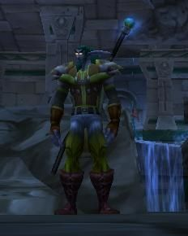
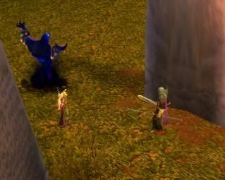

Les Terres de Kirin Tor
Elethir Menefaë
Points : 48
 Joué par :
[ Information masquée ]
Joué par :
[ Information masquée ]
Age : 276
Lieu de naisance : Bashal'aran
Signe de naissance : Tigre
Sexe : Homme
Race : Elfe
Faction : Alliance
Formation : Voleur
Niveau : 60
Guilde : Larmes d'Azshara (les)
Artisanat 1 : Dépeceur
Artisanat 2 : Artisant du cuir
Informations hrp : Elethir est un elfe assez jeune qui n'a eu d'autre choix que d'accepter la destinée à laquelle sa famille l'a voué.
Il porte en lui la mémoire de ses ancêtres, formidable bibliothèque d'informations.
Pour chasser les voix qui parasitent sans cesse son esprit, il déclame des vers, même au beau milieu d'un combat si cela est nécessaire. L'art poétique est la seule solution que l'Elfe ait trouvé pour échapper aux murmures qui hantent ses pensées.
(Je tiens à préciser que les morceaux de poêmes que l'on peut trouver à travers les récits à venir ne sont pas de moi, mais sont souvent modifiés par mes soins pour coller au texte. ^^ )
Description : Les "mille esprits" : Telle est la signification de "Menefaë" en ancien elfique. Et pour cause, une tradition familiale veut qu'à la mort d'un membre de la famille d'Elethir, ses descendants héritent de la mémoire du défunt, utilisant pour ce faire des procédés magiques Quel'dorei remontant aux temps anciens et oubliés de tous.
L'Elfe n'a rien à craindre : la chose est ignorée de tous. Les seules personnes au courant sont enfermées dans son esprit, et lui parlent en toutes occasions, pour le guider... pour qu'il survive.
Il n'a d'autre mentor que lui-même. Il est un porteur de mémoire, et n'a eu d'autre choix que d'accepter le fardeau dont il a la charge. Mais lui aussi, comme ses ancêtres avant lui, croit en la destinée particulière des Menefaë.
Troisième Ère [3]
Lune de la Force [2]
Décade du Panda
Décade du Gorille
Décade de l'Ours [2]
[Elethir] Où l'on en apprend plus sur Elethir, et où il rencontre un étrange druide.
L'Elfe se traîne sur le bord du rivage, laissant derrière lui un sillage ensanglanté. Le sable s'imbibe peu à peu du liquide vermeil. Jamais il n'aurait du s'approcher de cette île perdue... Les panthères dissimulées l'ont lacéré avant même qu'il ne les ait vu.[Elethir] Halte à Baie du Butin
Une quinte de toux déchire les côtes d'Elethir.
" Tu aurais du esquiver ce coup en plaçant ta lame à l'horizontal " Susurre la douce voix d'Arthaëlle au fin fond de son crâne.
" Ce n'est pas le moment de lui faire la morale Arthaëlle. Il faut trouver un moyen de l'aider à se sortir de ce pétrin !! Il va mourir à ce rythme... Et tous nos efforts seront perdus !" S'exlame Yllyth.
Elethir chasse les voix de ses ancêtres de son crâne en déclamant quelques vers, comme à son habitude. Quel fardeau que ses murmures qui le hante. Mais il n'a pas le choix : il est un porteur de mémoire, et il vivra et moura avec son précieux fardeau. L'elfe sent ses forces décliner... Il n'a pas le droit de quitter ce monde sans avoir transmis son savoir.
Des pas résonnent à ses côtés. Elethir ne voit déjà plus rien. Il ne peut qu'imaginer ce qui se trouve près de lui.
_ Tout va bien se passer mon ami. Je vais te sortir de là.
Elethir sent la fin venir pourtant... Il n'y a plus rien à faire.
Il fait signe à l'homme, quel qu'il soit, de s'approcher, et lui confie son secret. Le secret de plusieurs générations.
* * * * *
Elethir est né à Bashal'aran, pendant la décade du tigre. Seul ces lieux convenaient pour donner vie au nouveau né : la puissance magique qui en émanait était nécessaire à l'invocation des rituels Quel'dorei qui allait faire de l'Elfe un « porteur de mémoire ».
Transgressant de nombreux interdits elfiques, les Menefaë, depuis d'innombrables générations, pratiquent ces rituels à chaque naissance. Scellant dans les esprits de leurs enfants la mémoire de leurs ancêtres passés, ils espèrent qu'un jour viendra où l'un d'entre eux, grâce à cette formidable quantité de savoir, s'élèvera et mènera les Elfes, ainsi que toutes les races s'alliant à eux, vers quelque chose de meilleur, quelque soit cette chose. Douce utopie qui règne sur bien des curs.
Par une nuit sans lune, alors que les larmes du nouveau né déchiraient le silence appesanti des ténèbres environnants, les rituels furent donc pratiqués par les Menefaë, et les interdits bafoués une fois encore. L'elfe était marqué du sceau des Milles Mémoires, comme l'attestait le tatouage discret qui se trouvait au creux de sa nuque.
L'apprentissage de la vie est plus long pour un Elfe que pour un humain, et d'autant plus quand des voix lui parlent sans cesse : il fut difficile pour Elethir de ne pas sombrer dans la folie.
Pour échapper à ces voix qui menaçaient de lui faire perdre la raison, risquant de ne plus savoir laquelle de celles-ci était la sienne, le jeune Elfe résolut de s'investir dans un art, quel qu'il fut, et son choix se porta sur les arts poétiques. La passion avec laquelle il déclamait des vers obnubilait tellement son esprit que les voix qui s'agitaient dans les tréfonds de son esprit refluaient : la ferveur du jeune elfe amplifiait sa volonté, lui permettant de chasser momentanément les paroles fantomatiques de ses pensées.
Elethir mit cependant de nombreuses années avant de pouvoir s'accoutumer à la présence de ses ancêtres, partageant le même crâne que lui. Il ne savait pas toujours différencier sa mémoire de celles de ses compagnons immatériels. Peu à peu, avec le temps, l'Elfe avait su écarter de ses pensées les murmures de ses aïeux, se plongeant dès que nécessaire dans la passion immodérée pour la poésie qu'il avait acquise au fil des ans.
Le désir utopique qu'avait sa famille lui apparaissait finalement comme sa destinée, et il acceptait cette idée, fier de participer à un tel dessein. Aussi loin que sa mémoire puisse remonter (et seule Elune sait jusqu'où elle remonte), jamais un projet ne lui avait paru aussi audacieux. Il était conscient de la vanité d'une telle pensée, mais la croyance de ses ancêtres s'était emparée de lui, comme l'idée s'était emparée avant de toutes les âmes dont son esprit était le détenteur. Elethir savait ne pas être celui que sa famille attendait. Pour autant il n'abandonnerait pas la tâche qui lui avait été confié. Ses descendants apprendraient aussi de lui
Comme tous ses ancêtres avant lui, Elethir choisit la voie des ombres pour s'aventurer en Azeroth. Sa famille avait su conserver son secret grâce à une extrême discrétion. Il se devait d'agir de même. Et il bénéficierait ainsi des conseils avisés de ses ancêtres quand à la manière de faire. Son seul mentor ne serait autre que lui-même. Elethir quitta les domaines elfiques et partit à la rencontre d'autres races Il se devait d'apprendre, pour ses enfants, pour sa lignée future.
* * * * *
Elethir cligna des yeux. La douleur lancinante qui lui déchirait les entrailles avait disparu. Il était vêtu de lin blanc, allongé sur un lit de fortune composé de feuilles et de branchages, et pouvait entrapercevoir de nombreuses étoiles par delà la cime des arbres tropicaux.
Non loin de lui, un Elfe lui tournait le dos, alimentant un feu en y jetant de temps à autre quelques morceaux de bois mort. Ses cheveux verts étaient noués en une longue queue de cheval qui lui descendait le long du dos. Un long bâton, surmonté d'un globe bleu, était appuyé à un arbre proche. L'Elfe se retourna et lui adressa un sourire en constatant qu'il était éveillé.
_ Et bien tu vois Contrairement à ce que tu avais l'air de penser, tu n'es pas mort mon ami.
Sa voix était rauque et chaude, agréable et réconfortante. Il avait un visage bienveillant.
« Méfies-toi Elethir. Susurra la voix d'Eyscherel, un redoutable assassin qui avait été trahi par sa propre épouse. Ne te fie jamais à un unique sens. Ecoute, vois ,ressens Mais surtout réfléchis ! Une confiance mal placée peut tout réduire à néant.»
« Je suis seul juge Eyscherel. »
« Non Nous sommes tous juges ici. Seulement, toi tu peux décider de devenir ou non la main du bourreau. » Intervint Algalad, un ancêtre prêtre d'Elune.
« Qu'importe Laissez moi lui parler, vous jugerez ensuite ».
Elethir cligna brièvement des yeux alors qu'il chassait les pensées intruses qui résonnaient dans son crâne.
_ Elles te parlent ? Suggéra l'Elfe.
Elethir masqua difficilement sa surprise.
_ Pardon ?
_ Tes mémoires te parlent ? Précisa l'inconnu qui le dévisageait avec curiosité.
« Il sait ! Tues-le !!! Personne ne doit savoir !! »
Un concert de voies s'éleva dans l'esprit d'Elethir. Toutes clamaient leur colère à l'idée qu'un étranger puisse avoir connaissance du précieux secret des Mennefaë.
_ C'est en vain que sur l'herbe un guetteur assidu
Eût collé son oreille, il n'eût rien entendu ;
L'eau creusait sans rumeur comme sans violence,
Et Tyrande fondait son bruit sur ce silence.
Et enfin un soir, à l'heure où tout semble frémir,
A l'heure où le son du vent cesse de gémir,
Cénarius apparaît, et sur l'horizon sombre
Donne un signal de marche aux étoiles sans nombre
Les murmures outrés et incessants avaient disparu des pensées d'Elethir. Son regard se dirigea vers l'inconnu, qui le dévisageait toujours.
_ D'après ces vers j'imagine donc que c'est en effet le cas Je ne les avais jamais entendus. Très jolis. J'imagine qu'ils retracent des moments datant de « La fracture du monde » ?
Elethir sourit brièvement. Son interlocuteur ne manquait pas de vivacité d'esprit.
_ Il est normal que vous ne les ayez jamais entendus. Si vous savez déjà tant de choses sur mon compte vous pouvez aisément imaginer d'où je tire mes connaissances. En revanche, en ce qui me concerne, je ne sais rien de vous.
L'Elfe sourit à Elethir tout en s'emparant de son bâton afin de s'appuyer dessus.
_ En effet. Milles excuses. Je manque à la plus élémentaire des politesses. Mon nom est Itaelynn, suivant de Cenarius. Et en toute modestie, vous me devez une fière chandelle. Je ne donnais pas chère de votre peau sans mon intervention ! Enfin Je n'ai fait que ce qui était juste après tout.
Elethir acquiesça à la juste remarque de la personne qu'il pensait être un druide :
_ Sans aucun doute. Mais en contrepartie vous avez eu connaissance d'un secret que l'on pourrait qualifier de dangereux non ?
_ Intéressant serait sans doute plus proche de la réalité. Enfin Peu importe ! Un secret est ce qu'il est. Vous n'avez nul besoin de me croire mais celui-ci ne franchira pas mes lèvres.
Le regard d'Elethir se posa sur son armure de cuir, posée non loin de lui. Sa dague, ébréchée à force de trancher les chairs de ses ennemis, était encore suspendue à sa ceinture. Les yeux d'Itaelynn suivirent ceux du roublard.
_ Je n'aimerais guère que vous choisissiez une autre solution en réalité. Peut-être avais-je mal compris ce qu'en réalité vous appelez un secret dangereux ? J'espère ne pas vous avoir sauvé la vie pour vous voir en train d'essayer d'ôter la mienne. Surtout que vos chances d'y parvenir sont faibles, étant donné votre état. Que pourrais-je vous dire qui vous persuade de ma bonne foi ?
_ A moins que vous n'ayez un secret équivalent au mien je ne pense pas que vous puissiez me convaincre de quoi que ce soit. Répondit Elethir. Mais je n'ai pas l'intention de vous affronter rassurez-vous. Comme vous l'avez judicieusement fait remarquer je ne suis pas en état de me battre actuellement. Et puis plus simplement Vous m'avez sauvé d'une mort certaine. Vous ôter la vie serait d'une ingratitude à peine imaginable. A l'inverse j'ai même une dette de vie envers vous.
Les deux elfes se dévisagèrent. Le regard d'Itaelynn était franc et bon. Elethir détourna les yeux. Sans même connaître ce frère de la nuit il avait pourtant l'intime conviction de pouvoir lui faire confiance. Comment autant de sérénité pouvait-elle se dégager d'un être ? Lui qui avait toujours était tourmenté par les mémoires de ses ancêtres avait du mal à comprendre ce que la tranquillité pouvait être.
Ses yeux se posèrent sur le feu. Les flammes s'élevaient dans la nuit, nimbant les troncs et les feuilles alentours d'une aura orangée. Une branche craqua, soulevant dans les airs une nuée d'étincelles, qui devinrent des cendres avant même de toucher terre.
Itaelynn se leva et jeta une nouvelle branche au creux des flammes.
_ Bah Ce serait contraire à mes principes que de vous demander quoi que ce soit en échange de ce qui n'est que justice et bonté.
Néanmoins Plus qu'un paiement j'aimerais vous demander un service. Je ne vais pas m'attarder sur votre secret car d'après ce que j'ai pu constater j'en sais déjà trop. Même si comme je viens de vous le dire vous n'avez rien à craindre de moi. Enfin
Itaelynn leva des yeux empreints de sagesse sur Elethir.
_ Ma sur souffre d'un mal étrange. Je ne saurais vous expliquer ce qu'il en est exactement. Mais du peu que j'ai pu comprendre son esprit se dédouble. Enfin ce n'est pas simple à comprendre. Pour faire simple : elle est deux personnes à la fois. La plupart du temps ce n'est autre que ma sur. Mais quelquefois elle devient un espèce de monstre. Inutile de préciser que dans ces cas là elle est dangereuse. Sans quoi ce ne serait pas vraiment un problème.
Quoiqu'il en soit, d'après ce que vous m'avez raconté, peut-être êtes vous à même de la comprendre ! Si jamais vous pouviez veiller sur elle cela me rendrait un immense service. Si tant est qu'elle soit toujours à Teldrassil.
Elethir interrogea Itaelynn du regard. Il tenta de se lever mais une douleur lancinante l'en dissuada immédiatement.
_ J'imagine que la chose doit vous sembler étrange. Poursuivit le druide. Mais, curieusement, et sans vraiment avoir conscience de ce qui me pousse à penser une chose pareille, je crois que vous n'êtes pas mauvais. N'allez pas imaginer que je place ma confiance en vous aussi facilement. Mais si ce que vous me dites est vrai, alors je pense que vous vous emploierez à protéger ma sur. Si vous avez un lourd secret, sachez que celui-ci est le mien. En réalité je serais étonné que ma sur n'ait toujours pas été appréhendée et condamnée à mortpour ses crimes.
Si je ne suis pas à ses côtés c'est parce que je suis moi-même à la recherche d'un remède pour la soigner du mal qui la ronge, et non pas parce que j'ai peur de ce qu'elle pourrait me faire si elle venait à succomber à l'une de ses crises de folie en ma présence.
Vous, avec ce que vous m'avez raconté, vous êtes peut être la seule personne qui puisse la comprendre et l'aider, même momentanément. Si jamais vous voulez me remercier, alors rendez moi ce service Elethir.
Le voleur releva la tête. C'était la première fois qu'Itaelynn prononçait son nom.
Le druide tourna le dos à Elethir et commença à s'éloigner.
_ Rien ne vous y oblige mon ami. Vous m'en voyez désolé mais je dois partir Je suis sur la piste d'un possible remède et je n'aimerais pas la perdre. Que Cenarius vous guide dans votre quête. Si jamais vous souhaitez m'aider sachez que ma sur se nomme Aéline. Vous apprendrez le reste par vous-même si l'envie vous en prend.
Sur ces mots, Itaelynn disparut dans les ténèbres, laissant Elethir en proie au doute et à la confusion : que devait-il faire ?
« Ca ne te coûtera rien d'aller te renseigner Elethir. Lui souffla la voix d'Yllyth. Et puis tu lui dois la vie. C'est la moindre des choses ».
Surmontant la douleur, le roublard se leva, et s'empara de ses vêtements. Alors qu'il laçait les lanières de cuir qui retenaient son armure de nuit, des voix s'élevèrent dans son crâne.
«Etrange Elfe que cet Itaelynn. Murmura Aëlendur. »
« Assurément, il est rare de voir tant de ».
_ Si quelqu'un, la voyant si tremblante et si frêle,
Fût-ce pour la sauver, mettait la main sur elle,
Avant qu'il eût pu faire un pas ou dire un mot,
Il aurait sur le front l'ombre de l'échafaud.
« Approprié. » Chuchota une voix dans les méandres de l'esprit d'Elethir, avant de s'éteindre telle la flamme d'une bougie, soufflée par la puissance des vers.
Elethir haussa les épaules et vérifia que sa dague était bien accrochée à sa ceinture. Puis, alors qu'il s'habituait à la douleur qui le tenaillait, il quitta le campement, ses pas le portant vers les territoires Elfiques.
« Darnassus attendra, Elethir. Tu as rendez-vous avec Kheronos aujourd'hui .» lui rappella Eyscherel.
«Je sais
Rien ne presse. »
Elethir avait loué une chambre à l'auberge de Baie du Butin. Si les plaies qu'il avait reçu au combat avaient disparus grâce aux soins du druide, la douleur n'en demeurait pas moins présente.
Dans un soupir l'Elfe se leva. Le matin avait pointé depuis longtemps à sa fenêtre et Kheronos devait l'attendre.
Kheronos... Plus qu'une connaissance un ami. Comme beaucoup des personnes qu'il avait rencontré grâce à la guilde qui s'était maintenant dissolue : Le Grand Rêve.
Le roublard descendit avec précaution les marches de bois grinçantes. L'air vivifiant de la mer acheva de réveiller l'Elfe.
Aujourd'hui il aiderait son ami chasseur. Demain il partirait pour Darnassus à la recherche d'Aéline.
Alors qu'il se faisait ces réflexions le nain arriva, baillant à n'en plus finir, son fidèle gorille, plus grand que lui, le suivant à petit pas.
Elethir lui adressa un signe de la main. Aujourd'hui ils partaient chasser la Reine des panthères.
Le fusil du chasseur était accroché à son dos.
Elethir se permit un sourire. La bête ne leur échapperait pas une fois de plus.
« Pour traquer une panthère il faut... »
Des morceaux épars de poèmes vinrent à l'esprit d'Elethir. Il ne savait pas vraiment d'où ceux ci provenaient et s'en souciait peu : ils étaient appropriés. Les vers agrandirent un peu plus le sourire qui illuminait le visage du roublard.
_ A la bonne heure ! Moi, je suis le compagnon
Des coups d'épées, et j'ai la colère pour nom.
Et les armes à mon poing font peur aux bêtes fauves.
La bête dépecée, sera miroir d'un vieillard chauve.
Lune d'Agilité [1]
Décade du Tigre
Décade du Singe
Décade du Faucon [1]
[Elethir] Retour à Darnassus
Les serres lacérèrent le bois une fois encore alors que la créature hybride atterrissait sur les rivages de Teldrasil. Elethir sauta d'un geste souple au sol et confia les reines au Maître des hippogriffes.
Une fois la traque finie, l'Elfe s'était immédiatement lancé sur les traces d'Aéline. Seulement, comme Itaelynn l'avait sous entendu à demi-mots, retrouver sa jeune soeur ne serait pas chose aisée avec le peu d'informations dont il disposait.
Alors qu'il se faisait ces réflexions, des voix vinrent murmurer dans les tréfonds de son esprit, s'infiltrant insidieusement au coeur de ses pensées.
« Inutile de te presser. S'il y a quelque chose à trouver il est trop tard. Quelques minutes de plus ou de moins n'y changeront rien. »
Elethir pressa néanmoins le pas. Peut être par pure provocation, afin de montrer qu'il pouvait encore penser par lui même. Mais Algalad avait raison et il le savait pertinemment.
La chose lui fut prouver dans l'heure : la soeur d'Itaelynn, comme il l'apprit rapidement, avait disparu depuis maintenant plusieurs mois et personne ne savait ce qu'elle était devenue. Nul ne savait non plus si elle était vraiment coupable. D'après ce que le druide lui avait confié, c'était pourtant le cas.
« Tu as tenu ta promesse Elethir pas la peine d'insister. »
« Ma promesse était de veiller sur elle, Yllyth, pas de la laisser s'évanouir dans la nature.»
« Mais peut être que si tu la trouves tu la mettras en danger. Si nous ne découvrons pas où elle se terre alors qui le fera ? Laisse la. Tu as mieux à faire. »
« Laissez moi essayer...»
Sur ces mots, le voleur entreprit de mener une rapide enquête. Il ne découvrit rien qui lui fut véritablement utile. La seule chose qui l'intriguait restait le fait que les meurtres n'aient aucun lien logique, ne serait ce que dans la manière de tuer.
Les recherches des « Mille Esprits », après plusieurs heures à poser des questions, s'avérèrent infructueuses.
« Il semble que cette jeune elfe ait des prédispositions dans l'art de la fuite et de la dissimulation. Réussir à partir sans laisser d'indices relève de l'exploit. Je ne suis même pas sûr d'y être parvenu de mon vivant. » Susurra Eyscherel.
« La chance ne doit pas être étrangère à cela » Intervint Kolofuïn.
« Mais est-elle coupable ? » Interrogea le douce voix de Menöm.
« Nul doute que...»
_ « La Vérité, lumière effrayée, astre en fuite,
Evitant on ne sait quelle obscure poursuite,
Après s'être montrée un instant, disparaît.
Ainsi qu'une clarté passe en une forêt,
Elle s'en est allée au loin dans l'étendue,
Et s'est dans l'infini mystérieux perdue. »
L'essaim de paroles qui s'agitait dans le crâne d'Elethir reflua peu à peu. Une des sentinelles de Darnassus le dévisagea curieusement, se demandant pourquoi l'Elfe déclamait des vers sans raisons apparentes.
Je la trouverais...
Lune de l'Esprit
Décade de la Chouette
Décade de la Baleine
Décade du Lapin
Quatrième Ère [3]
Lune de la Force [1]
Décade du Panda [1]
[Elethir] Rêves et souvenirs...
Les esprits sommeillants au plus profond de ses pensées s'agitent.
« Nous ne sommes qu'un Elethir. Tu es nous et nous sommes toi. Acceptes-le. Acceptes le don qui t'a été offert. »
« Non, je ne suis que moi. Vous n'êtes pas. Vous n'êtes plus...»
« Nous sommes en toi. Nous te formons et t'éduquons...»
« Vous faites de moi un outil pour parvenir à vos fins. »
« Tu es un outil libre de penser et d'agir en ce cas. Ne te bats pas contre nous. Nous ne sommes pas ton ennemi. Tu n'es pas ton ennemi. Contemples et comprends ! Vois et apprends ! »
Elethir s'endort peu à peu, l'esprit troublé par des pensées qui ne sont pas les siennes. Des souvenirs datant de la nuit des temps remontent peu à peu en sa mémoire.
Vois et apprends.
Kolofuïn, engoncé dans une armure aussi noire que la nuit la plus obscure, s'avance lentement et fait face aux adversaires. Sa large épée à deux mains est suspendue en travers de son dos et la gigantesque garde au pommeau d'ivoire surplombe sa tête.
Ses compagnons sont en retrait derrière lui. Nul besoin de parler, chacun a connaissance de la tâche qui lui incombe.
Le guerrier dégaine la lourde lame de son gigantesque fourreau. Tout comme l'armure, l'acier dont est forgé l'arme est d'un noir d'ébène.
Kolofuïn signifie « Manteau de Nuit » en ancien Elfique et, alors que le guerrier charge l'ennemi, c'est en effet les ténèbres qui semblent s'abattre sur l'adversaire.
Le premier opposant tombe sous les coups féroces de la lame noire, transpercé de part en part, et les adversaires attaquent aussitôt Kolofuïn, inquiétés par son assurance... et par son allure.
Derrière Kolofuïn, ses amis s'ébranlent et entrent en scène, nul ennemi ne se soucie d'eux. C'est ce que voulait le guerrier.
« Vois-tu Elethir ? Je n'étais pas plus fort qu'un autre. Mais tout dans mon apparence laissait craindre le pire à mes adversaires. Ainsi je détournais leur attention suffisamment longtemps pour laisser à mes camarades le temps d'agir. Parfois les choses ne sont qu'une question d'apparence. »
« J'apprends Kolofuïn. J'apprends...»
Décade du Gorille
Décade de l'Ours
Lune d'Agilité
Décade du Tigre
Décade du Singe
Décade du Faucon
Lune de l'Esprit [2]
Décade de la Chouette
Décade de la Baleine [2]
[Elethir] Sombre découverte
Elethir avait à nouveau perdu la trace d'Aéline à Ironforge.[Elethir] De nouveaux souvenirs...
A force de recherches, il avait fini par la retrouver quelques jours auparavant en interrogeant l'aubergiste du port de Menethil. Celui-ci se souvenait parfaitement de la jeune Elfe qui avait passé la nuit dans une des chambres.
Mais la jeune fille s'était envolée pour la capitale des Nains, et Elethir avait donc à nouveau perdu sa trace. Si une elfe ne passait pas forcément inaperçue dans la petite ville fortifiée des Paluns, il n'en était rien à Ironforge, et il n'y avait nul moyen de découvrir où elle avait pu se terrer.
Aéline s'était aventurée dans des royaumes dont Elethir ne connaissait que peu de choses, exceptions faite au travers de souvenirs qui ne lui appartenaient pas. Dans ces territoires, l'Elfe avait peu d'appuis.
En désespoir de cause, après des mois de recherches infructueuses, l'Elfe avait pris un griffon pour Stormwind et s'était enfoncé dans la forêt d'Elwynn, juché sur sa panthère de givre.
Le roublard appréciait les forêts humaines. Leurs arbres n'étaient certes pas aussi impressionnants que ceux formant la voûte de Teldrasil, mais une atmosphère rassurante se dégageait de cette forêt, que la corruption semblait avoir à peu près épargnée jusqu'ici.
Porté par les pas mesurés et silencieux du félin, Elethir s'approchait peu à peu d'un lac au centre duquel se trouvait une petite île, un cairn trônant en son centre. Au pied du rocher monolithique se trouvaient un homme et une femme, plongés dans une discussion.
Sans se soucier nullement des deux humains, le fils des Mille Esprits voulut s'approcher du cairn, intrigué par un cet élément sorti tout droit d'un lointain passé. Elethir fit quelques pas en direction du lac, se préparant d'ors et déjà à plonger dans l'eau glacée.
Pourtant, quelque chose l'en empêcha. L'Elfe eut l'impression de se cogner brutalement à un mur. Surpris, il tendit la main pour toucher ce qui l'avait arrêté, mais il ne sentit rien d'autre que le vent lorsque ses doigts se refermèrent sur du vide. Toutefois, il y avait bel et bien cette barrière invisible qui l'empêchait d'avancer plus loin, ce mur impalpable et néanmoins bien réel.
Les humains, au loin, parlaient toujours, la distance rendant leurs paroles inaudibles pour le voleur. Il ne savait pas si ils l'avaient remarqué mais
« Il y a anguille sous roche Elethir, cette barrière magique est anormale. Murmura Eyscherel, coupant court aux réflexions du roublard. Sers toi des ombres et observes. »
« Vois et apprends. » Surenchérit Kolofuïn.
Ecoutant les conseils de ses aïeux, Elethir disparut à la vue des deux humains et s'abrita derrière une petite colline recouverte d'herbe verte et grasse, les scrutant d'un regard inquisiteur.
« Des démonistes. Au moins la femme c'est certain. Observe son familier... » Souffla Arthaëlle.
 Quelques minutes s'écoulèrent, et Elethir observait toujours, éclairé par les commentaires de ses ancêtres. Les deux humains semblaient être amoureux l'un de l'autre, à en juger par leurs gestes plein de tendresse. Pourtant un désaccord paraissait les séparer, au point que l'homme en vint à saisir ses armes, avant de s'effondrer en crachant du sang.
Elethir observa l'homme plus attentivement. Des cheveux blancs, des yeux cristallins Il ne l'avait jamais vu auparavant, mais c'était le genre de visage qui ne s'oubliait pas.
Les deux êtres coupés du monde continuaient à gesticuler au milieu des eaux inaccessibles. Et l'Elfe cherchait, en vain, à comprendre. Rien ne justifiait qu'il n'observasse plus longtemps les deux amants, si ce n'était les voix au fin fond de son esprit qui l'avertissaient sans cesse : « Prends garde, ce sont des démonistes ».
Et la prudence des Mille Esprits s'avéra payante. Alors que l'homme semblait plus affaibli que jamais, un genou posé au sol pour supporter son propre poids, la femme commença à répéter mot pour mot ce que son compagnon lui soufflait. Elethir n'entendait rien mais parvenait néanmoins à comprendre à peu près ce qui se passait, à comprendre qu'un rituel se mettait peu à peu en place. Car c'était bien en réalité un rituel qui se tramait sous ses yeux. Tout en répétant les paroles de son amant, la femme s'était en effet entaillée le poignet de la pointe de son épée, et, à l'aide de son sang, avait tracé un large N sur le cairn avant de le barrer d'un trait vermeil.
Elethir cherchait à mesurer la portée de ce qui se déroulait sous ses yeux, mais sa faible connaissance de la magie ne lui permettait pas de comprendre les tenants et les aboutissants de ce qu'il venait de voir.
« C'est un rituel d'invocation. Souffla Menöm. Ces démonistes sont dangereux j'en suis certain. Il va te falloir agir Elethir. Tu ne peux laisser ces hommes convoquer des créatures maléfiques sans rien faire. »
« Et comment vais-je faire Menöm ? Une barrière invisible m'empêche de traverser. »
« Je n'ai pas dit que l'heure était déjà au combat »
Elethir se camoufla encore un peu plus derrière le monticule d'herbe qui le dissimulait à la vue des deux humains. Rien ne s'était passé pourtant. Et l'Elfe, à nouveau, s'interrogeait.
L'homme et la femme recommencèrent à parler ensemble. Mais Elethir n'entendait toujours rien que quelques mots épars, portés jusqu'à lui par le vent.
Les choses lui échappèrent totalement lorsque les deux êtres humains saisirent leurs armes et commencèrent à s'affronter.
« Je ne comprends plus. »
De l'énergie à l'état pur était apparue dans les mains de la jeune femme et celle-ci avait lancé les forces obscures contre son amant, le frappant en pleine poitrine.
« Est-ce un meurtre passionnel ? Souffla Eyscherel. »
« Je ne crois pas. Mais je ne comprends pas plus que toi. »
L'homme s'effondra au sol, et la femme courut vers lui, visiblement persuadée qu'il était toujours en vie. Elethir ne se sentait pas en ces lieux à sa place et ne savait comment réagir. Etait-ce vraiment un meurtre ? Tout cela n'était-il qu'un rituel d'invocation comem le suggérait ses ancêtres ?
La femme semblait, au loin, désespérée, criant sa détresse, des larmes de désespoir roulant sur ses joues,
« Fais quelque chose Elethir. Va la voir et joue l'innocent. Cherche à comprendre. » Intervint Yllyth.
Le Roublard se leva, prêt à suivre les conseils de son ancêtre mais il se ravisa. Quelque chose n'était pas normal. Elethir mit quelques secondes avant de comprendre de quoi il s'agissait.
Les oiseaux s'étaient tus. Pas un seul bruit ne venait troubler le silence dans cette forêt pourtant pleine de vie.
Une vague d'énergie négative déferla alors, saisissant l'Elfe au plus profond de ses entrailles. Là-bas, le cadavre de l'homme semblait animé d'une vie nouvelle. Une récente énergie si puissante émanait de sa personne qu'Elethir ne put retenir le frisson qui lui remontait le long de l'échine. Des volutes d'énergie mauves semblaient danser autour de l'homme, et la femme elle-même avait reculé devant une telle force magique.
Une voix remonta du plus profond des pensées de l'Elfe, se faufilant à travers des siècles et des siècles de souvenirs, passant outre toutes les barrières mentales qu'Elethir avait pu ériger, une voix qu'il n'avait jamais entendu auparavant, si puissante qu'elle surpassa tous les murmures de ses aïeux.
Le fondateur des Mille Esprits, Aglarial , puissant Quel'dorei en son temps, s'adressa à lui.
« Fuis mon fils. Tu en sais assez... si ce n'est trop. Ce n'était pas un rituel d'invocation mais de libération. Seul, tu ne feras pas le poids face à un démon majeur. Fuis pour apprendre. Fuis pour comprendre. Mais il n'est pas encore temps de mourir. Je t'apprendrais comment vaincre »
La voix, pleine de puissance, résonna comme un ordre, comme un impératif de survie. L'Elfe sauta sur sa monture et quitta les lieux, laissant là un démon des temps anciens, qui venait de prendre possession du corps d'un homme.
« Ils sont dangereux Elethir. Mais tu dois d'abord savoir de quoi il s'agit exactement. »
« Je comprends »
Et alors qu'il répondait cela, sa monture bondissant souplement entre les arbres, des souvenirs nouveaux s'ouvrirent à lui, souvenirs d'un passé de magie et de puissance, souvenirs si anciens que l'Elfe fut saisi de vertiges.
_ « Ô sinistres forêts, vous avez vu ces ombres
Passer, l'une après l'autre, et, parmi vos décombres,
Vos ruines, vos lacs, vos ravins, vos fourrés,
Vous avez vu courir ces deux noirs cavaliers ;
Vous avez vu l'immense et farouche aventure ;
Les nuages, qui sont errants dans la nature,
Ont eu cette épouvante énorme au-dessous d'eux ;
La victoire est absente et l'exploit fut hideux ;
Et l'herbe et la broussaille, et les fleurs et les plantes,
La nature en son sein est encore toute tremblante. »
Elethir, enroulé dans une fine couverture de laine, s'agitait dans son sommeil, alors que des souvenirs nouveaux s'imposaient à sa conscience.
« Comme l'a dit Kolofuïn : Vois et apprends Elethir »
Aglarial se dresse au sommet d'une colline. La brume qui caractérise le lever du soleil traîne encore au sol en de minces serpents délétères, et les pieds du mage disparaissent à la vue, comme si l'Elfe flottait dans les airs, quelques centimètres au dessus du sol.
C'est une bataille acharnée qui se déroule au loin, et Aglarial attend patiemment, seul, que les quelques ennemis qui se trouvent près de lui percent les défenses elfiques.
Il sait que les ennemis finiront par passer, et au moment même où il songe à cela, un démon parvient à franchir les défenses et se précipite vers l'Elfe de sang, un rictus affiché sur le visage. Ses amples ailes chitineuses le propulsent vers Aglarial.
Celui-ci affiche un fin sourire, sûr de sa force.
Des flammèches bleutées parcourent les longs doigts fins du mage et sa main s'embrase. Un torrent d'énergie pure émane du Quel'dorei et alors que le démon s'apprête à abattre ses griffes aussi noires que la nuit sur sa victime, l'Elfe tend la main vers son adversaire : les flammèches deviennent flammes, les flammes deviennent brasier, le brasier devient torrent de feu, calcinant sur place le démon.
Aglarial abaisse son bras. Il ne reste plus de son opposant que des cendres, volants sous l'impulsion d'une légère brise.
Le mage fait un pas en avant et commence à descendre la colline, lentement, vers le champ de bataille. Il ne tombera pas aujourd'hui. Pas plus qu'il ne tombera demain. Les ennemis sont trop faibles encore... Et tout ceci n'est qu'un prélude.
Elethir se réveilla en sursaut, couvert de sueur. Ses tempes le lançaient douloureusement, et il ne pu s'empêcher de poser ses mains sur son crâne.
Il n'était pas de remèdes contre ce genre de maux de têtes autre que les vers.
_ « Et toujours, au dessus des clochers et des dômes,
Le vent lugubre joue avec tous ces fantômes,
Hier, demain, le jour, la nuit , l'été, l'hiver
Et ces morts sans repos, où fourmillent les vers.
L'affreux balancement de ces spectres hagards,
Couvrant ma destinée de leurs derniers regards,
Ce grelottement sourd de ferrailles funèbres,
Chassent dans la nuée, à travers les ténèbres,
Les purs esprits de l'aube et de l'azur, venus,
Pour s'abattre au milieu des vivants inconnus. »
La douleur reflua au rythme des alexandrins et Elethir, les mains toujours vissées sur son crâne, se leva lentement. Il devait affronter un démon... Il le savait maintenant. Même s'il ne se sentait pas de taille.
Les pensées s'agitaient en tous sens dans son crâne et le roublard, difficilement, parvint à en extraire quelques unes au coeur de l'essaim tourbillonnant d'idées qui s'imposaient à lui.
Je dois m'organiser...
Il était seul... Il avait toujours été seul. Et n'avait jamais eu réellement besoin d'aucune compagnie. Qu'en aurait-il fait ? Il avait déjà des dizaines de voix qui lui parlaient sans cesse. Ce n'était que maintenant qu'il réalisait que ces voix, si elles étaient des alliés précieux, n'avaient pas de consistance physique et ne pouvaient en rien l'aider de façon tangible.
Il lui fallait de l'aide... Il lui fallait des alliés. Avant toute chose...
« Tu as vite compris Elethir. Souffla la voix d'Aglarial. Ta plus grande faiblesse reste la solitude. »
« Je suis voué à la solitude Aglarial. C'est le prix à payer pour le précieux fardeau qu vous m'avez confié. Que tu m'as confié. »
« Ce n'est en rien un reproche. Nous avons toujours vécu... et vaincu dans la solitude. C'est bien plus souvent une force qu'une faiblesse, même si dans le cas présent l'inverse est de mise...»
« Je ne connais pas assez de monde... »
« Toi non... Moi oui. Je sais à quelle porte tu dois frapper. Je sais à quelle famille tu peux t'adresser. Tu devras les retrouver, mais ce ne sera pas impossible pour peu que ces familles existent toujours. Retrouve les membres de la maison Shadowbane. Trouve des alliés fiables...
Et retrouve cette femme. »
« Je dois la retrouver oui. Mais je dois également retrouver Aéline. »
« Oublies la. Elle n'a pas d'importance, comparé à ce que tu viens de découvrir. »
« Je m'y refuse. Je ne suis pas qu'un outil. Et qui sait ? Peut-être s'avérera t-elle être une alliée précieuse ? »
« J'en doute. Mais tu es seul maître de tes mouvements, je ne peux que me plier à tes envies. Seulement, n'oublies pas la raison d'être des Menefaë, Elethir. »
« Je n'oublie pas Aglarial, sois en sûr. Dis-moi... Ce rêve que j'ai fait. C'était ton passé n'est-ce pas ? Dois je donc recourir au feu pour vaincre ce démon ? C'est ce que tu essayais de me suggérer ? »
« Non. Ce que tu as vu, ou plutôt revu, ce n'était qu'un démon mineur. Je te montrerais ce qu'il faut que tu saches en temps utile. »
« Et pourquoi pas maintenant ? »
« Tu n'es pas encore près Elethir. Trouve des alliés, et prépare-toi.»
Mentalement, l'Elfe s'apprêta à rétorquer, mais il sentit qu'Aglarial s'était retiré au plus profond de sa mémoire, et il sut que celui-ci n'avait pas l'intention de pousser plus avant la discussion.
Les autres voix n'étaient pas intervenues pendant la courte conversation d'Elethir et de son plus vieil ancêtre, elles pourtant si bavardes en temps normal.
Toutes respectaient leur créateur. Celui qui avait manipulé la magie de manière à créer un rituel immensément puissant, celui qui leur avait permis à toutes d'être ce qu'elles étaient : des consciences capables d'interagir avec la réalité, à travers le temps, par le biais d'un corps qui ne leur appartenait pas.
Aglarial était-il donc si puissant ?
Le souvenir des chairs du démon fondant peu à peu sous la chaleur du brasier qui tenait dans la paume de la main du Quel'dorei revînt en mémoire à Elethir.
Oui... Il était puissant.
« Tu ne crois pas si bien dire. » Murmura Arthaëlle.
« Mais rassures-toi. Tu restes le seul maître à bord. » Ajouta Algalad.
« Parfois j'en doute mes amis...»
Elethir ramassa ses affaires et sortir de sa chambre. Le soleil était levé depuis peu, éclairant de ses rayons bienfaiteurs les plus basses branches de la forêt d'Elwynn. L'Elfe se rendit aux écuries après avoir payé l'aubergiste, récupéra sa monture, et sauta en selle.
_ « Votre coeur était haut, vous ne marchandiez pas !
Vous alliez en avant sans compter chaque pas !
Ô compagnons couchés dans la tombe profonde,
Si vous étiez vivants, nous prendrions le monde !
Elune ! Que voulez-vous que je fasse à présent ?
Mes yeux cherchent en vain un brave au coeur puissant,
Et vont, tout effrayés de notre immense tâche,
De ceux-là qui sont morts à ceux qui sont lâches.
Qu'importe, c'est maintenant que sonne l'alarme,
Et nul en ce monde, n'oubliera nos faits d'armes. »
Décade du Lapin
Cinquième Ère [9]
Lune de la Force [2]
Décade du Panda
Décade du Gorille [2]
[Elethir] Retrouvée
Elethir ne savait plus où chercher, ni qui chercher. Aéline ? La femme ? L'homme aux cheveux blancs ? Où devait-il donner de la tête en premier lieu ?[Elethir] : Rencontre imprévue
Les options étaient nombreuses, mais l'Elfe s'en était tenu à quelques conclusions simples : l'homme et la femme ignoraient qu'il avait vu leur rituel et n'avaient donc aucune raison de se méfier, ni même de se cacher, si nul autre qu'Elethir n'était au courant. Il était donc logique que les deux compagnons continuent leurs activités habituelles.
Du moins était-ce ce qu'espérait le roublard. S'appuyant sur ces quelques ébauches d'indices, il s'était embusqué à la sortie du tram d'Ironforge, attendant patiemment d'apercevoir une des personnes recherchées.
« Et pourquoi pas à Stormwind ? Souffla Yllyth. Ce sont des humains non ? »
« Ironforge reste l'endroit le plus fréquenté et un centre névralgique de l'activité de ce continent : le tram donne accès à Stormwind, les griffons peuvent emmener quiconque le souhaite au port de Menethil qui permet de gagner Kalimdor, et bien d'autres destinations encore. »
« Les choses ont bien changé... »
Elethir haussa les épaules. Il n'avait pas d'autres idées dans l'instant présent, et aucun de ses ancêtres n'avait été capable de lui suggérer une meilleure option.
Il attendit trois jours, alternant la surveillance du tram avec celle de l'auberge (les pierres de foyer y menant toutes), de la place d'Ironforge, et de l'arrivée des griffons, avant de croiser, presque par hasard, la femme qui avait accompli le rituel de libération.
« Et maintenant ? »
Nul ne lui répondit. L'Elfe afficha une moue dubitative.
« Merci »
Elethir s'approcha de la jeune femme brune et la suivit pas à pas. S'il se fiait aux critères de beauté des humains, elle pouvait sans doute être qualifiée de belle. Il grava les traits de la jeune femme, les ancra profondément dans sa mémoire, afin de pouvoir la décrire précisément par la suite si la chose s'avérait nécessaire.
_ Mademoiselle ?
La jeune femme continua à marcher, comme si elle ne l'avait pas entendu, ou pensant peut-être qu'il s'était adressé à quelqu'un d'autre.
_ Mademoiselle ?
Elle se retourna enfin.
_ Oui ?
Elethir se retint de soupirer. Il n'avait rien prévu d'autre que de la mettre en garde.
_ L'il invisible vous surveille. Veillez à ne pas trop vous écarter de la lumière.
Sur ces mots, il lança en l'air de la poudre éclipsante, et, dissimulé par le fin voile de poussière aux yeux de la démoniste, il s'éclipsa discrètement derrière un pilier, scrutant la mine perplexe de la jeune femme.
« Elethir ? Interrogea Arthaëlle. »
« Oui ? »
« Euh Tu ne sais rien de plus qu'avant là. »
« »
« Et c'est quoi cet il invisible ? »
« »
« Si j'avais encore une consistance physique, sache que j'aurais actuellement la tête entre mes mains et que je la secouerais d'un air désespéré »
« Je prépare le terrain Arthaëlle, cette femme va s'interroger et s'inquiéter. Quand je la rencontrerais à nouveau j'espère que ça pourra changer la donne, pour le moment je ne suis pas en position de force, et donc absolument pas en mesure d'obtenir des informations. »
« Ca se tient jusqu'ici »
« Quant à l'il invisible et bien J'ai l'intention de mettre en place un réseau chargé de collecter des informations. Ce n'est qu'un projet encore mais je pense que ça aboutira à quelque chose. Avec des personnes de confiance qui observent et me rapportent les évènements étranges chaque ville d'importance. Pour le moment je me contenterais de ça. Si j'arrive à trouver assez de monde je pourrais peut être même les envoyer enquêter. Non ? »
« Elethir tu ne connais personne »
« Ca viendra. Je n'allais tout de même pas me présenter sous le nom des Menefaë !! »
« Il est bête ? » Intervint Eyscherel.
« Encore un peu immature peut-être » Répondit Arthaëlle.
« Je vous prierais de tenir ce genre de conversations ailleurs que dans mon crâne ! »
« Elethir Tu comptes faire comment au juste ? Le peu de personnes que tu connais ne te permettra pas de fonder un tel ordre. »
« Chaque chose en son temps. Nous n'en sommes pas encore là. »
« L'idée est bonne. Il faudrait juste songer à la mûrir un peu plus. » Suggéra Menöm.
Elethir haussa les épaules, toujours dissimulé derrière un large pilier de granit. La femme était partie, mais l'Elfe n'en avait cure.
« De toute manière je n'ai pas le choix. Aglarial a raison je ne peux pas affronter un démon avec les moyens dont je dispose actuellement. Fonder l'il invisible me permettra d'augmenter mes chances. Et puis c'est la vocation des Mille Esprits quelque part non ? »
« Comment ça ? »
« Posséder plusieurs mémoires me permet d'engranger des connaissances innombrables. Cependant, si je veux pouvoir agir, il me faut comprendre les rouages qui font tourner ce monde. Avec vos expériences passées j'ai déjà assimilé certains mécanismes politiques, stratégiques et autres Mais c'est ce monde qu'il me faut comprendre, c'est l'époque actuelle qui reste insaisissable, pour vous comme pour moi. L'il invisible me permettra d'appréhender la réalité des choses et d'agir. »
« Je vois que tu as réfléchi la question. Comme toujours tu sais que nous sommes avec toi jusqu'au bout. »
« Vous n'avez guère le choix. »
« En effet. Mais nous t'aiderons autant que faire se peut. »
« L'il invisible Le nom sonne bien je trouve. Jugea Eyscherel. Collecter des informations discrètement... Hmm ça colle tout à fait en réalité. »
« Et en ce qui concerne la démoniste ? Intervint Yllyth. Tu as l'intention de rester embusquer jusqu'à ce qu'elle repasse par ici ? »
« Non. Je vais chercher Aéline maintenant. J'ai déjà attendu trop longtemps pour tenir cette promesse. »
« Si j'avais une consistance physique » Commença Arthaëlle.
« Tu soupirerais ? »
« »
Elethir afficha un fin sourire et s'aventura hors de sa cachette. La femme avait depuis longtemps disparu. L'Elfe s'étira, assouplissant les muscles restés inactifs durant sa longue conversation intérieure.
_ « La jeune fille, apeurée, prit la fuite,
Alors commença l'âpre et sauvage poursuite :
Les larmes aux yeux, l'enfant épouvantée se sauve,
Devant elle, n'importe où, dans la profondeur fauve.
Les ombres se sont écartées devant son passage,
Mais courir sans répit, fuir, est-ce bien sage ?
Nul ne le sait ; le sort est de mystères plein ;
Mais la panique existe, et le triste orphelin,
Ne peut plus que s'enfuir devant la destinée,
Il ne reste que l'exil, amère fatalité ! »
Elethir la recroisa complètement par hasard. Il venait d'acquérir de fines lanières de cuir chez un marchand, afin de créer des renforts efficaces pour son armure bardée de coups de griffes et de lames, quand il aperçut la jeune démoniste dans les rues de Stormwind. La nuit était déjà tombée, et peu à peu, les fenêtres s'illuminaient de lumières qui n'étaient plus naturelles.
Les longs cheveux bruns de la demoiselle étaient relevés en une coiffure élégante au sommet de son crâne, et elle marchait lentement vers la place centrale de la cité, dans le quartier des marchands.
Sans attendre la réaction d'un seul de ses compagnons spirituels, l'Elfe s'était dissimulé, et il observait attentivement la jeune femme.
Celle-ci salua quelques personnes de sa connaissance, avant d'entammer une discussion avec un homme brun, visiblement âgé d'une vingtaine d'années. Elethir resta soigneusement caché derrière un arbre, parvenant à saisir quelques bribes éparses de conversations.
« Rapproches-toi. » Souffla Algarad, aussi curieux qu'Elethir lui-même.
« Il ne peut pas. Répondit Eyscherel à sa place. Elle le verrait. »
Et de fait, c'était vrai. Une fois de plus, le roublard en était réduit à n'entendre que des informations partielles et incomplétes. Néanmoins, les deux humains ne semblaient discuter de rien qui vaille la peine d'être véritablement entendu, ou qui puisse avoir un lien quelconque avec ce qu'Elethir avait aperçu auparavant.
Elle avait appelé l'homme : Well Sans doute un diminutif. Dans la mesure du possible le roublard se renseignerait après. Quant à elle Son surnom était Gyl.
Gyl pour Gylianell.
« Enfin quelque chose de concret » Soupira Arthaëlle.
Leur conversation prit fin et la dénommée Gylianell s'adossa à la fontaine, fermant doucement les yeux, comme pour écouter le son de l'eau limpide jaillissant de la pierre ancestrale.
Elethir, sans aucune prudence, sortit de l'ombre et vint s'installer près d'elle. Elle ne sembla même pas remarquer sa présence.
_ Bonsoir.
Elle le dévisagea enfin. Nulle inquiétude ne passa sur son visage.
« Elle ne semble même pas surprise. »
« Peut-être parce qu'elle ne l'est pas ? »
« C'est un point qui joue en ta défaveur en ce cas. »
_ Bonsoir.
Un silence.
_ Belle soirée n'est ce pas ?
« Décidément... Tu n'es pas doué pour adresser la paroles à des inconnues ».
_ Oui, mais il commence à se faire tard.
La jeune femme soupira, comme si le simple fait de prononcer ces quelques paroles la fatiguait.
_ En effet.
Les yeux d'Elethir s'égarèrent dans l'immensité du ciel étoilé. Il souhaitait se montrer aussi détendue que la démoniste. Celle-ci resta aussi silencieuse que lui avant de reprendre la parole :
_ Je vais y aller. Je suis fatiguée. Ravie de vous avoir rencontré.
_ Oui Les rituels de libération ont une fâcheuse tendance à épuiser ceux qui paient un certain tribut..
Elethir jeta un regard équivoque vers les poignets de la femme où une large cicatrice était encore visible. Elle les cacha prestement, tout en le dévisageant d'un air d'incompréhension suspicieuse.
_ Mais Vous êtes l'homme d'Ironforge !!!
« Ou bien elle est stupide Ou bien elle est d'une naïveté sans bornes Ou bien elle est une formidable comédienne » Jugea Eyscherel.
_ En effet. Je suis étonné que vous ne vous en soyez pas aperçu plus tôt à vrai dire
Elle ignora la remarque.
_ Que me voulez-vous ?
« Elles te disent toutes ça ! » Susurra Kolofuïn, d'une voix qui parut narquoise à Elethir.
« Je n'y peux pas grand chose »
_ Rien. Parler d'une connaissance commune.
De nouveau Elethir jeta un coup d'il vers les poignets de Gylianell.
_ Dakatarn ? Vous avez des nouvelles ?
« Il s'appelle Dakatarn donc Mais elle ne semble pas en savoir plus ?!? »
C'était une affirmation aussi bien qu'une question.
« Je ne sais pas. »
« Tu avances en terrain difficile... »
_ A vrai dire j'espérais que vous pourriez m'apporter des réponses. Et de ses nouvelles.
Elle le dévisagea de nouveau d'un air suspicieux.
_ Que lui voulez vous ?
Elethir soupira.
« Les choses sont toujours si compliquées. »
« Si elles étaient simples elles perdraient de leur saveur. » Lui répondit Menöm.
_ Je ne suis pas sûr de savoir ce que je lui veux.
Gylianell lui jeta un regard indéchiffrable.
_ Alors je ne vous aiderais pas. Bonne soirée.
Et sur ces mots elle partit, sans laisser à Elethir le temps de réagir.
« Décidément Tu n'es pas doué Elethir. »
« Je connais son nom maintenant. Et si elle ne sait pas où il est, elle ne m'intéresse guère. »
« Inutile de te justifier. Elle avait probablement des informations. Tu n'as pas réussi à t'en emparer. Mais nous avons fait un pas. C'est déjà cela. »
Elethir haussa les épaules et partit à son tour, se perdant dans les ruelles de Stormwind, plongé dans ses pensées. Sur sa route, il croisa un paladin, engoncé dans son armure de métal, et les vers s'imposèrent naturellement à sa conscience, coupant court aux réflexions de ses ancêtres :
_ « La terre a vu jadis errer des paladins ;
Ils flamboyaient ainsi que des éclairs soudains,
Puis s'évanouissaient, laissant sur les visages,
Le respect, et la lueur de leurs brusques passages ;
Ils étaient, dans des temps d'oppression, de deuil,
De honte, où l'infamie étendait son orgueil,
Les spectres de l'honneur, du droit, de la justice ;
Ils foudroyaient le crime, ils souffletaient le vice ;
On voyait le vol fuir, l'imposture hésiter,
Blêmir la trahison, et se déconcerter
Toute puissance injuste, inhumaine, usurpée,
Devant ces magistrats sinistres de l'épée. »
Décade de l'Ours
Lune d'Agilité [2]
Décade du Tigre [2]
[Elethir] Aéline
Elethir se risqua hors de son abri. La pluie torrentielle avait enfin cessé de s'abattre sur les terres d'Arathi et le roublard pouvait à nouveau avancer sans craindre d'être complètement détrempé.[Elethir] Page éphèmére
Ses semelles de cuir noir s'enfoncèrent dans le sol spongieux alors qu'il quittait le couvert de l'arbre lui ayant servi de refuge provisoire.
Les pas d'Elethir finirent par lui faire passer la herse de la gigantesque muraille naine, fortification impressionnante par sa taille, mais depuis longtemps abandonnée aux ravages du temps et des intempéries.
Hillsbrad Enfin.
Il avait fallu au fils des Menefaë un mois de plus afin de retrouver la trace d'Aéline. Un curieux pressentiment avait conduit Elethir à s'imaginer que la jeune femme avait préféré s'aventurer dans les royaumes humains plutôt que dans les environs d'Ironforge, et ses soupçons s'étaient avérés fondés.
Le roublard avait fini par retrouver sa trace. Tout d'abord à Stormwind, où un humain se souvenait parfaitement l'avoir vu pleurer près d'une fontaine, et lui avoir demandé les raisons de ces larmes, raisons qui au final, semblaient être proches de ce qu'Elethir savait d'elle.
« Quelle chance ! S'était exclamé Kolofuïn. Il y a je ne sais combien de personnes dans cette ville et tu as interrogé la bonne !! »
« C'est au moins la cinquantième personne à qui je demandais des renseignements Kolofuïn !! »
Le roublard avait par la suite retrouvé sa piste au Darkshire. L'aubergiste se souvenait d'une Elfe toujours sur le qui vive, qui, une nuit, avait cauchemardé tant et si bien que le pauvre homme, inquiété, était venu vérifier que la jeune fille se portait bien. Celle-ci avait failli l'égorger quand il avait voulu la réveiller, saisissant la lame se trouvant sur sa table de chevet et la lui plaquant sous la gorge.
Elethir n'était pas sûr que cette personne soit bien Aéline, mais la description qu'en avait fait l'aubergiste correspondait à peu de choses près à celle de l'homme qui l'avait rencontrée près de la fontaine.
L'aubergiste ne savait pas où l'Elfe se trouvait maintenant, mais il avait supposé qu'elle s'était aventurée dans les contreforts d'Hillsbrad. En désespoir de cause, Elethir avait suivi cette piste.
Alors qu'il se remémorait la façon dont il avait retrouvé la piste de la jeune fille, le pied d'Elethir s'enfonça dans la boue fraîchement formée par la pluie.
_ Saleté
Il parvint, non sans mal, à extraire dans un grand bruit de succion sa botte de cuir du piège naturel dans lequel elle s'était embourbé.
Quelques minutes plus tard, il arriva enfin à Southstore. La ville était calme et peu de monde se trouvait dehors : le temps exécrable n'y était sans doute pas étranger.
« Au vu du peu de demeures tu n'auras pas grand monde à interroger. » Souffla Eyscherel.
« Par où commence t-on ? »
« Comme toujours. Par l'endroit où elle est le plus susceptible de s'être réfugiée : l'auberge. Et prions pour qu'elle y soit toujours. »
Elle y était toujours. L'aubergiste lui confirma la chose dans les minutes qui suivirent. Une Elfe qui ressemblait fort à la description qui lui avait été faite d'Aéline résidait à l'auberge, bien qu'elle se fusse absentée.
La peau mauve pâle, des cheveux bleutés, un visage fin abritant un regard fuyant Les chances que ce ne soit pas elle sont faibles.
Elethir loua la chambre voisine, non sans avoir spécifier à l'aubergiste de ne pas annoncer sa présence : il était un membre de la famille et souhaitait lui faire une surprise. L'homme eut un air suspicieux, avant d'hausser les épaules.
Le roublard gravît les escaliers de bois, entra dans sa chambre, et se jeta sur le lit.
« Et maintenant que tu l'as retrouvé ? Murmura Eyscherel. Que comptes tu faire ? »
« L'aider. Si la chose est possible, et si elle accepte. »
« Et l'il invisible ? Tout le reste ? »
« Je vais l'aider. Parler avec elle et essayer de comprendre. Pas jouer à la nourrice et passer ma vie à son chevet. J'ai mieux à faire. »
« Bien »
La conversation s'acheva sur ces mots et Elethir entreprit de faire une toilette rapide, non sans oublier de laver son armure de cuir de la crasse dont elle était recouverte.
Il attendit quelques heures avant d'entendre du bruit dans la pièce voisine.
« Il semble qu'il soit temps de s'occuper de cette affaire. »
Elethir sortit de sa chambre, s'engouffra dans le couloir, et frappa à la porte voisine. Les bruits cessèrent immédiatement. Il frappa à nouveau. La porte s'entrouvrit et une voix féminine s'adressa à lui :
_ Que voulez vous ?
_ Vous parler.
_ Qui êtes vous ?
_ Un ami d'Itaelynn.
Rien d'autre que le silence.
_ Entrez
Elethir franchit le seuil de la porte. Les choses semblaient se passer en douceur jusqu'ici et le roublard ne put s'empêcher de s'en féliciter. A peine ces pensées lui avaient-elles effleuré l'esprit qu'il se retrouva avec une lame sous la gorge.
_ Mon frère ne m'a pas parlé de vous. Je réitère donc ma question : qui êtes vous ?
Elethir haussa les épaules. La jeune fille, même si elle était instable, ne l'inquiétait pas.
_ Je suis Elethir Menefaë. Cela vous éclaire t-il ? Je vous certifie que je ne vous veux pas de mal. Pouvez-vous retirer cette lame ?
_ Rien ne me le prouve.
_ En effet
_ Et que me voulez vous, Elethir ? Elle appuya le tranchant de la lame sur la peau de l'Elfe en même temps qu'elle prononçait ces paroles.
_ Vous aider. Je connais votre situation et Itaelynn a pensé que je serais peut-être à même de vous comprendre mieux que lui. Pour ma part je ne pense pas en être plus capable qu'un autre. »
_ On ne peut pas m'aider.
_ A vrai dire je n'en sais rien, mais si vous le dites
Aéline haussa un sourcil.
_ Comment pourriez vous m'aider ? Vous n'avez pas l'air d'en avoir envie.
La main d'Elethir vola vers le poignet de la jeune fille, et d'une brusque torsion, il lui fit lâcher la dague qu'elle tenait en main, avant de la repousser loin de lui.
_ Pour commencer, je ne vous aiderais pas tant que j'aurais cette lame sous la gorge. Soyons clairs : j'ai promis à votre frère que je vous aiderais et je m'y tiendrais, même si je ne sais pas encore comment faire. Si j'avais voulu vous tuer, vous seriez morte et l'affaire serait entendue.
Une pointe d'agacement perçait dans la voix d'Elethir. Il se pencha, ramassa la dague, et la tendit à Aéline, qui s'en empara prestement.
« Doucement Elethir. Elle est jeune et en fuite, donc aux aguets... Sa réaction est tout ce qu'il y a de plus normal. Soupira Arthaëlle. Ne la brusque pas. »
_ Vous ne POUVEZ pas m'aider. Cria presque Aéline. Et je n'ai pas besoin de votre aide !!
_ C'est vous qui le dites. Votre frère ne pense pourtant pas la même chose.
_ Et pourquoi vous a t-il confié cette tâche ? Qu'est ce qui a bien pu lui faire penser que vous pourriez ne serait-ce que me comprendre ?
_ Pour faire simple Disons que j'ai eu quelques problèmes avec ceci par le passé moi aussi. Dit Elethir en se tapotant le crâne du bout de l'index. Même si mes voix à moi ne m'ont jamais incité à faire le mal.
_ Vos voix ? Il y en avait plusieurs ? Le visage d'Aéline exprimait maintenant une curiosité manifeste.
« La curiosité que tu as suscité surpasse sa colère. Très bien : détourner l'attention. Jene pensais pas que tu appliquerais mes leçons de cette manière mais le résultat est là. » Approuva Kolofuïn.
« Je n'avais pas poussé la réflexion jusque là »
_ Oui, c'est assez compliqué. Continua Elethir. Cependant la question n'est pas de savoir ce que sont étaient mes voix... Mais plutôt de savoir ce qu'est exactement la vôtre.
La fugitive ne répondit rien. Elle paraissait réfléchir aux diverses implications de ce qu'elle allait dire ou non.
Enfin, avec un soupir, elle se rendit enfin à l'évidence : il ne lui voulait pas de mal, et elle voulait en apprendre plus.
_ Vos voix vous dictent-elles des ordres ?
Elethir afficha un fin sourire.
_ Haha Non. Elles aimeraient bien je pense. Mais elles ne peuvent pas.
« Ingrat. » Souffla la voix d'Yllyth.
« Je plaisantais »
_ Pourquoi ? La vôtre vous demande-elle d'accomplir certaines choses ? Enchaina le roublard.
_ Non Elle ne me demande rien. Elle me dicte mes actes et je ne peux que m'y plier. La plupart du temps, c'est une liste de tortures, physiques ou mentales, qu'elle m'ordonne de mettre à l'uvre envers des êtres qui me sont chers. Et je ne peux qu'obéir C'est pourquoi, maintenant, je m'interdis l'attachement. Il ne me reste plus qu'une personne et celle-ci se trouve être mon frère. Je ne veux pas lui faire du mal
Aéline déversait un flot de paroles continues, se libérant ainsi d'un fardeau dont elle ne voulait plus partager seule le secret. Elethir médita un instant les propos qu'elle venait de lui tenir.
« Qu'en pensez vous ? »
« Et bien Il y a deux solutions. Répondit Menöm. Ou bien elle est atteinte de troubles mentaux et c'est l'hypothèse la plus probable - ou bien elle est victime d'une magie occulte Mais pour être franc la deuxième hypothèse n'est absolument pas plausible. »
Le roublard fit quelques pas dans la pièce et s'adossa au mur.
_ Cette voix Est-ce que c'est une intrusion dans votre esprit ? Ou bien une partie de vous même ?
_ La mienne est étrangère Lorsqu'elle m'a parlé la première fois, elle... elle ne me contrôlait pas encore, elle ne me disait que des choses sanglantes horribles... Jusqu'au moment où je n'entendais tout simplement plus ces choses Je les exécutais, comme si mes véritables pensées étaient prisonnières derrière des barreaux de métal et que je ne pouvais que contempler mon corps faire ce à quoi mon esprit s'opposait. Ca ressemblait plus à une intrusion oui.
La regard de la jeune Elfe se perdit dans le vide, affrontant sans doute les réminiscences de désagréables souvenirs. Elethir la sortit de sa torpeur en lui adressant de nouveau la parole.
_ Ca doit sans doute ressembler à un interrogatoire et j'en suis conscient mais il est nécessaire de cerner le problème. Ce sera déjà un plus si je veux vous aider.
Aéline cligna brièvement des yeux, revenant à la réalité.
_ Hein ? Euh oui Je comprends. Même si je doute de l'efficacité de la méthode. Vous savez je peux parfois être dangereuse, j'ai plus ou moins appris à lutter contre cette voix mais il m'arrive d'être en "transe". Je ne contrôle plus rien Je ne me souviens de rien J'ai plusieurs fois essayé d'assassiner mon propre frère... Méfiez vous de moi c'est tout ce que je peux vous dire.
Mais Quel intérêt avez-vous à m'aider ? Pourquoi acceptez vous cette corvée ?
Elethir plongea ses yeux dans ceux d'Aéline, évaluant ses propos. Elle semblait sincère.
_ Pour résumer la situation : je dois la vie à votre frère. Cette dette de vie, c'est en sauvant la votre, en sauvant votre future, que je souhaite m'en acquitter. Je dois vous protéger faute de pouvoir vous soigner, et cela quitte à vous protéger contre vous-même.
_ Me protéger ? Mais vous ne comprenez donc pas que c'est inutile !! Je suis condamnée. Ce sont toute les personnes autour de moi qui ont besoin de protection ! Si un jour on me tue Jeje mériterais ce châtiment pour mes actes ! Et j'ai parfois presque hâte de connaître ce jour... pour expier mes meurtres !
Elethir haussa les épaules. Il pouvait lire sur le visage d'Aéline la profonde tristesse qu'elle ressentait. Il ne se sentait pour autant que peu concerné. Les problèmes de la jeune fille n'avait aucun rapport avec les siens et ils étaient, finalement, de peu d'importance comparés à ce qu'il avait appris peu de temps auparavant.
Néanmoins, le roublard se sentait étrangement responsable de la demoiselle.
Dis toi que tu lui dois la vie
« Ce ne sera jamais qu'à son frère que tu la devras. » Lui rappela Yllyth.
Elethir soupira.
_ Vous n'êtes pas coupable d'un acte que vous n'avez pas prémédité. Je ne suis même pas sûr que l'on puisse dire que vous ayez accompli un acte répréhensible.
Aéline ne répondit pas. Une larme coulait lentement le long de sa peau mauve pâle. Il sentit qu'il était temps de prendre congé. Il ne fallait pas insister.
_ Une dernière chose, et pardonnez moi cette question mais Est-ce vous qui avez tué votre père ?
_ Non... Je l'ai vu mourir... Mais je ne l'ai pas tué... C'est même ce jour là que la voix est apparue.
Cet aveu souleva de nouvelles interrogations chez le descendant des Menefaë, mais il s'abstint d'y donner voix. Elle avait besoin d'être seule. La compagnie lui faisait plus de mal qu'autre chose d'après ce qu'il pouvait en juger. Et le lien était fragile, il ne tenait pas à le briser.
_ Bien... Je vous remercie. Je ne vous demande pas de me faire confiance mais je ferais mon possible pour vous soutenir. Croyez-moi...
Sur ces mots, et sans lui laisser le temps de répondre, Elethir sortit de la chambre et referma doucement la porte derrière lui.
« Comment se fait-il qu'elle se soit confiée à toi si aisément ? »
« La solitude j'imagine... Rien de pire que de devoir garder en son sein un lourd secret n'est-ce pas ?»
Yllyth ignora la remarque.
«Quoiqu'il en soit, je vois mal comment tu comptes l'aider Elethir. Tu ne peux pas faire grand chose pour elle. »
« Je ne peux sans doute pas l'aider en effet... Néanmoins, je peux la sortir de la solitude. Je ne crains pas ses lames, pas plus que ses larmes. Je ne parviendrais peut-être pas à la guérir certes... Mais peut-être parviendrais-je en revanche à lui redonner un semblant de sourire, à lui redonner ne serait-ce qu'un minimum goût à la vie et aux autres. Et dès lors j'aurais effacé ma dette... »
« Tu ne comptes donc pas la soigner ? »
« Non pas que je ne veuille pas Mais tout simplement... je ne peux pas. Si au moins je pouvais comprendre. Mais je ne suis pas un médecin ! »
« Toi non. Souffla Menöm. Moi oui. »
« Je vais avoir besoin de toi en ce cas »
L'encre noircit la page d'une écriture fine et acérée, au fur et à mesure que le vieil elfique recouvre le papier vierge.
Je suis parvenu, ce soir, à chasser ces voix qui hantent mon crâne. Pour combien de temps encore ? Je ne sais pas Le temps de finir cette page peut-être. Il y a des jours où je n'en peux plus de cette destinée qui est la mienne, et où, inlassablement, la question « pourquoi moi ? » vient tarauder mon esprit.
Esprit qui ne m'appartient pas. Mais m'a t-il déjà appartenu ? Je n'en peux plus
Quelles sont ces voix qui viennent me transpercer le crâne, comme une lance transperce la chair. Si la gangrène gagne un homme alors il faut trancher un membre... Mais l'on ne peut me trancher la tête.
Ma destinée est cruelle. Et je ne peux pourtant m'imaginer vivre sans elle. Peut-être mourais-je sans être parvenu à accomplir ce qu'on attend de moi, mais je mourais en essayant, comme tant d'autres avant moi, dont les souvenirs des douloureuses agonies hantent ma mémoire.
Parfois j'ai l'impression d'être déjà mort. Pourquoi serais-je vivant ? Ma vie ne m'appartient pas. J'ai déjà plus de souvenirs que quiconque ici bas y compris celui de ma mort de mes morts.
J'ai l'impression d'être un spectre, fantôme délétère, errant au milieu des vivants. Visage anonyme parmi d'autres visages anonymes. Eternel solitaire ballotté au creux des foules.
Que suis-je sinon l'incarnation de la solitude ? Et pourtant également l'incarnation d'un espoir, porté par les millénaires. L'espoir et la solitude vont-ils de pair ? Dois-je donc être seul ? Définitivement ?
Mais non j'oubliais. Je ne suis pas seul. Mes ancêtres me veillent... Je n'ai le droit qu'à la compagnie de personnes immatérielles... Une chance ? Oui. Je crois que c'en est une.
D'autres n'ont même pas ça. Qui suis-je pour me plaindre ? Je ne suis que l'instrument d'un projet titanesque. Et pourtant si j'avais envie de mener une existence normaleNon. Je ne pourrais pas.
Je ne le veux pas. Comment m'imaginer vivre sans quelque chose que j'ai toujours connu ?
Je ne suis même pas parvenu à la fin de cette page que déjà je sens mes ancêtres prêts à revenir à la charge.
En suis-je donc réduit à confier mes états d'âmes à une feuille de papier ? Je fais partie d'une épopée que nul ne contera un jour... parce qu'elle reste inconnue de tous. Combien déjà de personnes sont restées dans les ténèbres quand elles en ont sauvé des centaines ?
Tel est mon lot. Je dois rester dans l'ombre...
Personne ne doit savoir. Personne ne saura jamais.
Elethir s'empare du fin papier jaunâtre et l'approche près de la flamme d'une chandelle. Ses écrits s'embrasent et disparaissent peu à peu pour laisser leur place à des cendres.
_ Personne ne doit savoir et mes pensées ne sont que poussières.
Décade du Singe
Décade du Faucon
Lune de l'Esprit [5]
Décade de la Chouette [4]
[Elethir] Aglarial
« Il est temps que tu comprennes les dangers que tu cours Elethir ».Souffla la voix d'Eyscherel, l'assassin méticuleux, dans le sommeil du roublard.[Elethir] Retour dans les Contreforts
Et l'Elfe se vit de nouveau entraîné dans une plongée sans fin vers les abysses de sa mémoire
Les arbres défilaient à la périphérie du champ de vision d'Eyscherel alors qu'il fuyait. D'un saut souple, il passa par dessus un large tronc affaissé au sol et atterrit sur les feuilles mortes qui jonchaient le tapis de mousse.
Il ne regarda pas derrière lui si ses poursuivants le rattrapaient. La ville n'était plus loin. Et il y gagnerait une sécurité toute relative.
Il passa en trombe devant une des sentinelles qui gardaient l'entrée et tourna immédiatement à gauche pour se soustraire à la vue de ses poursuivants. L'assassin avait le souffle court.
Dague en main, il se fondit dans les ombres et attendit de voir ses poursuivants passer. Dissimulé derrière un tonneau vide, il guettait avidement une présence ennemie lorsque des pas pressés retentirent sur les pavés
Une femme passa devant lui.
Sa femme.
Une larme silencieuse coula le long de la joue d'Eyscherel. Ce n'était plus sa femme. Ce n'était qu'une marionnette dénuée de vie, un jouet entre les mains de ses ennemis. Il ne savait pas qui ils étaient Mais il les trouverait. Et il les tuerait.
Dans son crâne, de petites voix hurlaient que l'heure n'était pas à la vengeance mais bien à la survie. Les conseils de ses ancêtres étaient avisés et l'Elfe décida de s'y tenir. Il ne pouvait pas attaquer un ennemi qu'il ne connaissait pas.
Avec toute la prudence du monde, Eyscherel sortit un il de sa cachette et observa la ruelle. Pas un souffle ne venait troubler le silence de la nuit. L'assassin cessa de se dissimuler.
Il lui fallait partir. Et vite
« Le griffon ? »
« Non. Lui souffla Aglarial. C'est trop prévisible. Repars par là où tu es venu. Notre ennemi ne s'attendra pas à une telle démarche. »
Eyscherel haussa les épaules, d'un mouvement qui signifiait clairement toute sa lassitude, et entreprit de faire demi-tour. Il sortit de la ville pour pénétrer à nouveau à l'abri des sombres feuillages.
D'un pas lent, l'assassin s'engagea sous les frondaisons, puis passa l'arbre mort.
« Quelque chose ne colle pas. »
« Quoi donc Eyscherel ? »
« La sentinelle Elle n'était plus là quand je suis sorti »
_ Ah te voilà enfin !
Une voix sortie de la nuit.
Eyscherel tressaillit et se retourna brusquement pour voir d'où provenait cette voix. Les dagues avaient à nouveau surgis entre ces mains et l'elfe avait adopté naturellement une posture de combat, légèrement penché en avant, ses armes en retrait, pour mieux fondre sur sa proie.
_ Quelque part ses esprits qui hantent ton crâne sont plus une malédiction qu'un atout, quand tu dois affronter un ennemi tel que moi.
L'homme sortit des ombre. Sa voix était plein de suffisance et d'autosatisfaction.
_ J'ai eu plaisir à te traquer Eyscherel. Tu n'es pas facile à attraper. Mais je savais bien qu'un jour où l'autre je finirais par te donner ce conseil.
La lune éclaira le visage de son adversaire. De longs cheveux blonds encadraient un visage de glace, les yeux verts profondément enfoncés dans leurs orbites. Les fines lèvres rouge sang s'entrouvrirent sur un ton narquois :
_ « Fais demi tour parce que l'ennemi n'y songera pas. » C'est vrai que ça m'a servi par le passé. Ajouta t-il avec une mimique songeuse.
« C'est impossible. Je suis mort. Je suis ici... Avec toi ! » S'exclama Aglarial.
« Et pourtant il semblerait que ce ne soit pas complètement le cas. »
Un sourire emprunt d'ironie éclaira le visage d'Aglarial.
_ Oui. J'imagine que tu dois être sous le coup d'une assez grande confusion. Ma pâle copie, au plus profond de ton crâne, doit s'étonner d'être toujours en vie.
Et bien je le suis !
Le Quel'dorei fit un tour sur lui-même, comme pour bien montrer qu'il était réel.
_ Ce serait trop long à t'expliquer en fait Eyscherel. Et à toi aussi... Aglarial.
Cela est étrange que de se dire que je parle à moi-même Non ?
Enfin... Quoiqu'il en soit nous ne pouvons être deux Aglarial en ce monde n'est-ce pas ?
Alors désolé Eyscherel. Je vais devoir te tuer N'y voit rien de personnel. Mais quelqu'un qui me connaît aussi bien que moi-même, pourrait contrecarrer mes projets.
Et je n'y tiens guère comprends-tu ?
Un fin sourire victorieux apparut sur le visage d'Aglarial.
« Je suis en vie ?? »
« Plus pour longtemps »
Eyschrel bondit en avant ses lames couvertes de poison prêtes à pénétrer les chairs de son ennemi. Mais la propre femme d'Eyscherel était arrivée derrière lui et elle le ceintura avant même qu'il ne puisse porter un coup.
_ Adieu Aglarial. Murmura le Quel'dorei.
Sa main se nimba de flammes orangées, et le brasier vint envelopper Eyscherel et sa femme.
Et, alors qu'Eyscherel mourrait, ses souvenirs étaient transmis à son fils.
Les premiers mots qui s'ancrèrent dans la mémoire de sa progéniture furent ceux-ci :
« Trouves Aglarial, Kolofuïn. Trouves-le. Et tues-le. »
Elethir se réveilla brusquement, secoué de frissons. Ses tympans bourdonnaient furieusement. Se penchant par dessus son lit, il ouvrit la fenêtre afin de respirer de l'air frais.
L'elfe venait de vivre un cauchemar bien réel. Il avait encore l'impression de sentir sa peau se calciner sous les flammes destructrices de son ancêtre.
« Mais je n'ai pas vécu ça »
« Toi non Moi oui. » Souffla Eyscherel.
Elethir résista à l'envie de déclamer quelques vers pour oublier toutes ces horreurs. La curiosité était trop forte.
« Comment est-ce possible ? Comment peut-il être en vie ? »
« Nous l'ignorons. Nous ignorons même pourquoi il veut exactement nous tuer !! Aglarial a lui même créé les Mille Esprits. C'était bel et bien Aglarial qui m'a tué. Mais ce n'était plus le même. Il est devenu un véritable Quel'dorei... »
« Mais pourquoi nous en vouloir ? Et quels sont ces projets dont il parle ? »
« Nous ne savons rien Elethir ! Nous avons cherché sa trace depuis lors et ne l'avons jamais retrouvée. Nous ne savons même pas s'il attend quelque chose en particulier ! »
« Je vois... »
« Sache juste que tu dois te méfier de cet ennemi. Si Aglarial ne t'adresse la parole qu'en de très rares occasions, ce n'est pas qu'il ne le souhaite pas. Il a juste peur de te rendre trop prévisible pour un adversaire si dangereux. »
Elethir hocha lentement la tête.
« Un ennemi de plus oui »
Le roublard s'assit sur le rebord de son lit et enfouit son visage entre ses mains.
_ ai al o ez. Fit Aéline en portant sa main à son visage. Assise sur une chaise de bois dont le dossier présentait des ornements compliqués, elle tâtait du bout des doigts son nez violacé avec une expression incrédule.[Elethir] Tentative d'assassinat
_ Hein ?
« Elle dit qu'elle a mal au nez ! Souffla Kolofuïn. »
_ Ah !
Elethir sourit à la jeune Elfe.
_ est-ce il 'est pa'é ? Continua t-elle.
« Elle dit : Qu'est ce qu'il »
« Ca va, ça va J'ai compris ! »
Le roublard haussa les épaules comme si le fait était banal.
_ Tu as fait une crise et essayé de me tuer Je t'en ai empêché !
_ a e'pli' pas l'é'at de mon nez ! Ajouta Aéline en le touchant avec précautions.
« Ca n'explique pas l'état de mon nez ? »
« Je crois que c'est ça oui. »
Elethir eut du mal à réprimer un franc sourire. Il fouilla dans un meuble pour en extraire un bandage de sa confection, qu'il appliqua sur le nez d'Aéline en suivant les conseils de Menöm.
_ Tu as voulu m'enfoncer ta dague dans le dos. J'ai attrapé ton bras au vol et j'ai tiré dessus de manière à ce que, emportée par ton élan, ta tête vienne heurter mon genou Simple non ?
La jeune fille lui adressa un regard noir.
_ est pas rôle !
_ Hmm hmm Désolé c'était un réflexe purement défensif. Ajouta le roublard en faisant une moue légèrement dubitative. J'espère juste que ton autre personnalité a un minimum de mémoire. Ca m'évitera de te casser en morceau trop souvent.
Elethir lui sourit, cette fois pour de bon.
_ En tout cas tu n'as pas à t'inquiéter pour moi. Tu es encore loin d'être un réel danger !
« Souhaites également que sa mémoire n'ait pas d'idées vengeresses Elle ne tapera sans doute pas dans le visage elle ! Susurra Yllyth. »
« Les filles sont toutes plus perverses les unes que les autres ! Ajouta Eyscherell ».
« Mieux vaut en rire Mais n'oublies pas qu'une tueuse sommeille en elle. Et qu'elle n'a pas des intentions louables à ton encontre »
« Je le sais Crois moi »
Sans un mot, l'Elfe appuya légèrement sur son avant bras. Une douleur lancinante vînt le tarauder là où la lame d'Aéline s'était enfoncée.
« Je le sais »
Elethir adressa un sourire à la jeune fille afin de ne pas l'inquiéter outre mesure et sortit de la pièce. Les mots, sans aucun rapports, s'imposèrent à son esprit, et tout naturellement, il les énonça alors que ses pas le guidaient dans le couloir de l'auberge :
_ Ils étaient dans le bruit, ils sont dans le silence.
Vivants, quand le trépas sur un de vous s'élance,
Tout homme, quel qu'il soit, meurt tremblant ; mais le roi
Du haut de plus d'orgueil tombe dans plus d'effroi ;
Cet esprit plus noir trouve un juge plus farouche ;
Pendant que l'âme fuit, le cadavre se couche,
Et se sent sous la terre opprimé et cherché
Par la griffe de l'arbre et le poids du rocher.
Yllyth n'était guère plus qu'une ombre au milieu de la nuit. Se faufilant d'arbre en arbre, l'espionne se glissait peu à peu vers le palais, se servant de chaque obstacle comme d'un refuge provisoire.[Elethir] Torture ?
L'elfe était plutôt petite, si mince qu'on aurait pu la penser maigre, et ses cheveux verts étaient tressés soigneusement en une longue natte retombant jusqu'au milieu de son dos. Vêtue de noir, comme l'exigeait sa profession, sa tunique semblait lui coller au corps. Un long tube était glissé dans sa ceinture, aux côtés d'une dague à la lame finement ouvragée et de quelques poches de cuir contenant diverses poudres. Si on observait encore un peu plus attentivement sa tenue on pouvait distinguer des petits crampons fixés à la semelle de ses bottes de cuir, destinés à l'aider à escalader diverses parois. Sa ceinture n'était en réalité qu'une mince corde de soie enroulée plusieurs fois autour de sa taille. Une véritable panoplie d'objets destinés à l'assister dans sa tâche était fixée autour de sa taille.
Aussi silencieusement que le vent, la jeune femme s'élança d'un pas leste et d'un bond s'éleva dans les airs. Elle agrippa le haut du mur d'enceinte et, jouant des pieds et des mains, elle parvint à se hisser sur celui-ci avant de se laisser tomber rapidement de l'autre côté. Nul bruit ne venait troubler la quiétude de la nuit, si ce n'étaient ceux provenant de la fête qui se déroulait au palais.
« Pas de sentinelles. Parfait. » Songea Yllyth.
En peu de temps, elle couvrit la distance qui la séparait des bâtiments d'où provenaient rires et musiques. Elle avisa le mur couvert de lierre qu'elle avait repéré au préalable dans la journée. Aussi rapidement qu'elle avait traversé le jardin, elle entreprit de se servir du végétal solidement accroché aux murailles afin de se hisser sur le balcon.
L'espionne, plus agile qu'un chat, eut vite fait de se retrouver à l'intérieur du palais. Comme convenu, son complice s'était débrouillé pour laisser la fenêtre ouverte. Créant du bout des doigts une mince ouverture, elle jeta un rapide coup d'il dans la pièce afin de s'aviser que personne n'y séjournait. Elle ne distingua pas un mouvement provenant de la chambre car c'en était une- et y pénétra sans plus de cérémonies.
Un lit à baldaquin lui faisait face, encadrés de tentures violettes. De luxueux tapis couvraient le sol et des braises brûlaient encore dans l'âtre d'une spacieuse cheminée de marbre, éclairant la pièce d'une légère lueur.
Yllyth passa sur ces détails et ouvrit la porte avant de s'enfoncer dans le passage qui jouxtait la pièce. Elle connaissait le chemin et elle s'orienta dans le dédale de couloirs sans difficultés afin de se rendre jusqu'à la salle où avait lieu la réception. Il y serait. Elle le savait.
Parvenue à l'étage qui surplombait la grande salle, elle commença à observer les convives, son regard volant d'un invité à un autre. Savamment dissimulée derrière un pilier de marbre, elle trouva enfin sa proie et un fin sourire victorieux apparu sur son visage.
Une coupe de vin à la main, il riait avec légèreté à une remarque de sa compagne. Ses lèvres rouge vif s'ouvrirent sur un sourire montrant un alignement des dents parfaits. Ses cheveux blonds encadraient un visage superbe, et des yeux verts dont l'iris était parsemé d'or parachevait la quasi perfection de sa figure.
« Si beau. Et si monstrueux à la fois. A nous deux Aglarial. »
Détachant de sa ceinture la fine sarbacane dans laquelle se trouvait une fléchette imprégnée d'un poison mortel, elle commença à la porter à ses lèvres.
Le mouvement de son bras s'arrêta net.
L'avait-il vraiment regardé ? Etait-ce à elle qu'il avait adressé ce petit signe de tête ? Un piège ?
Affolée Yllyth se retour
La porte de bois s'ouvrit à la volée, avec une telle force qu'on aurait pu s'attendre à ce qu'elle s'arrache de ses gonds, et Elethir se réveilla en sursaut, des images du passé d'Yllyth encore plein la tête.
Peut-être fût-ce ce qui le sauva de la mort, car aussi souplement que l'avait été son aïeul il sauta à même du lit et évita le premier coup de lame qui lui était destiné. Celle-ci s'enfonça à travers le matelas, faisant voler dans les airs quelques plumes. La deuxième lame quant à elle pénétra profondément la chair de son bras et l'Elfe ne retint pas son hurlement de douleur quand il sentit l'acier pénétrer ses chairs avant de s'arrêter en rencontrant l'os.
Tout en criant sa souffrance, Elethir, par pur réflexe, lança son poing sur le visage de l'assaillant le plus proche, y ajoutant le poids de son corps. Il eut à son tour l'infime satisfaction de sentir le nez de son adversaire craquer sous l'impact du coup. L'ennemi s'affaissa, à moitié sonné.
Profitant de ce que le corps de son adversaire empêche son second assaillant de l'atteindre, Elethir recula, l'esprit encore à moitié embrumé de sommeil. Il était complètement nu, sans défenses face aux lames effilées de ses adversaires. Il pouvait vaguement distinguer deux ombres qui se pressaient derrière son premier adversaire. Leurs silhouettes se découpaient dans l'encadrement de la porte, à peine dessinées par la lumière diffuse provenant du couloir.
« Se battre nu n'est pas réellement handicapant Elethir ! Il suffit qu'ils ne passent pas ta garde.»
« Sans doute mais ça n'empêche en rien un désagréable sentiment de vulnérabilité. »
« Et surtout... »
Pas d'ancêtres... Pas maintenant.
Les yeux d'Elethir flamboyèrent d'une colère irraisonnée, et il s'empara de l'épée qui trônait à côté de sa table de chevet sans vraiment chercher à comprendre ce qu'il se passait. Les vers s'imposèrent à son esprit, oblitérant complètement toutes autres pensées, alors qu'il se jettait sur sa cible, la lame au clair :
_ « Et l'on voyait sortir de l'abîme insondable
Une sinistre main qui s'ouvrait formidable ;
« Justice !! » répétait l'ombre, et le châtiment
Au fond de l'infini se dressait lentement. »
Les lames s'entrechoquèrent et l'assurance de l'adversaire sembla fondre comme neige au soleil lorsqu'il se rendit compte que son adversaire était non seulement en mesure de l'affronter, mais que de plus il déclamait des vers comme s'il était fou à lier. D'autant plus qu'il n'avait guère d'espace pour se battre, empêchant ainsi ses compagnons de lui venir en aide.
Elethir enchaîna quelques feintes tester ses adversaires. Celui-ci les para maladroitement et sans perdre de temps, l'elfe se chargea de l'éventrer. Oubliés, la douleur et le sang qui dégoûtait le long de son bras invalide, oubliés, les conseils de prudence de ses ancêtres. Dans son esprit, seuls subsistaient les vers.
L'homme s'affaissa au sol, plaquant ses mains sur son ventre dans un râle, comme s'il s'efforçait de contenir ses entrailles. Sans laisser au troisième homme le temps de se placer correctement, Elethir lui sauta littéralement dessus.
L'homme para l'attaque sans trop de difficultés. L'Elfe, quant à lui, sentait revenir la douleur lancinante dans son bras poisseux de sang, et la volonté de mettre fin au combat le plus rapidement possible s'imposa à lui. Assenant une volée de coup à son adversaire, il profita de ce qu'il s'approchait trop près de lui pour lui envoyer son genoux dans l'entrejambe. L'homme se plia en deux, venant offrir sa gorge au fil de la lame d'Elethir.
Un frisson parcouru le roublard. Il ne savait si c'était à cause de l'exaltation du combat ou bien parce qu'il n'aimait pas tuer.
« Tuer ou être tué. » Souffla Eyscherel d'un ton approbateur.
Le dernier assaillant pris la fuite. Elethir s'apprêtait à le poursuivre lorsque sa proie s'effondra, sans qu'il comprenne comment. Le manche d'une dague sortait bel et bien de son dos, mais ce n'était pas de son fait.
« Il semble que tu ais oublié celui-ci » soupira Aéline en sortant de l'ombre.
« Elethir ? » Souffla Arthaëlle.
« Quoi ?? » Répondit celui-ci d'un ton qui se voulait rageur.
« Tu es nu. »
« Ha »
Revenant rapidement à la réalité et oubliant l'exaltation du combat, Elethir se hâta de retourner dans sa chambre, soulagé que la pénombre du couloir ait caché ce détail à Aéline.
Il s'enveloppa hâtivement d'un drap puis assena un nouveau coup sur la tempe de l'assaillant déjà sonné dont il avait brisé le nez.
Prudemment, l'Elfe passa le drap sur son bras pour nettoyer la plaie béante. Un examen rapide montrait que la lame n'avait pas atteint d'artère, même si la blessure saignait abondamment. Une grimace de douleur déforma son visage alors qu'Aéline entrait dans la pièce et venait examiner son bras, sans se soucier des cadavres.
« Qui était-ce ? » Interrogea t-elle en imbibant d'eau le tissu et en le plongeant dans un broc qui se situait sur le côté du lit.
Il ne répondit pas.
« Il semble qu'il t'ait trouvé Elethir » Murmura la voix d'Aglarial au fond de son crâne.
L'homme au nez brisé était attaché à un tronc d'arbre. Elethir, après s'être accordé une heure de repos et avoir pansé ses blessures, l'avait porté au cur de la forêt d'Hillsbrad, le mettant en travers du dos de sa monture.
L'assaillant poussait maintenant des gémissements de douleur, annonciateurs de son réveil prochain.
Le roublard avait attendu patiemment qu'il se réveille et il restait encore quelques heures avant l'aube. La nuit était noire, de lourds nuages surplombant le ciel. L'air humide et frais se voulait précurseur d'une fine bruine qui ne devrait pas tarder à s'abattre sur la région.
Des lambeaux de brouillards apparaissaient ça et là à quelques centimètres au dessus du sol, et les brumes délétères conféraient à la forêt un aspect lugubre.
Le son éloigné du ressac de la mer pouvait s'entendre jusqu'à l'endroit où se tenait l'Elfe. La forêt de pins s'achevait un peu plus loin, laissant place à quelques dunes mangées par les vagues.
« Il ne dort plus. Souffla la voix d'Arthaëlle au fond de son esprit. Sa respiration est beaucoup moins régulière. »
Elethir regarda fixement l'homme qui conservait les yeux fermés.
_ Qui es tu ?
L'homme ne répondit pas.
« Tu es sûre ? »
« Certaine. »
_ Je sais que tu es réveillé. Réponds.
Le silence.
_ Bien. Je vais t'expliquer la situation. Je t'ai emmené à plusieurs kilomètres de l'auberge où toi et tes comparses m'avaient agressé aussi n'y a t-il que très peu de chances que quelqu'un t'entende hurler. Et si jamais quelqu'un t'entendait, nul doute qu'il ne serait pas assez stupide pour venir voir de quoi il est question.
L'homme continuait de simuler le sommeil, mais le léger frisson qui l'avait parcouru n'avait pas échappé aux yeux d'Elethir.
_ Très franchement je ne suis pas un adepte de la torture et j'aimerais autant ne pas avoir à te faire souffrir pour obtenir certaines informations. Ajouta t-il d'un ton qu'il espérait être inquiétant.
Devant l'absence de réactions de sa proie Elethir se leva et s'approcha. Sans hésitations il approcha ses doigts du visage de l'homme et appuya brusquement sur le nez qu'il avait réduit en miettes quelques heures plus tôt.
L'homme ouvrit les yeux dans un rugissement de douleur et, par réflexe, voulut porter ses mains liées à son visage.
_ Bien. Maintenant que nous savons tous les deux que tu es bel et bien réveillé nous allons pouvoir discuter. Qui es tu ?
L'homme le dévisagea, une lueur de haine mêlée à de la crainte transparaissant dans son regard. Son nez était violacé et des cheveux longs encadraient son visage, ainsi qu'une barbe naissante. Une cicatrice rougeâtre barrait sa joue gauche s'arrêtant juste en dessous de yeux d'un bleu profond.
_ Je vois. Bon très franchement je n'ai pas l'intention de te tuer. Je n'ai rien contre toi. Je veux juste savoir qui t'a ordonné de m'assassiner.
L'homme détourna la tête, sans consentir à dire un mot. Au loin, le hurlement d'un loup retentit. Un petit sourire illumina le visage d'Elethir.
_ Par contre, si je n'ai pas l'intention de te tuer d'autres s'en chargeront à ma place. Nul doute qu'une fois que je serais parti les loups ne tarderont pas à venir rôder par ici. Et inutile de tenter d'ôter tes liens, je les ai tellement serrés que le sang doit à peine circuler dans tes veines.
Sur ces mots, Elethir se détourna et s'approcha de sa monture. Il ôta la longe qu'il avait enroulé autour d'une branche basse et bondit en selle. Sans un regard pour l'homme, l'elfe enfonça ses talons dans les côtes du tigre à dent de sabre et commença à s'éloigner.
De nouveau, le hurlement d'un loup perça la quiétude de la nuit.
_ Attends !!
Dans la voix de l'homme, Elethir avait nettement perçu un ton craintif et il se permit un petit sourire avant de tourner bride.
« Il semble que tes conseils portent leurs fruits Eyscherel. Tu as souvent torturé des gens ? »
« Autrement que mentalement ? Non jamais. Et encore je qualifierais plutôt cela de manipulation en ce qui me concerne. »
« Ah ça... La torture mentale tu connais bien !! Il suffit que tu ouvres la bouche pour débiter des âneries. » Souffla Arthaëlle d'un ton narquois.
Sautant à bas de sa monture Elethir s'approcha de nouveau de l'homme ligoté à l'arbre et s'accroupit devant lui en le regardant droit dans les yeux, les avant bras posés sur les genoux.
_ Vas tu répondre à ma question ?
L'homme lui rendit son regard.
_ Il me tuera probablement pour mon échec.
_ Il y a des chances oui... Mais nul ne t'oblige à retourner voir ton employeur. Alors qui ?
L'homme baissa les yeux.
_ Non je ne peux p
_ Aglarial ? Suggéra Elethir sans plus de précautions.
« Ce n'est pas très prudent d'abattre tes cartes de la sorte. » Souffla Kolofuïn.
L'homme releva la tête.
_ Vous le connaissez ?
« Sans doute mais efficace. » Répondit Elethir.
_ Evidemment. Il n'enverrait pas tuer quelqu'un qu'il ne connaît pas. Et où est-il cet Aglarial ?
_ Je n'en sais rien. Il nous a envoyé nos instructions par courrier, précisant l'endroit où vous séjourniez et ce qu'il convenait de faire.
L'homme débitait ses paroles rapidement, pressé d'en finir. Elethir, au contraire, parlait lentement et prenait son temps. De nouveau le hurlement lugubre d'un loup surgit dans la nuit. Les yeux bleus de l'homme s'agitèrent nerveusement.
« J'imagine que je... qu'il t'a envoyé ces assassins sur le dos sans penser qu'ils te tueraient. Une mise en garde et le moyen pour toi de trouver où il séjournerait. » Souffla Aglarial d'un ton dubitatif.
« Exactement comme il l'a fait pour moi. » Ajouta Yllyth.
« Entendu. »
_ Connaissant moi-même Aglarial je vais t'expliquer la façon dont il a agi. Il vous a envoyé à mes trousses pour me liquider, toi et tes compagnons. Seulement il ne s'attendait pas réellement à ce que vous parveniez à me tuer. Et il n'avait pas tord comme tu peux le constater. Votre tentative avortée est en quelque sorte un avertissement qu'il me destinait. Et j'imagine qu'Aglarial vous a laissé un indice vous permettant de le trouver.
Elethir plongea ses yeux dans ceux de sa victime.
_ Alors où est-il ?
L'homme, nerveux, s'humecta les lèvres en fuyant le regard du roublard.
_ Il sera à Stormwind d'ici un mois. Je ne sais pas où exactement, mais c'est une réception. Je ne sais vraiment rien de plus.
_ Merci.
L'Elfe se leva et passa derrière l'homme avant de trancher ses liens.
_ Je n'ai qu'une parole. Mais si j'étais toi j'éviterais la compagnie de ton employeur à l'avenir. Si tu files droit devant toi tu devrais parvenir à la mer. Il n'y a guère de loups dans cette direction, mais fais attention aux murlocs.
Sans demander son reste l'homme détala, trébuchant à moitié en s'empêtrant dans les cordes.
« C'était stupide. Il avait probablement encore des choses à t'apprendre. » Hurla la voix d'Eyscherel dans un recoin de son esprit.
« J'en doute. Et cette interrogatoire me pesait. Je ne suis pas fait pour ça. »
« Il devait probablement connaître des choses sur l'organisation d'Aglarial !! »
« Arrête un peu tes jérémiades. Le réprimanda Yllyth. Tu sais aussi bien que moi qu'Aglarial n'envoie que des hommes de main engagés à la va vite. Il n'aurait probablement rien appris que nous ne sachions déjà. »
Un grommellement désapprobateur souffla dans les méandres de l'esprit d'Elethir mais Eyscherel ne dit mot. Yllyth continua sur sa lancée.
« Néanmoins c'est étrange qu'il te fasse la même invitation qu'à moi. »
« Ca ne me ressemble pas oui. Probablement un piège qui en dissimule un autre. » Intervînt Aglarial.
Elethir haussa les épaules. Tout en écoutant ses ancêtres discuter il s'était juché sur sa monture et chevauchait maintenant à travers la forêt de pins.
« Ou peut être que nous n'avons pas imaginé les choses sous le bon angle. »
Subitement Aéline sortit de derrière les arbres et Elethir s'arrêta à sa hauteur.
_ Tu as appris ce que tu souhaitais savoir ? Demanda-t-elle.
Il acquiesça, un franc sourire sur le visage.
_ Oui. Tout ce que je voulais savoir.
« Non mais regardez le qui fanfaronne. Tu faisais moins le fier quand tu t'es retrouvé nu une épée à la main dans le couloir de l'auberge. »
« Je me passerais de tes commentaires Eyscherel. »
Aéline poussa un soupir exaspéré accompagné d'un petit sourire fugace.
_ Tant mieux. Je commençais à me lasser d'imiter les loups.
Elethir haussa les épaules et talonna sa monture alors que la jeune fille allait décrocher la longe de son tigre blanc.
Décade de la Baleine
Décade du Lapin [1]
[Elethir] Un nouvel ancêtre
Elethir s'absorba dans ses pensées, partant à la recherche d'un ancêtre capable de lui prodiguer les conseils qui lui seraient utiles. Eyscherel, Kolofuïn, Menöm et les quelques autres qui s'adressaient couramment au roublard lui dispensaient une grande partie des enseignements qui lui étaient nécessaires, mais ils ne pouvaient cependant pallier à toutes les lacunes de l'Elfe.
Il s'enfonça un peu plus profondément dans les méandres de son propre esprit, cherchant un ancêtre capable de lui fournir les informations indispensables à sa survie.
Si certains aïeux ne communiquaient pas avec lui constamment, ce n'était pas qu'Elethir s'y opposait, mais bien au contraire qu'eux-mêmes refusaient cette possibilité. Ou bien jugeaient-ils que la mort les avaient pris et refusaient d'enfreindre ce qu'ils considéraient comme un tabou, ou bien refusaient-ils de partager le dessin des « Mille Esprits ». D'autres encore évitaient d'interférer dans le seul but de laisser en paix l'esprit d'Elethir, et pensaient que les conseils avisés d'ancêtres privilégiés étaient amplement suffisants.
En temps normal donc, seuls sept ancêtres récurrents s'adressaient à Elethir, Aglarial y compris. Pour autant, ils étaient bien plus nombreux. A ce jour, il semblait bien qu'il soit l'un des derniers avant d'atteindre le chiffre mille. Le chiffre qu'avait prophétisé Aglarial plusieurs millénaires auparavant.
Elethir pouvait donc puiser à loisir des connaissances sans nombres dans les méandres de son esprit, au prix d'efforts épuisants.
Des fragments de vie épars s'imposaient à sa conscience. Tantôt un de ses ancêtres simple jardinier du temple d'Elune, tantôt une Elfe dénommée Kusell responsable des cuisines d'une auberge, ou encore un jeune elfe éleveur de tigres à dents de sabre.
Elethir trouva enfin ce qu'il cherchait quand il s'arrêta en la personne d'Ethyenelle, barde malicieuse au courant des us et coutumes de la cour. Des fragments de sa vie défilèrent devant ses yeux.
Ethyenelle jouait du cistre lentement, égrenant lentement les notes à l'aide de ses doigts agiles le long des fines cordes. D'un il elle observait les convives qui discutaient, à peine attentifs à sa musique. Si la cour était un lieu plaisant dans la mesure où ses prestations s'achetaient généralement à fort bon prix, la jeune Elfe avide d'aventures préférait de loin les auberges, là où le public était attentif à ses récits légendaires retraçant l'histoire du monde.
Le faste de la cérémonie avait rassemblé le gratin de la noblesse. La jeune fille détailla lentement les invités. Au fond de la pièce, la démarche raide d'un homme indiquait avec certitude que c'était un maître d'armes aguerri, ou alors avait-il particulièrement mal au dos. Plus loin une femme d'apparence superficielle était en réalité une grande dame, comme le prouvait le châle de soie brun qu'elle portait dans un entrelacement compliqué autour de ses épaules et de son cou. Il y avait une manière bien particulière de s'adresser à chacune de ses personnes en fonction de son rang et Ethyenelle n'était pas sans le savoir, bien qu'elle n'eut pas la connaissance de tous les protocoles de bienséance qui avaient cours en ces lieux.
Une grimace déforma rapidement le visage de la jeune fille lorsqu'elle s'aperçut que le comte d'Oryendill venait d'arriver, marchant d'une manière délibérément provocante et arborant fièrement une épée au côté. Oser s'inviter ainsi à la réception de son ennemi jurer ! Ethyenelle aurait souri de l'audace du vieil homme si elle n'avait pas eu conscience que les choses risquaient de rapidement dégénérer.
De ses doigts agiles elle termina sa ballade par une volée de notes soigneusement choisies et sauta de la petite estrade qui lui permettait d'avoir une vue d'ensemble de la foule. Elle ignora les regards plein de concupiscence de quelques nobliaux en mal d'amour et s'esquiva rapidement vers les cuisines en suivant un valet.
Quiconque n'étant pas de haute naissance et connaissant un temps soit peu la vie de la cour savait que les cuisines étaient la porte de sortie idéale.
La livrée rouge de certains seigneurs dévoilait clairement qu'ils étaient du bord du comte d'Oryendill, et ils se regroupèrent rapidement autour de lui. La barde accéléra le pas.
La tension montait rapidement et semblait maintenant presque palpable. Ethyenelle, en observant la scène, percuta un noble libidineux qui lui adressa un sourire à peine voilé de sous entendu. A sa tenue finement ouvragée, des fils d'or entrelacés dans une coûteuse étoffe pourpre, elle devina que c'était un de ces stupides exploitants agricoles du Nord du continent. Elle passa son chemin, non sans avoir au passage délesté le détestable personnage d'une bourse bien remplie.
Ca paie vraiment plus que les auberges. Se dit-elle en soupesant la bourse. Ses yeux curieux observèrent avec attention les singuliers changements qui survenaient dans la pièce.
« Un coup d'état tu penses ? » Suggéra la voix d'Hylthor au fin fond de son esprit.
« Sans aucun doute oui. Ces Seigneurs font semblant de ne rien voir. Ils n'accepteront pas cette éventualité avant d'avoir le couteau sous la gorge. »
Les nobles vêtus de rouge semblaient en réalité être plus armés qu'il n'y paraissait au premier abord. Des armes diverses surgissaient comme par magie de leurs amples vêtements.
Ethyenelle, prudente, vérifia que ses propres dagues étaient toujours à leurs emplacements respectifs. Elle fut rassurée de sentir la dureté du métal sous le léger tissu de ses vêtements multicolores.
« Qu'importe, je ne serais plus là quand les choses prendront une mauvaise tournure. »
Une atmosphère inquiète s'emparait peu à peu de la salle. Il était inconcevable que quelqu'un trouble la paix d'une telle manière. Poison et intrigues, voilà qui était monnaie courante pour les nobles. Mais une attaque au grand jour c'était tellement inattendu.
Le comte de Dyvaelis sortit tranquillement de la foule, marchant d'un pas mesuré à la rencontre de son ennemi juré. L'homme était de haute stature, et une fine barbe encadrait un visage carré au milieu duquel un nez aquilin était surmonté de petits yeux noirs.
_ Que me vaut l'honneur de votre visite Oryendill ?
L'homme arbora un sourire forcé.
_ Ah ! Chère comte Dyvaelis ! J'ai jugé qu'il était temps de mettre fin à nos mesquines petites querelles autrement que par d'absurdes tentatives d'assassinats, aussi discrètes soient-elles.
Son interlocuteur haussa un sourcil.
_ Et comptez vous me laissez une chance de me défendre ou bien dois-je donc mourir sans même une petite chance de préserver mon honneur ?
Oryendill eut un fin sourire et avança d'un pas, suivi aussitôt par les hommes qui se massaient derrière lui.
_ Allons, allons Nous savons tous deux que la politique et l'honneur sont deux concepts antagonistes.
Les nobles vêtus de rouge commencèrent à s'avancer vers le comte, lames au clair. Le comte de Dyvaelis haussa les épaules et sourit à son tour.
_ Alors il est dommage pour vous que je sois un bien meilleur politicien que vous ne l'êtes.
Ethyenelle, qui s'apprêtait à sortir de la salle captivée par l'affrontement, s'arrêta à son tour, intriguée.
Sans plus un regard pour son adversaire, le comte Dyvaelis se détourna.
_ Tuez-le.
Subitement les deux hommes aux côtés d'Oryendill se retournèrent contre lui et l'égorgèrent sans plus attendre. Le comte Dyvaelis claqua dans ses mains avant même que le corps de son adversaire ne touche le sol :
_ Que la fête continue !!
Ethyenelle eut un sourire et fit demi tour afin de remonter sur l'estrade réservée aux musiciens et autres artistes. Le cadavre fut évacué, et les nobles à la livrée rouge, complètement désemparés, laissèrent retomber leurs bras armés.
Ah que ces retournements de situation sont intéressants ! La politique...
Une lueur d'amusement brilla dans les yeux de la barde.
Je dois bien pouvoir en tirer bénéfice d'une quelconque manière.
Elethir revînt à lui, clignant des yeux. Des gouttes de sueur perlaient sur son front encore plissé par la concentration. Il laissa passer quelques minutes avant que le voile blanc qui troublait sa vue ne se dissipe complètement.
Peu à peu il eut à nouveau conscience du monde qui l'entourait. Le vent qui soufflait dans les branches, le grain de l'herbe sous la paume de ses mains, l'odeur de terre humide, l'écorce du chêne qui s'enfonçait dans son dos. La réalité lui revînt d'un bloc et il remua lentement les doigts, comme pour vérifier qu'ils fonctionnaient encore après plusieurs heures d'inactivité.
« C'est presque comme si tu avais été en léthargie. » Lui souffla la voix de Menöm.
Elethir haussa les épaules et ferma à nouveau les yeux, laissant un peu de la réalité transparaître dans son esprit à l'aide des sons environnants.
Prudemment, l'Elfe s'aventura à nouveau dans ses souvenirs. Puis, tâtonnant lentement avec son esprit, il entreprit de chercher celle qui avait été Ethyenelle.
Une voix fluide, légèrement aiguë et claironnante teinta à ses oreilles.
« Hey ?? Quoi encore ?? Souffla la voix malicieuse. Je n'ai pas encore assez aidé les Menefaë peut être ? »
Elethir eut la vision fugitive d'une femme avec un petite sourire qui haussait les épaules.
« Bon. Bah si y a besoin de moi hein. Alala Comme si j'avais pas déjà assez donné de coups de mains par le passé ! Faut que je recommence !! Elethir c'est ça hein ?? Bien bien bien Je vais voir ce que je peux faire pour toi mon coeur. »
Elethir ouvrit les yeux, surpris.
Algalad soupira au fond de son crâne « Pourquoi a t-il fallu que tu ailles la chercher elle hein ??? »
Le roublard posa ses mains de chaque côté de son crâne et ferma les yeux.
« Parfois c'est presque drôle de vous avoir dans ma tête Algalad. »
« C'est ma mère crétin ! Même dans la mort je sens que je n'ai pas fini d'en baver !»
« Ah... Désolé. »
Sixième Ère [4]
Lune de la Force [4]
Décade du Panda [2]
[Elethir] Avant dernier fils des Menefaë
Elethir essayait de se maintenir aussi droit que possible, et se pliait autant qu'il en était capable aux conseils qu'Ethyenelle lui murmurait. D'une allure aussi altière qu'il le pouvait et avec un air dédaigneux peint sur le visage, l'Elfe fendait la foule de la petite fête où était censé se trouver son ennemi juré.[Elethir] Réconfort
S'introduire dans le petit manoir du quartier de la Cathédrale n'avait pas été difficile en soi. Disposant de plus de trois semaines pour trouver qui était exactement Aglarial et en quel lieu il serait lors de la réception, le roublard avait largement eu le temps de subtiliser un carton d'invitation et d'en modifier le nom auprès d'un faussaire de sa connaissance. En revanche, il n'avait réussi à obtenir aucun renseignement concret sur le Quel'dorei. De nombreuses rumeurs circulaient à son sujet, toutes plus improbables les unes que les autres selon les interlocuteurs d'Elethir (quoi que lui n'en fusse pas si certain), mais nul n'avait été capable de lui fournir une information tangible quant au rang du puissant mage.
Le roublard avait abandonné ses recherches avant que ses trop nombreuses questions n'éveillent des soupçons. Il était déjà étonnant qu'un Quel'dorei soit si bien accepté de la haute société de Stormwind, les cheveux blonds et les yeux verts étant tout sauf courant chez les Elfes de la Nuit. Un Elfe de Sang, un traître aussi corrompu que le plus vil des démons, et personne ne faisait mine de s'opposait à lui. Aglarial n'avait en réalité aucune raison de s'inquiéter et il semblait le savoir.
« Et qui pourrait l'inquiéter sinon les Mille Esprits eux même ? » Avait soufflé Arthaëlle.
Elethir avait haussé les épaules et s'était contenté de continuer ses préparatifs pour la réception à venir.
Et maintenant l'unique descendant des Menefaë se dirigeait à travers la grande salle, cherchant du regard sa proie.
Sur les murs, de minces lucarnes projetaient les dernières lueurs du jour dans la pièce. Les bougies qui couvraient les nombreux lustres de cristal suspendus au plafond avait été allumés depuis peu mais n'apportaient pas plus de clarté que les étranges globes de lumière accrochés aux parois. Elethir en doutait pas qu'ils fussent d'origine magique. En cette occasion, il avait noué ses longs cheveux bleus en une queue de cheval et avait revêtu ses plus beaux atours. Son costume noir et blanc entrelacé de fils d'argents lui avait coûté une véritable fortune mais l'ensemble, signé Jaylini Courvent, ne dépareillait pas un seul instant des vêtements des nobles et seigneurs qui l'entouraient. La créatrice qui avait confectionné les vêtements d'Elethir commençait à être reconnu même dans le petit monde clos de l'aristocratie et l'Elfe eut une rapide pensée pour celle qui lui avait fourni quelques informations par le passé.
Une partie du gratin de la noblesse était réunie, et Elethir avait passé quelques jours de plus à se renseigner afin de savoir qui étaient les principaux personnages de la soirée.
Observant soigneusement les personnes qui lui faisaient face, il s'empara d'une main d'un verre emplie d'une boisson pourpre qui lui était inconnue. A ses doigts scintillèrent de nombreuses bagues toutes plus belles les unes que les autres. Une Dame bien plus âgée que le roublard lui-même observa les bijoux avec une attention si soutenue qu'il se sentit obligé de placer sa main dans son dos. Sans se soucier de la réaction de l'Elfe la femme s'approcha de lui avec un petit sourire.
_ Qui êtes vous Monseigneur ? Il me semble ne pas avoir l'honneur de vous connaître.
« Ethyenelle ? »
« Oui. Oui. Hmm répond lui que ces propos devraient sortir de ta bouche et non de la sienne, inclines toi et raconte lui ce qu'on a prévu tous les deux. »
Elethir se plia aux ordres de son aïeule et s'inclina.
_ Ma Dame je vous prie de bien vouloir excuser mon manque de courtoisie. Mais ces propos devraient sortir de ma bouche et non de la votre car c'est bel et bien moi qui regrette de ne pas avoir eu l'honneur de faire votre connaissance plus tôt.
« Par Elune que je regrette d'avoir à débiter ce genre d'inepties sans intérêts. »
« Tu ne t'en tires pas trop mal mais tu as du chemin avant de faire un noble convenable... »
La femme eut un petit rire aussi factice que la façon dont elle cligna des yeux.
_ Je suis Dame Eobeth de Theramore. Mais et vous même ? Qui êtes vous donc ?
_ Seigneur Alkyn de Darnassus. Pour vous servir ma Dame. Si vous ne me connaissez point c'est que je ne sors guère de ma retraite voyez-vous, la quiétude de notre capitale me sied à merveille et je n'aime guère à voyager.
_ Oh. Le calme me pèse en ce qui me concerne, mon défunt mari m'a quitté depuis si longtemps maintenant.
Elle s'approcha de lui en louchant sur les fausses bagues qui ornaient la main de l'Elfe. Il battît en retraite en reculant à son tour.
« Ethyenelle ? »
« Oui ? »
« Ces fausses bagues étaient une très mauvaise idée ! Et comment me débarrasser de cette femme ? »
« Alors, à en juger par le fil de soie noir qui s'entrelacent aux doigts de sa main droite c'est une veuve. Une vieille coutume déjà à mon époque. Ca m'étonne qu'elle existe toujours. Peut être que ça n'a plus le même sens. Quoi qu'il en soit il y a des chances pour qu'elle soit à la recherche d'un nouveau mari. »
« D'un nouveau mari ? »
« Et oui... »
« ... Comme si je n'avais pas déjà assez de problèmes. »
_ Ah si vous saviez Alkin. La présence d'un homme à mes côtés me manque tellement !
« Il y a vraiment des femmes comme ça à la cour ? »
« Ce que tu peux être naïf... Demandes lui si elle veut que tu lui dises un secret. »
Elethir se plia aux conseils d'Ethyenelle.
_ Voudriez vous connaître un secret ma Dame ?
_ Oh avec joie ! Soyez sûr que je n'en dirais rien à qui que ce soit.
Elethir se pencha à son oreille et y souffla les mots que lui dictait son ancêtre. Le gloussement de Dame Eobeth s'arrêta net et elle afficha subitement un air beaucoup plus froid.
_ Euh j'ai été euh ravi de vous rencontrer Monseigneur Alkin mais on m'attend voyez-vous. Je vous souhaite une excellente soirée.
Sans plus s'attarder elle s'éclipsa dans la foule et disparue à la vue d'Elethir.
« Efficace. Mais je lui ai dit quoi exactement ? »
« Oh trois fois rien. Maintenant elle est juste persuadé que si tu n'as pas quitté Darnassus plus tôt c'est uniquement parce que tu étais atteint d'une maladie extrêmement virulente qui ne se propage que dans les moments les plus intimes si tu vois ce que je veux dire. »
« Ethyenelle »
« Je t'avais prévenu Elethir » Murmura Algalad.
Le rouge lui montant aux joues, il s'enfonça à son tour au milieu des convives, ignorant les commentaires d'Ethyenelle sur le peu de talent des musiciens montés sur l'estrade.
Quelques personnes vinrent encore adresser la parole à l'Elfe mais il se débrouilla pour écourter au plus vite chaque conversation. Se justifier de sa présence commençait à le lasser aussi se débrouillait-il pour s'esquiver à chaque fois que l'occasion se présentait. Au moins n'avait-il pas eu à subir d'autres assauts de veuves en mal d'amour et de fortune. Il était tout à ses réflexions lorsqu'il le vit enfin. Il s'arrêta net.
« Aglarial. »
Le Quel'dorei lui tournait le dos. Ses longs cheveux blonds tombaient en cascade sur ses épaules avant de se rejoindre tous ensemble en une seule pointe maintenue d'une gangue d'argent où scintillaient de petits rubis. A son bras était suspendue une femme magnifique dont la tenue semblait avoir été taillée dans l'unique but d'épouser les courbes harmonieuses de son corps. Elethir constata que de nombreux seigneurs avaient du mal à détacher leurs regards de la jeune fille.
« Tu sais que nous ne sommes pas d'accord avec toi. Murmura la voix d'Yllyth. Rebrousses chemin pendant qu'il en est temps. Ton idée n'est que pure folie. »
Il haussa les épaules
« A quoi bon reculer ? »
« Par goût de la vie ? » Suggéra Eyscherell.
_ Seigneur Aglarial ?
Le Quel'dorei se retourna et Elethir ne lui laissa pas le temps de parler. Il avait exactement le même visage que dans les souvenirs de ses ancêtres.
_ Je me présente. Je suis le Seigneur Alkin de Darnassus bien que vous sembliez déjà me connaître puisque vos valets m'ont appris où vous vous trouviez. Je souhaitais vous rencontrer pour vous entretenir de quelques propos.
Aglarial n'avait pas eu l'air surpris un seul instant et une lueur de malice malsaine sembla pétiller dans ses yeux verts. Il scruta le visage d'Elethir avec attention, d'un air qui se voulait presque approbateur avant de prendre la parole à son tour.
_ Mais je vous en prie mon ami faites donc.
_ Et bien maintenant que j'ai eu vent de vos intentions, j'aurais aimé savoir dans quel but vous entreprenez pareils desseins ?
_ Aaaah. Vous n'êtes pas au courant de tout donc ! Laissez moi vous expliquer mon très vieil ami.
Le mage insista lourdement sur le « très vieil ami » et Elethir ne put s'empêcher de redouter la suite. Aglarial continua en plongeant son regard dans celui de son interlocuteur.
_ Figurez vous que j'ai trouvé dans un vieux manuscrit une prophétie. Une très vieille prophétie. Presque aussi vieille que vous et moi à vrai dire. Il eut un petit rire chargé de sous-entendus - C'était un peu étrange en fait, il y était prédit qu'une personne abritant mille âmes en son sein aurait un pouvoir assez particulier. Nul ne sait exactement de quel pouvoir il est question. Pas même le prophète à l'origine de cette prédiction ! Enfin, vous et moi savons ce que sont les prophètes n'est-ce pas ? Capables de prédire l'avenir mais incapables de comprendre leurs propres mots !
« Tu étais un prophète Aglarial ? »
« Evidemment. J'ai lancé un sort très puissant Elethir, en même temps que j'ai prophétisé son effet à venir. C'est complètement anormal. En réalité, un prophète ne devrait pas avoir la capacité d'intervenir sur sa propre prophétie. Ca explique peut être le fait que j'ai survécu. Mais ce ne sont que des hypothèses, rien n'est moins sûr. »
_ Evidemment si j'ai maintenant compris ce dont il est question quand la prophétie parle de mille âmes en une seule personne les regards interrogateurs des personnes qui écoutaient la conversation des deux Elfes se tournèrent vers Aglarial mais il les évita délibérément -, j'ignore toujours en revanche ce qu'est ce fameux pouvoir.
_ Hmm hmm. Ca ne m'explique pas vos desseins mon très vieil ami. Répondit Elethir en essayant de cacher son malaise grandissant.
_ Et bien figurez-vous que si mes calculs sont exacts, la prophétie est sur le point de s'accomplir. A une âme prêt je crois ! J'aimerais donc l'arrêter afin de m'assurer que son pouvoir ne nous soit pas néfaste.
Les lèvres d'Aglarial s'ouvrirent sur un fin sourire et des hochements de tête approbateurs saluèrent sa dernière remarque. Lentement, le Quel'dorei approcha sa bouche de l'oreille du roublard qui cherchait encore à comprendre la portée de ces révélations, et posa une main sur son épaule avant de lui souffler quelques mots : « Crois moi Elethir, si je le voulais je te tuerais maintenant. Mais j'hésite encore à utiliser ce fameux pouvoir à mon profit. Tu n'es que mon pantin. N'oublies jamais ça. Tu n'es que la marionnette qui danse au bout de mes fils. Je n'ai pas plus de temps à te consacrer cependant. »
Comme pour appuyer ses dires, Aglarial fit glisser sa main sur la blessure que ses sbires avaient infligé à l'Elfe quelques semaines plus tôt et y enfonça ses doigts à travers le tissu.
_ Je dois vous laisser malheureusement mon vieil ami. Dit-il en ignorant avec nonchalance la grimace de douleur qui déformait le visage du fils des Mille Esprits. Elune puisse t-elle guider vos pas, Seigneur Alkin.
Sur ces mots, celui qui avait été un prophète disparut en se faufilant entre les invités.
« Est-ce vrai ? »
« Elethir. Nous n'avions nulle raison de te donner plus de responsabilités que tu n'en avais déjàà support... »
« EST-CE VRAI ? »
« Oui. »
« Je ne suis donc bel et bien qu'un jouet, que ce soit entre les mains d'Aglarial ou entre les votre. »
« Elethir »
« Assez ! »
L'Elfe était sorti de la grande salle et s'était retrouvé dehors, l'air frais de la nuit soufflant sur son visage crispé de colère et de peine mêlées. Sans se soucier du sang qui imbibait le précieux tissu de soie qui recouvrait son bras, il se mit à courir, secoué par de silencieux sanglots.
_ « D'où viennent ces essaims tumultueux d'idées ?
Des profondeurs que nul prophète n'a sondées,
Peut-être de la nuit, ou peut être du ciel.
Parlons bas. Ecoutez, témoin providentiel,
Rien n'est plus effrayant que ces sombres descentes
D'instincts nouveaux parmi les foules frémissantes ;
Ces souvenirs, d'en haut s'abattant tout à coup,
Volent, courent, s'en vont, reviennent, sont partout,
Ouvrent les yeux fermés, fouillent les têtes pleines,
Se mêlent aux esprits, se mêlent aux haleines,
Blessent les dogmes saints dans l'ombre, et, fatal jeu,
Frappent l'homme endormi de mille becs de feu ;
Ils tentent, troublant le mystère où nous sommes,
Un travail inconnu sur le cerveau des hommes,
Leur ôtant quelque chose et leur donnant aussi ;
Quoi ? C'est là votre perte et c'est là mon souci.
Que font-ils ? Du jour, du mal ? Que font-ils ?
Un souffle, un regard au creux de leurs pupilles ?
Je l'ignore ; ici tout m'échappe ; mais je sais
Qu'il ne nous reste rien quand ils ont passé. »
Pour une fois, le mal de crâne qui taraudait Elethir n'était en rien dû aux voix de ses ancêtres mais bel et bien à une solide gueule de bois. Il était affalé dans une ruelle étroite de Stormwind, non loin du parvis de la cathédrale de la lumière.
Si il avait bu ce n'était pas pour oublier ou pour étouffer les voix : il s'en savait incapable. Non. S'il avait bu c'était dans l'espoir de se mettre dans un état tel qu'il serait incapable de comprendre réellement les implications de ce qu'il venait d'apprendre.
Il tourna un regard légèrement flou vers la bouteille de Thunderbrew qui gisait à ses pieds et donna un coup dedans. Le bruit sourd du verre sur le pavé se répercuta dans la ruelle avant de résonner dans le crâne d'Elethir. Il se releva avec précaution.
« Je ne suis visiblement même pas capable de réussir à boire correctement »
« Tu n'es qu'un CRETIN ! Qu'est ce que tu avais besoin de faire ça ? Tu étais dans un tel état que n'importe qui aurait pu te trancher la gorge !! »
« Pas si fort Aëlendur. J'ai mal au crâne. »
Tout en s'appuyant sur le mur pour éviter de chuter, il se mit en route à pas prudent en direction de l'auberge.
Aéline avait écouté attentivement Elethir lorsqu'il lui avait faire le récit de sa soirée. Les yeux dans le vague, le crâne entre les mains, il avait décrit chaque détail, lentement, presque mécaniquement. Il avait ainsi achevé de confier son secret à la jeune femme et lorsqu'il eut enfin terminé son récit, elle vint s'asseoir à ses côtés et passa un bras autour des épaules du roublard.
Une larme avait coulé sur sa joue et il avait senti l'étreinte de la main d'Aéline se raffermir. La goutte d'eau salée avait continué sa route, traçant un sillon humide sur la peau de l'Elfe avant de s'écraser sur le sol. Alors il avait appuyé sa tête sur l'épaule de la jeune femme.
_ Je ne suis pas sûr de vouloir continuer à être l'outil du dessein des Menefaë.
_ Ne dis pas de bêtises. Si tu ne crois plus en cela tu ne crois plus en rien.
_ Peut-être Peut être que j'en ai également assez de voir ma vie régit par des préceptes vieux de plusieurs milliers d'années.
_ Cette prophétie est un espoir Elethir. Et une prophétie se réalise toujours.
Il esquissa l'ombre d'un sourire.
_ Parce que l'on n'entend parler que des prophéties avérées. Que sont devenues toutes celles tombées dans l'oubli ? Je ne suis même pas sûr que la prophétie d'Aglarial soit bénéfique, pour mon enfant à venir, si jamais il m'est donné d'en avoir, ou pour quiconque. Est ce vraiment un mal que de tout laisser tomber plutôt que d'offrir au monstre qui me sert d'ancêtre ce qu'il souhaite ?
_ Cesse de dire des âneries.
Les lèvres d'Aéline rencontrèrent celles d'Elethir avant même qu'il ne se rende compte du mouvement de la jeune Elfe. Surpris, il n'esquissa pas un seul geste, sinon celui de fermer les yeux et de profiter du goût frais de ses lèvres. Lentement, sa main vînt se poser sur sa joue et il la fit glisser jusque sur sa nuque avant de la laisser tomber le long des ses cheveux bleus sombre.
Ils basculèrent sur le lit, et le temps d'une nuit, il oublia tout ce qui concernait les Menefaë.
Décade du Gorille [1]
[Elethir] Descendance
Lorsque Elethir revit Itaelynn, un doux sourire rehaussait le coin de ses lèvres. Durant quelques jours il avait oublié la quasi-totalité de ses problèmes, et lorsque ceux-ci lui étaient revenus à l'esprit, ils lui avaient paru bien plus léger.
L'Elfe ne s'expliquait pas vraiment ce phénomène mais il le savait dû à sa relation toute nouvelle avec Aéline.
« Ca s'appelle l'amour . » Avait expliqué Arthaëlle d'un ton mi-exaspéré mi-ironique.
Le druide l'observait tranquillement. Ils s'étaient assis au pied d'un énorme chêne dont l'ombre bienfaitrice les protégeait du soleil. Toujours en quête d'un remède à l'étrange mal qui rongeait Aéline, Itaelynn lui avait confié à demi-mots que ses recherches s'avéraient infructueuses.
_ Néanmoins elle a trouvé en toi un allié fiable à en juger par sa façon de se comporter en ta présence.
Elethir s'était senti rougir.
_ A vrai dire hmm nous sommes ensemble. Souffla t-il précipitamment.
Itaelynn avait eu un fin sourire :
_ Je sais.
_ Elle t'en a parlé ?
_ Non mais elle porte ton enfant.
Elethir ouvrit de grands yeux et sa bouche resta stupidement entrouverte. Le sourire d'Itaelynn s'agrandit un peu plus, alors que dans la tête du roublard les pensées semblaient s'entrechoquer à une vitesse folle.
« Le millième !! » Exulta Eyscherell.
_ Ne fais pas cette tête. N'est ce pas une bonne nouvelle ?
_ Tu en es certain ? Comment pourrais tu savoir une chose pareille ?
_ Absolument sûr et certain. En tant que druide et pour peu que j'y prête attention je peux remarquer facilement ce genre de choses.
_ Tu ne réalises pas ce que cela implique Itaelynn. Murmura Elethir, la tête entre les mains.
_ Oh bien sûr que si. Crois moi. En réalité ça faisait même longtemps que j'attendais ce moment.
Elethir releva la tête en regardant le druide d'une manière où se lisait son incompréhension. Vif comme l'éclair, Itaelynn s'était levé en s'emparant de son baton. L'extrémité de l'arme, en forme de serpent, vint heurter la tempe du roublard. Son regard se voila, et le serpent taillé à même le bois sembla le narguer de ses yeux dorés, ondulant dans le champ de vision de l'Elfe.
_ Très longtemps
Décade de l'Ours [1]
[Elethir] Enfermé
Quand Elethir reprit conscience, une douleur lancinante assaillait son crâne, chaque vague de souffrance venait s'ajouter à la précédente et l'Elfe serrait les dents en silence. Sans avoir ouvert les yeux, il sentait le poids des chaînes à ses poignets et à ses chevilles. Le froid du métal venait s'ajouter à l'ambiance glaciale qui semblait étreindre les yeux. Il se risqua à entrouvrir une paupière, afin de savoir où il se trouvait.
Il faisait aussi noir que dans un cercueil. Elethir mit à profit le temps nécessaire à ce que ses yeux s'adaptent à l'obscurité pour réfléchir.
« Où m'a t-il amené ? Et surtout pour quelles raisons ? »
Il se remémora la scène qui l'avait conduit ici et frémit en réalisant ce qu'Itaelynn avait fait. Le poids de la trahison enserrait son esprit aussi sûrement que le poids des chaînes ses poignets.
« Qui est Itaelynn ? C'est surtout là que qu'est la question. » Souffla la voix de Menöm.
« Il veut s'approprier le millième. Ajouta Kolofuïn. Ca ne peut qu'être cela. »
« Tout ça ne colle pas Il passe sa vie à aider les autres, ou tout du moins sa sur. Je ne comprends pas. »
« Tu comprendras après. Intervint Eyscherell. Le plus important est de sortir d'ici dans l'immédiat. Nous penserons à Itaelynn et sa sur à un autre moment. Et à ton enfant... »
Les yeux de l'Elfe s'accoutumaient peu à peu à l'obscurité et il commença à distinguer la pièce qui lui servait de cellule. A la fraîcheur des lieux, il pensait être en sous sol, mais pour ce qu'il en savait il pouvait aussi bien être au sommet d'une tour aux parois épaisses. Les murs semblaient être constitués de pierres grisâtres, et il pouvait sentir sous ses pieds un sol dallé. A sa droite se trouvait une paillasse sur laquelle il aurait pu s'allonger si l'envie l'avait pris.
Une porte de métal lui barrait la sortie, mais la serrure semblait être assez grossière. Cependant ses chaînes l'empêchaient d'approcher les barreaux de métal.
Elethir en revînt à l'étude de ses attaches. Les bracelets qui lui entravaient les poignets étaient certes serrés, mais il pensait qu'en forçant il parviendrait à extraire ses mains de leur gangue de métal. Retirer les chaînes entourant ses chevilles s'avérait en revanche plus problématique. Peut-être pourrait-il les crocheter une fois ses mains libérées ?
Alors qu'il en était à ce stade de ses réflexions, un grincement raisonna dans sa cellule et un rayon de lumière éclaira le couloir qui jouxtait la pièce où il était emprisonné. Elethir releva vivement la tête et son regard s'égara sur les dalles grisâtres qu'il pouvait maintenant contempler.
Des bruits de pas légers, lents, lui parvinrent du couloir avant que des pieds nus ne surgissent dans son champ de vision. Les yeux de l'Elfe se levèrent peu à peu sur une robe qu'il connaissait maintenant assez bien.
« Cette robe »
_ Itaelynn
Le druide lui adressa un sourire.
_ Bonjour Elethir. Car même si tu l'ignores nous sommes actuellement au beau milieu de l'après-midi.
_ Qu'est ce que...
Itaelynn posa son index devant ses lèvres alors que de sa main libre il ouvrait la porte de la cellule du roublard.
_ Chuuut mon ami. Si je suis ici c'est pour te donner les explications auxquelles, je le reconnais, tu as droit.
_ Alors commence par me retirer ces maudites chaînes ! Et où est Aéline ? Où suis je bon sang ?
Itaelynn s'adossa aux barreaux qui interdisaient à Elethir de sortir et afficha une moue dubitative.
_ Malheureusement je ne vais pas pouvoir t'ôter ces menottes. Non pas que j'aime te voir dans une telle situation, mais je n'ai guère le choix.
Elethir s'apprêtait à répondre de façon cinglante quand Menöm lui souffla quelques mots : « Tais-toi et reste calme. Tu n'es pas en position de négocier pour le moment. Observe et réfléchis. »
Avec peine, le roublard retînt ses paroles acerbes et prît son mal en patience.
_ Quant à Aéline Je ne crois pas que tu aimerais réellement la voir. Elle n'est pas morte certes mais... Elle n'est pas réellement vivante. Du moins au sens où on l'entend.
Dans un mouvement absurde et irréfléchi de colère, Elethir voulut se jeter sur celui qu'il avait crû être un ami, mais le tintement glacial de ses chaînes le ramena rapidement à la réalité et il se contenta de jeter un regard furieux en direction du druide.
Celui-ci, maintenant assit en tailleur face au roublard, soutînt son regard sans ciller.
_ Ne me juge pas trop vite Elethir. Ecoute-moi. Je ne t'en demande pas plus. Tu ne sais pas la moitié de ce que tu crois savoir et je suis ici pour t'éclairer.
_ Tu m'en demandes beaucoup trop. Gronda le descendant des Mille Esprits.
Sans l'écouter, Itaelynn sortit un carnet de sa poche.
_ Ceci est un journal. Un petit journal où j'ai consciencieusement consigné des choses qui ne me sont qu'en parti arrivées. Je pensais que tu douterais de moi et que tu chercherais à en apprendre plus. Apparemment je me suis trompé. Tu ne t'es pas méfié ne serait-ce qu'un seul instant.
D'un geste nonchalant, il lança le carnet aux pieds d'Elethir.
_ « Prudence est mère de sûreté » comme dit l'adage. Quoiqu'il en soit je vais t'expliquer les raisons qui t'ont conduit ici. Non pas que j'y prenne un plaisir malsain, mais plutôt parce que je pense que tu y as le droit.
_ Qu'as tu fait d'Aéline et de l'enfant qu'elle porte ? Qu'as tu osé faire à ta propre sur ?? Hurla Elethir, n'y tenant plu. Ses ancêtres avaient beau le sommer d'écouter calmement, l'Elfe fulminait.
Itaelynn haussa un sourcil et le toisa froidement.
_ Ils vont bien. Je te l'ai déjà dit. Mais commençons par le commencement veux-tu ? Tu connais l'histoire de ma sur, mais tu n'as finalement connaissance que de trop peu de choses sur moi. Comme tu dois déjà le savoir, notre Père, à Aéline et moi-même, était un druide, tout comme je le suis à présent. Il n'avait pas une grande importance au cercle cénarien, mais il était suffisamment sage pour que l'on tienne compte de son avis. Tout au long de ma formation il m'a enseigné deux principes. Le premier était l'extrême neutralité de la nature, qui même si nous, druides, pouvons l'influencer, donnera des fruits aussi rouges pour un allié que pour un ennemi. Dès lors chacun peut choisir de la servir selon ses croyances et c'est actuellement ce que je fais.
_ Ce n'est pas la nature que tu es censé servir mais Cénarius. Et je doute qu'il apprécie la voie que tu as choisi Itaelynn.
Le druide écarta sa remarque d'un geste de la main.
_ Laisse moi terminer. Le deuxième précepte qu'il m'a enseigné est que pour venir à bout d'une araignée, il est plus rapide de s'attaquer à la tête, et non pas aux autres membres. Chose évidente me diras-tu et j'en conviens. Néanmoins chacun lutte en fonction de ses capacités, et peu de gens s'attaquent directement à la source du mal, mais bel et bien à ses « membres ». Quand à écraser une araignée sous le talon de sa botte encore moins ont ce pouvoir. Néanmoins, et par la force des choses, c'est l'objectif que je me suis fixé. Pourquoi crois tu que je sers Aglarial mon ami ? Je ne suis pas fou non. Il aura cette capacité...
_ Ainsi tu sers Aglarial... Et tu as livré ta propre soeur à ce monstre ? Son fils avec elle ? Ou bien tout cela était-il...
L'affreuse vérité s'arrêta à la frontière des lèvres d'Elethir à mesure qu'il comprenait à quel point le druide s'était joué de lui.
_ Calculé ? Programmé ? Continua Itaelynn. Oui ça l'était. Ca ne m'a pas amusé, mais lorsque l'on suit un projet de cette ampleur il faut être prêt à sacrifier quelques pions sur l'échiquier.
_ Ca ne colle pas. Je ne comprends pas...
La rage du roublard faisait peu à peu place à un sentiment d'amère défaite.
_ Et c'est normal. Laisse moi terminer. J'ai rencontré Aglarial il y a maintenant longtemps. Il me paraissait affreusement sûr de lui et bouffi d'orgueil. Mais son projet était grandiose. Là où tout le monde fuyait la corruption, lui se proposait de l'anéantir, bon gré malgré.
_ Il t'a embobiné dans sa toile aussi sûrement qu'une araignée y attire une mouche.
Le druide eut un petit rire.
_ Sais-tu qu'on le surnomme l'araignée tellement son réseau d'informateurs est important ? Et que je suis ses yeux ? C'est là toute l'ironie de la chose n'est-ce pas ? Etre un membre de l'araignée alors qu'on s'est efforcé de la combattre. Mais comme il me l'a expliqué, qu'importe les moyens si on parvient à nos fins. Et sur notre jeu d'échec tu es une pièce maîtresse Elethir, tout comme tes ancêtres avant toi. Cependant vous vous dérobiez incessamment à ses filets. Et plutôt que de t'affronter, un plan a germé peu à peu dans mon esprit, et qu'importe si j'y mettais à contribution ma sur. Nous servons un dessein bien plus grand et le Millième va nous aider à l'accomplir.
Elethir contemplait maintenant le druide avec un regard où se lisait un immense mépris.
_ Tu ne vaux donc pas mieux qu'un fanatique de la Croisade Ecarlate Itaelynn ? Tu es réduit à faire le mal en pensant faire le bien ? Crois tu que si les gens n'ont pas le pouvoir d'arrêter la corruption c'est sans raison ? C'est justement parce qu'il se refuse à faire ce qu'ils savent être mauvais pour parvenir à leur fin qu'ils ne deviennent pas des monstres. Tu as bien résumé les faits. Tu es maintenant l'Araignée que tu combattais auparavant, et ne t'étonnes pas de voir ceux qui représentent la justice se dresser contre toi.
Le druide lui adressa un regard emprunt de tristesse.
« Il semble que tu ais touché juste Elethir » Susurra la voix d'Yllyth.
_ Je le sais. Mais j'ai consenti ce sacrifice et qu'importe ce que l'on pense de moi. Je ne cherche qu'à faire le bien.
_ Tu fais le bien au prix du mal ! S'exclama le roublard d'une voix où perçait le dédain.
_ Je le sais te dis-je ! Ne crois tu pas que j'ai dû consentir des sacrifices pour en arriver là ? Crois-tu que j'aime voir ma sur dans l'état où je l'ai plongée ? Crois-tu que j'ai aimé tuer mon propre père pour la simple raison qu'il avait eu connaissance de mes agissements ? Crois-tu même que j'ai aimé à trahir ta confiance ? Jamais je ne prendrais de plaisir à cela. Mais il est maintenant trop tard pour faire marche arrière. Et tu n'es qu'un pion Elethir. Un simple pion...
Sur ces mots, Itaelynn se leva et sortit de la cellule du descendant des Menefaë, non sans avoir refermé la porte derrière lui. Dans le crâne d'Elethir, les derniers mots du druide résonnaient dans sa tête. Et, alors que l'obscurité s'abattait à nouveau dans sa cellule, le cri du roublard déchira le silence de l'obscurité :
_ JE NE SUIS PAS UN PION !!!!
Lune d'Agilité
Décade du Tigre
Décade du Singe
Décade du Faucon
Lune de l'Esprit
Décade de la Chouette
Décade de la Baleine
Décade du Lapin
Septième Ère [1]
Lune de la Force
Décade du Panda
Décade du Gorille
Décade de l'Ours
Lune d'Agilité
Décade du Tigre
Décade du Singe
Décade du Faucon
Lune de l'Esprit [1]
Décade de la Chouette
Décade de la Baleine
Décade du Lapin [1]
[Elethir] Révélations
Elethir écoutait attentivement les pas qui résonnaient dans le couloir. Quatre mois qu'il attendait une occasion de fuir. Quatre mois qu'il attendait en vain...
S'il ne vivait toujours pas dans les meilleures conditions qui soient, elles s'étaient sensiblement améliorées. Sa paillasse était devenu un matelas de plume, et quelques livres lui avaient été attribués afin de tuer l'ennui. Ou pour minimiser ses envies d'évasion. Néanmoins ses mains étaient maintenant enserrées devant lui dans de larges menottes d'acier, de sorte qu'il pouvait bouger ses bras à peu près correctement et utiliser ses mains pour lire, non sans quelques difficultés. Ses pieds, en revanche, étaient toujours reliés par une lourde chaîne jusqu'au mur, et prisonniers d'une gangue de métal.
Sans vraiment y croire, le roublard avait tenté d'amadouer son geôlier, mais celui-ci ne lui avait pas décoché un seul regard lors de ses vaines tentatives. L'homme massif, un voile noir couvrant son visage, semblait agir sans réfléchir, se contentant d'apporter ses repas et de changer les torches quand celles-ci faiblissaient. Avec un geste qui ne trahissait ni dégoût ou répulsion, il ôtait également l'espèce de vase qui servait de sanitaires à Elethir comme s'il s'était s'agi d'un vulgaire pot de fleurs. Sans les quelques paroles que son gardien de cellule avait prononcé, l'elfe aurait tout aussi bien pu se demander s'il avait quelque chose d'humain.
A demi-mots, son geôlier avait en effet fini par lui apprendre qu'Aglarial tenait à le maintenir en vie, tout du moins quelques temps. Le roublard avait parfois lui-même songé à mettre fin à ses jours afin d'empêcher son ancêtre d'achever ses projets. Il hésitait encore parfois en se demandant si cela relevait plus de la lâcheté ou du courage que de s'ôter la vie. Sans lui le Quel'doreï ne bénéficierait pas de l'appui du millième. Mais il ne pouvait non plus se résoudre à abandonner Aéline et son enfant à venir à leur sort. Sans compter qu'une fois Elethir mort, l'un comme l'autre n'auraient plus aucune utilité pour l'Elfe de sang. Et celui-ci savait pertinemment que le roublard était coincé.
Glissant les doigts dans sa barbe de plusieurs jours, le roublard retînt son souffle et écouta avec plus d'attention. Le bruit des pas de son geôlier s'étaient tus, interrompant sa ronde monotone. Des pas beaucoup plus légers semblaient en revanche se dirigeait vers sa prison.
« Itaelynn »
« Surtout reste calme Elethir. N'oublies pas. Essaye de le manipuler comme il t'a manipulé auparavant. » Murmura Ethyenelle.
La Manipulation. Si son ancêtre avait jadis était rompu à cet art, cela n'était pas son cas en revanche. Manuvrer l'esprit de quelqu'un était un art qui ne lui était absolument pas coutumier, malgré tous les conseils que la barde avait pu lui procurer. Néanmoins il resterait calme. C'était non seulement sa seule arme, mais également la seule chose dont il se sentait capable.
Le visage du druide ne tarda pas à s'encadrer entre les barreaux, et des yeux scrutateurs observèrent le descendant des Mille Esprits un bref instant.
« Es-tu prêt à m'écouter jusqu'au bout cette fois ci ? »
Elethir acquiesça en silence et Itaelynn, après avoir fait jouer une lourde clé de métal dans la serrure, pénétra dans la cellule. Le grincement des gonds de métal mal huilés fît frémir le roublard. Le druide poussa un soupir avant de s'asseoir en tailleur à même le sol.
_ J'imagine qu'il faudrait que je les fasses huiler. Il haussa les épaules et reporta son regard sur le prisonnier. Où nous étions nous arrêtés lors de ma dernière visite ?
_ Tu disais avoir consenti à des sacrifices.
Le visage du roublard était aussi immuable qu'une pierre, et il devait se concentrer pour garder au visage aussi impassible et indifférent que possible. Un voile de tristesse passa en revanche sur celui du druide.
_ Oui... Des sacrifices. Comme tu le sais déjà je t'ai non seulement sacrifié toi sur l'autel de la victoire, quoiqu'elle ne me soit pas encore acquise. Mais j'y ai également sacrifié mon Père et la raison de ma sur.
Le regard d'Elethir brilla et ses sourcils se froncèrent alors qu'il se crispait pour rester calme. Itaelynn leva la main en un geste qui se voulait apaisant.
_ Je vais t'expliquer. Tout t'expliquer, car je me refuse à te priver de la vérité alors qu'il s'agit de ta vie. En ce qui te concerne tu sais déjà en quoi je me suis joué de toi. Et tu dois penser que je me suis emparé de la raison de ma sur depuis qu'elle est enceinte. Mais cela remonte à bien plus longtemps en réalité.
Il s'humecta les lèvres et continua son récit.
_ Commençons par le commencement donc. Lorsque j'en vins à mettre mes talents au service d'Aglarial, les choses ne furent pas facile, loin de là. Si je pense être en quelque sorte un visionnaire, je n'en suis pas pour autant orgueilleux, et je me doutais bel et bien que le Cercle Cénarien ne se rallierait pas à ma cause, voir même la combattrait. J'ai pendant quelques temps eu le rôle d'agent double au sein de la communauté druidique, vérifiant sans cesse que le Cercle n'enquêtait pas sur nos agissements. Bien évidemment, cela ne pouvait pas durer indéfiniment, et j'ai finalement été démasqué. A fortiori par mon propre Père. Cela aurait pu se passer autrement je pense... Oui. Cela aurait sans doute pu se passer différemment. Malheureusement ça n'a pas été le cas.
_ Mon Père ayant découvert mes agissements, il m'a ordonné de cesser immédiatement. Quoi de plus logique ? J'aurais fait de même à sa place j'imagine. Tous ses beaux discours sur le libre arbitre, sur le choix quant à la façon de servir la nature ont disparu comme neige au soleil. Il est resté sourd à mes paroles et m'a donné quelques jours pour m'éloigner d'Aglarial, sous la menace d'une dénonciation au cercle Cénarien. Je ne doute pas qu'il aurait mis cette menace à exécution. Les convictions prévalaient sur le droit du sang chez lui. On peut dire que de ce point de vue j'ai malheureusement hérité de son tempérament.
Itaelynn porta deux doigts à la base de son nez et se frotta légèrement le coin des yeux avant de reprendre :
_ Je ne suis pas sûr qu'en référer immédiatement à Aglarial soit la meilleure idée que j'ai jamais eu. Néanmoins c'est ce que j'ai fait, pensant qu'il trouverait une solution quand moi j'étais incapable de réagir. Et il en a trouvé une effectivement. Arguant du fait que les convictions prévalaient justement sur le droit du sang, il m'a conduit à assassiner mon propre Père.
Je sais ce que tu penses Elethir... Non je ne suis pas un tueur né ou un psychopathe. Je reconnais aisément qu'Aglarial a profité de ma crédulité et de mon trouble pour me faire accomplir l'impensable. Mais une fois le mal fait la machine était lancée et je ne pouvais plus faire marche-arrière. Le cercle Cénarien ignore toujours que je suis le bras droit d'Aglarial et cela vaut bien mieux pour notre cause.
Mais les choses n'ont pas tournées comme il le souhaitait. Aéline a été témoin de l'innommable. J'aurai dû m'assurer qu'elle n'était pas présente... Malgré tout j'étais jeune Elethir. Je ne cherche pas à atténuer ma faute par de fausses excuses mais j'étais trop jeune pour ce genre de responsabilités.
Itaelynn marqua une nouvelle pause et sembla s'absorber dans de tristes pensées.
_ Jeune et trop pressé d'en finir. Elle a tout vu à cause de ma négligence. Et je ne pouvais pas l'assassiner. Perdre deux membres de ma famille aurait été trop pour moi. Mais elle savait, et je ne pouvais pas laisser les choses en l'état. Aglarial était présent ce soir là, et lorsqu'il m'a proposé d'effacer ces souvenirs de la mémoire de ma sur je n'ai pas pu refuser. Les convictions avaient beau prévaloir sur le droit du sang, c'était des choses qu'elle n'était même pas en capacité de comprendre. Il m'a prévenu qu'il ne parviendrait pas à effacer les émotions et le traumatisme qui s'en suivrait, tout comme il m'a prévenu que l'expérience n'était pas sans danger pour la santé mental de ma sur. Je n'avais guère le choix, et même si le procédé est discutable, j'ai accepté. Quoi que tu en penses Elethir je ne souhaite pas faire le mal, et tuer ma sur m'aurait fait perdre le peu d'estime que j'avais encore pour moi-même à l'époque.
Aglarial a donc procédé à son sortilège sans tarder, et il en découle ce que tu sais déjà. Une deuxième personnalité sommeille en elle, et je pense que dans cette personnalité il y a un peu d'Aglarial. Je ne sais pas s'il a souhaité cela ou bien si ce n'est dû qu'à une erreur d'appréciation. Mais je pense que sa deuxième personnalité se sent comme emprisonnée, et qu'elle cherche à sortir par tous les moyens. Paradoxalement ta présence aux côtés d'Aéline avait empêché cette personnalité de ressurgir trop souvent. Mais il n'en est plus rien.
Itaelynn baissa les yeux vers le sol avant de dévisager à nouveau Elethir. Celui-ci blêmit en comprenant ce que ces insinuations impliquaient.
_ L'Aéline que tu connais n'est plus Elethir. Pour ton plus grand malheur comme pour le mien, cette deuxième personnalité s'est imposée à son esprit, et je ne te cache pas que je ne pardonnerais jamais à Aglarial d'y avoir contribué.
Lorsqu'il eut compris que tu t'y étais enfin attaché, il a décidé de raffermir son emprise sur elle définitivement. Il avait lui aussi conclu que cette deuxième personnalité n'était pas sans rapport avec lui.
Tu te souviens probablement de cette soirée où tu as été attaqué par des sbires d'Aglarial ? J'imagine que tu t'es posé des questions non ? Pourquoi a-t-il cherché à te tuer si nous voulions t'utiliser ? Ce soir là les hommes qui t'ont agressés avaient pour ordre de te tuer, mais ils n'avaient clairement pas le niveau pour y parvenir. De plus Aglarial leur avait intimé de te laisser le temps de t'emparer d'une arme. Les hommes sont parfois assez stupides pour obéir sans réfléchir. Et ton ancêtre avait suffisamment d'autorité pour qu'ils n'osent pas le contrarier. C'était un message à ton intention comme tu l'as bien évidemment compris. Mais c'était surtout un moyen de détourner ton attention. Pendant que tu te battais tu n'as pas entendu un seul instant Aéline se débattre et Aglarial a eu le temps d'achever ce qu'il avait commencé, volontairement ou non. A savoir préparer le réveil de la seconde personnalité d'Aéline, qu'il savait lui être beaucoup plus dévouée que la première. Voilà toute l'histoire Elethir. Le reste tu le connais puisque tu le vis en ce moment même. Et je ne te le répéterais jamais assez mais j'en suis désolé. Sincèrement désolé.
Elethir avait baissé la tête et retenait avec rage les larmes qu'il sentait venir. Les larmes et la tristesse ne faisaient pas bon ménage avec la manipulation. Il en était cruellement conscient. Refoulant les sanglots qui lui étreignaient la gorge, il dévisagea Itaelynn à son tour.
_ Qu'as tu fais Itaelynn ? Quel intérêt à tout cela ? On ne combat pas le mal par le mal et je suis persuadé que tu le sais. On n'abat pas un tyran pour en élever un autre. Et tout ce que tu racontes. Tu avais le choix Itaelynn, tu avais le choix de te sacrifier pour arrêter la machine. N'aurais tu pas préféré vivre avec le remord plutôt qu'avec la honte de ce que tu as fait ? Ne veux tu donc pas rattraper tes erreurs ?
_ Il est trop tard Elethir. Bien trop tard. J'y ai parfois songé je te l'assure. Mais j'ai mis en marche des événements qui me dépassent. Qui dépasse de beaucoup la vie de quelques personnes. Le « millième » est une bénédiction j'en suis persuadé. Et Aglarial ne l'utilisera pas à de mauvaises fins je le sais.
_ Mais penses tu donc que j'aurais conduit mon propre enfant à faire le mal moi-même ? Tu préfères confier le résultat d'une prophétie qui nous dépasse à quelqu'un capable d'ordonner qu'on me tue afin d' emprisonner l'âme de ta sur ? Est-ce que tu réalises la portée de tes actes ?
Itaelynn secoua la tête.
_ Aglarial agit parfois sur des coups de tête. Je sais qu'il n'est pas parfait Elethir, oh par Elune je le sais plus que quiconque. Mais je me suis engagé sur cette voie et je ne rebrousserais pas chemin. Je guérirais la corruption par le mal si cela permet de l'éradiquer une bonne fois pour toute. Le Millième Menefaë est synonyme de l'arrivée d'une nouvelle ère Elethir ! Il est prédit qu'il détruira la corruption et je l'emploierais à cette fin. J'ai peur que si je ne m'en occupe pas moi-même toutes ces possibilités soient purement et simplement gâchées. Je ne veux pas courir ce risque.
_ Et regarde où cela t'a mené Itaelynn. Tu as détruit ta famille, tu m'as détruit, et tu t'apprêtes à détruire mon enfant et celui de ta sur. Penses-tu que le Millième aurait refusé ton aide pour éradiquer la corruption sans que tu en passes par là ?
_ Elethir... Tu ne sais même pas toi-même ce que disait la prophétie. Moi je le sais. Aglarial me l'a expliqué. L'Aglarial qui est dans ton crâne a perdu la vie en même temps qu'il prononçait les mots qui achevaient la prophétie des Mille Esprits. Celui que moi je côtoie sait exactement ce qu'elle était.
Le druide posa ses mains sur ses genoux et récita des paroles vraisemblablement apprises par cur :
_ Lorsque viendra au monde le Millième Esprit, la mort et la vie seront ses guides. L'araignée le poussera à faire justice, et viendra le jour où il détruira la racine du mal par le sang et pour le sang.
Aussi simple que cela Elethir. Pas de fioritures, pas de rimes ou encore de phrases incompréhensibles. Juste ces quelque mots qui achèvent de me persuader que mon combat est juste. Aglarial est l'araignée ! Et ça tu le sais aussi bien que moi. Il n'a pas cherché à s'attribuer ce surnom, il lui a été donné naturellement. Et c'est moi qui lui en ait fait prendre conscience. J'ai raison Elethir. Pour notre malheur à tous les deux, j'ai raison.
Elethir afficha un sourire déçu :
_ As tu pensé à tout Itaelynn ? As-tu pensé que lorsque les voix guideront mon enfant je serais l'une d'elle ? As-tu pensé que je lui expliquerais tout ce qu'il s'est passé ?
De la tristesse s'imprima sur les traits du druide.
_ Oui Elethir. Oui j'y ai pensé. A vrai dire si Aglarial n'a pas cherché à utiliser le Millième plus tôt c'est justement pour cette raison. Crois-tu qu'il s'est servi d'Aéline juste pour t'atteindre ? Contrôler la Mère du Millième permettra sans doute de persuader ton enfant que ces voix ne sont que le fruit de son imagination. Un enfant est manipulable et il croit en la personne qui lui donne de l'amour. Le pari est risqué j'en conviens. Mais Aglarial pense être capable de minimiser les voix. Depuis plusieurs années ses travaux portent en réalité sur la mémoire. Crois tu qu'il aurait pu effacer la mémoire de ma sur sans avoir aux préalables acquis des connaissances ?
_ Mais à quel prix Itaelynn !!!
Le druide fit claquer les mots comme des coups de fouet alors qu'il se laissait emporter par son discours :
_ Qu'importe le prix à payer si nous parvenons à nos fins ! Qu'est ce que quelques vies comparativement aux milliers que nous pourrons sauver ?? Les justes ne se sacrifient-ils pas pour faire ce qui leur semble bon ? Je ne sais pas comment Aglarial compte s'y prendre mais il pense être capable d'ôter tout souvenir le concernant de tes mémoires Elethir. Tu sais tout comme moi que c'est un mage extrêmement puissant. Orgueilleux oui, mais redoutablement puissant.
_ Ce n'est plus de la justice C'est du fanatisme. Murmura Elethir.
_ Nous ne sommes pus immortels depuis que l'arbre monde est tombé mais notre espérance de vie est encore bien supérieure à la moyenne. Attendre que tu meurs de ta belle mort c'est déjà perdre trop de temps. Dans les terres foudroyées la porte des ténèbres s'est ouverte et vomit l'engeance d'Illidan le corrompu. Et qui sait quels autres maux nous attendent encore ? Il faut endiguer ce flot de corruption dès maintenant Elethir !
_ Votre plan est voué à l'échec.
Le roublard avait prononcé ces mots sans trop y croire. Lui même avait parfois souhaité de tout cur, étant enfant, que les voix ne soient qu'un cauchemar.
_ Il y a de grandes chances que ça marche Elethir et tu le sais. Il pensera qu'il est victime d'un mauvais sort. Que les voix lui inventent un passé pour le rendre fou, mais que leurs conseils pour survivre sont néanmoins efficaces. Et Aglarial et moi-même seront les vivants qui le guideront.
_ Mais ce n'est pas ce que signifie la prophétie !!
_ Bien sûr que si Elethir. Je suis entré au service d'Aglarial alors même qu'il songeait à empêcher la venue du Millième, qui devait bientôt arriver. Je lui ai fait comprendre le véritable sens de la prophétie et j'ai sauvé le Millième. Je ne suis qu'un des rouages de la prophétie. Tout concorde Elethir.
_ Tout ça pour rien. Tu as tout détruit pour rien. Les choses auraient pu être tellement plus simple. Tu as assassiné ton Père, tu as détruit ta sur, et tu vas maintenant me tuer. Que te reste-t-il Itaelynn ?
_ Rien que de l'espoir mon ami. Mais en ce qui me concerne, cela me suffit.
Sur ces mots le druide se leva et sortir de la pièce d'un pas vif. Il sembla à Elethir voir briller une larme sur la joue de l'Elfe.
« Peut être l'as tu chamboulé suffisamment pour espérer un résultat » Souffla Etyenelle, n'y croyant pas elle-même.
Dans la tête du roublard résonnait les quelques mots qu'il avait dit à Aéline quelques mois auparavant : Et que fais tu de toutes les prophéties non avérées ?
« Je crois que nous avons échoué Ethyenelle. Ou réussi peut être. Mais pas au sens où nous l'entendions. »
Alors il s'adossa au mur et ferma les yeux, ne pouvant empêcher les larmes de tracer des sillons humides le long de ses joues. Itaelynn n'avait certes plus rien, mais Elethir, lui, n'avait même pas l'espoir.
_ De quel droit mettez-vous des hommes dans des cages ?
De quel droit prenez vous des êtres de tout âge ?
Aux sources, à l'aurore, à la nuée, aux vents ?
De quel droit volez-vous la vie à ces vivants ?
Et quels noirs croisements ont au fond du mystère
Permis à des tyrans de venir sur cette terre ?
Vous cadenassez sous un réseau de fer
Tous ces buveurs d'azur faits pour s'enivrer d'air.
Prenez garde à la sombre équité. Prenez garde !
Partout où pleure et crie un captif, les Dieux regardent.
Ne comprenez-vous pas que vous êtes méchants ?
À tous ces enfermés donnez la clef des champs !
La balance invisible a deux plateaux obscurs.
Prenez garde aux cachots dont vous ornez vos murs !
Nous avons des tyrans parce que nous en sommes.
Tu veux être libre, homme ? Et de quel droit, ayant
Chez toi le détenu, ce témoin effrayant ?
Ce qu'on croit sans défense est défendu par l'ombre.
Toute l'immensité sur ce pauvre captif sombre
Se penche, et te dévoue à l'expiation.
Je t'admire, oppresseur, criant: oppression !
Le sort te tient pendant que ta démence brave
Ce forçat qui sur toi jette une ombre d'esclave
Et la cage qui pend au seuil de ta maison
N'est que la porte d'entrée de ta propre prison.
Huitième Ère [4]
Lune de la Force
Décade du Panda
Décade du Gorille
Décade de l'Ours
Lune d'Agilité
Décade du Tigre
Décade du Singe
Décade du Faucon
Lune de l'Esprit [4]
Décade de la Chouette [4]
[Elethir] Fugitif
« Ton enfant est né à l'heure qu'il est Elethir »[Elethir] Informations
« Merci de me rappeler une évidence Kolofuïn » Répondit l'Elfe, sarcastique.
Le roublard reprit la chaîne à pleine main et, tirant dessus, posa difficilement et petit à petit ses pieds contre le mur avant de détendre ses jambes de manière à exercer une forte traction. La pierre sembla se fendiller mais le métal restait fiché dans le mur, indélogeable.
« Je le sais parfaitement et il est encore temps que je leur porte secours ! »
Trois mois maintenant, qu'il s'échinait à creuser la pierre pour essayer d'en déloger la chaîne. Nul instrument en métal ne lui avait été fourni justement afin d'éviter ce genre d'initiatives malencontreuses... et pourtant Itaelynn avait fait une erreur.
« Une erreur ou était-ce volontaire ? Je n'en suis pas sûr. Pour peu qu'il n'ait pas l'envie d'assumer ses actes et qu'il préfère s'en remettre au hasard c'est une possibilité. » Souffla Ethyenelle.
« J'espère que c'est une erreur. Je ne veux pas lui être redevable et ce de quelque manière que ce soit. »
Elethir s'empara à nouveau de son outil de travail et s'approcha du mur. L'instrument de sa liberté n'était en réalité que la tranche du journal du druide, faite de métal et maintenant réduite à l'état de pointe grâce à des coups de talon rageurs.
Il examina d'un oeil critique la pierre qui entourait le métal et repéra la nouvelle fissure qui y était apparue. Après avoir fait glisser son doigt sur la pierre fendillée, il y inséra la pointe déjà abîmée et, à l'aide de ses bracelets de métal, tapa dessus jusqu'à ce que la fissure s'élargisse. De la poussière et des éclats voletèrent dans les airs.
« Ça devrait aller. »
« Espérons. »
A nouveau, Elethir s'empara de sa chaîne et fit traîner les lourds maillons qui le retenaient prisonnier sur les dalles jusqu'à la tendre complètement. Posant à nouveau ses pieds enchaînés contre le mur, il tira. Ses yeux virent la fissure d'où partait la base de la chaîne s'élargir un peu plus et il accentua l'effort. Les veines ne tardèrent pas à saillir sur ses traits tendus et des étoiles se mirent à voleter dans son champ de vision.
« Courage! » Un concert de voix qu'Elethir ne reconnut pas.
Ses pieds dérapèrent sur la pierre au moment même où la chaîne s'extirpait enfin du mur. Dans un crissement qui déchira le silence appesantit de sa cellule, le métal vint heurter les dalles du sol alors que le roublard s'affaissait à terre. Tel un long serpent d'acier, ses entraves ondulèrent brièvement dans les airs avant de s'immobiliser.
« Oui ! » Exulta Mënom, qui ne se caractérisait pourtant pas par l'excitation.
« Libre ! » Approuvèrent les Mille Esprits qui pouvaient se faire entendre.
- Oui... libre... Acquiesça l'Elfe dans un murmure.
Inquiet cependant que le bruit ait alerté son geôlier, il écouta attentivement le moindre son. Le fracas qui avait retenti à ses oreilles dans le silence de sa prison avait beau ne pas avoir été beaucoup plus important que le bruit du frottement de sa chaîne sur le sol lorsqu'il se déplaçait, mieux valait jouer la carte de la prudence.
« Rien » Souffla Eyscherell.
Alors, Elethir se permit un mince espoir et un souffle d'excitation emplit ses poumons. A pas prudent et ignorant la douleur lancinante que lui avait procuré sa chute, il entreprit de se remettre debout. Puis, soigneusement, il enroula les lourds maillons de chaîne autour de ses épaules.
« La serrure maintenant »
« Enfantin. Aglarial ne songeait pas à t'empêcher de partir avec une porte mais il pensait plutôt à te retenir avec des chaînes. »
S'emparant d'un autre morceau de métal qu'il avait soigneusement mis de côté, Elethir le fit jouer dans la serrure jusqu'à entendre un déclic salvateur. Alors, lentement, petit à petit, afin d'éviter le grincement susceptible d'alerter son geôlier, il ouvrit la porte jusqu'à pouvoir extraire de la cellule son corps fatigué sans risquer de heurter ses chaînes.
« Et maintenant ?? » souffla Aglarial.
« Maintenant ?? Et bien j'espère que ta prophétie me concerne sans quoi il y a peu de chances que nous nous en tirions mon très cher aïeul. »
Peut-être parce qu'il était enfin libre après plusieurs mois de captivité, Elethir sentit une énergie toute nouvelle s'infiltrer en lui. Il ne savait pas si c'était l'espoir qui lui insufflait cette force, mais ses épaules voûtées se redressèrent peu à peu, et malgré son fardeau et ses pieds enchaînés l'un à l'autre, le roublard entreprit de marcher à pas silencieux.
« D'après ce que nous avons entendu ton geôlier habite ici. Tu sais ce qu'il te reste à faire. Tu ne sortiras pas d'ici avec ces chaînes. »
« Je n'ai pas l'intention de fuir Yllyth. Pas sans Aéline et mon enfant. »
« Raison de plus pour ôter ces chaînes en ce cas. »
Une porte de bois clair se dessinait maintenant au bout du couloir. Pas à pas, il s'approcha. Aucun bruit. Collant son oreille à la porte, Elethir écouta. Derrière le bois il ne percevait nul son.
« Tu as deux options Elethir. Ou bien tu ouvres cette porte violemment et tu te jettes sur notre ami, ou bien tu essayes d'être discret. Compte tenu de tes chaînes je pencherais plutôt pour la première option, mais nous ne savons pas non plus ce qui se trouve derrière cette porte. » énonça Kolofuïn.
« Je ne vois pas pourquoi je ne serais pas discret aujourd'hui alors que je me suis efforcé de l'être toute ma vie ».
Elethir souleva le loquet qui maintenait la porte fermée et l'entrouvrit petit à petit, de manière à élargir son champ de vision.
« Personne. »
Sans plus attendre il pénétra dans la pièce, avide de trouver une arme ou la clé de ses chaînes.
- Ne bouge plus.
La pointe d'une lame derrière sa nuque.
« Derrière la porte. Visiblement il t'avait entendu. »
- Je ne sais pas comment tu es parv...
Le coude d'Elethir lui écrasa le nez dans un craquement sinistre. N'attendant pas que la lame lui transperce le cou de part en part, il se jeta en avant d'un même mouvement et se retourna. Le sang coulait sur la bouche de son geôlier qui s'était mis en garde, surpris.
- Tu n'es pas armé l'ami. Retourne dans ta cellule sans faire d'histoires. Éructa t-il en tâtant l'extrémité de son nez du bout des doigts.
- C'est mal connaître quelqu'un de désespéré. Souffla Elethir.
La lame de son geôlier siffla en avant et les poignets couverts de métal de l'Elfe s'élevèrent pour parer l'attaque. Le poing adverse, profitant de ce qu'il était à découvert, l'atteignit en revanche en pleine tempe et un concert d'étoiles voilà son regard.
- Qu'espères tu faire pieds et poings liés ? Fuir ? Retourne dans ta cellule crétin et ça m'évitera d'avoir à trop te saigner !
« Il ne veut pas te tuer. Souffla le fondateur des Mille Esprits. Il sait qu'il risque la colère d'Aglarial. »
« Encaisse au moment opportun et contre attaque. » Ajouta Eyscherell.
Elethir, tout en écoutant les conseils de ses ancêtres, analysait la situation. La pièce était assez étroite et c'était le seul avantage qu'il pressentait exploitable. Une table et une chaise était tout ce qu'on y trouvait, ainsi qu'un repas frugal trônant dans une assiette sur un buffet adossé au mur. A gauche et en face des portes fermées.
La deuxième attaque vint rapidement, et Elethir parvint une fois de plus à dévier la lame. Le poing de son adversaire l'atteignit à la poitrine et il manqua tomber à la renverse, le souffle coupé. Le geôlier recommença à observer l'Elfe, tournant autour de lui en guettant ses réactions.
« Tu ne vas pas tenir longtemps dans ces conditions. »
« Je sais ».
Nul espoir de briser ses chaînes grâce à la lame ennemi. La troisième attaque vola vers lui.
« Esquive! »
Il la reçut, au contraire, de plein fouet. Volontairement. A peine esquissa t-il le geste de se déplacer pour que la lame ripe sur les chaînes qui le retenaient prisonnier. L'acier découpa la chair de son avant bras alors même qu'Elethir se jetait en avant. La gangue de métal qui lui enserraient les pieds l'empêchaient de se déplacer rapidement, il ne pouvait pas plus fuir que se battre avec aisance.
Ses poings fermés cueillirent l'adversaire en plein ventre alors que la main repliée sur elle même de celui-ci passait au dessus de l'épaule du roublard. Il retomba au sol pendant que l'ennemi se pliait en deux. Sa peau frotta sur la pierre glaciale, rêche.
« Pas de deuxième chance »
Ramenant ses genoux sous lui et relevant le haut de son corps à l'aide de ses mains appuyées sur le sol, il se redressa brusquement. Les poings d'Elethir s'élevèrent brutalement et la gangue de métal qui lui enserrait les poignets vint heurter le geôlier au menton dans un craquement sonore. Profitant de ce que son adversaire soit complètement sonné, il fit passer sa chaîne par dessus sa tête d'un mouvement d'épaule et l'enroula autour du cou de sa victime.
« Tue. » Souffla la voix d'Eyscherell l'ancien assassin.
Les maillons se refermèrent autour de la gorge du geôlier et Elethir roula sur lui même, de manière à tendre la chaîne sans avoir à user de son bras blessé. L'homme proféra des sons inintelligibles et sa voix s'étrangla dans un obscur gargouillis. Le roublard serra un peu plus fort. Les doigts de la victime se portèrent à son collier d'acier et, griffant sa peau, il essaya vainement de glisser ses doigts entre son cou et le métal. Peine perdue. D'un regard où toute émotion était absente, le roublard observa les pieds de sa victime battre vainement dans le vide, les talons frappant le sol. Les traits du visage du geôlier se contractèrent, et une veine rougeâtre se mit à saillir sur sa tempe, alors que l'air venait à lui manquer. Peu à peu, les forces lui manquèrent et ses mains retombèrent sur le sol, ses yeux contemplant les abîmes insondables de la mort.
Lorsque le roublard ôta la chaîne du cou de sa victime, les maillons laissèrent incrusté dans la chair leur emprunte violacée. Lentement, il s'écarta du geôlier en poussant des talons sur le sol, et contempla la blessure qui ornait son bras.
« Superficielle. Jugea Menöm à travers le regard de son hôte. Elle saigne beaucoup et si tu ne la bandes pas tu vas te vider de ton sang mais la lame n'a rien touché de vital. »
« Pas très pratique pour se battre néanmoins, prévint Kolofuïn. »
Dans un soupir Elethir se pencha et, de sa main valide, arracha un lambeau de vêtement de l'ennemi qu'il venait d'abattre avant de s'en entourer le bras.
« Il ne reste plus qu'à trouver les clefs de tes chaînes. »
« Étonnant que tu ne puisses les crocheter d'ailleurs. »
« La serrure est très complexe Ethyennelle. Même pour moi. Et ce n'est pas avec de banales morceaux de métal que je parviendrais à m'en débarrasser. »
La fouille du geôlier s'avéra infructueuse. Les vêtements étaient trop petits pour qu'il puisse les porter. Néanmoins il ne se priva pas de confectionner deux nouveaux bandages sous les conseils avisés de Menöm.
« Au moins as tu une arme. Souffla Yllyth. Maintenant la question est de savoir comment tu vas t'orienter dans un endroit que tu ne connais pas, avec des ennemis à chaque tournant. »
« Sans compter que tu dois y trouver Aéline, qui ne se laissera pas faire d'après ce que nous a appris Itaelynn, et ton enfant. Reviens avec de l'aide Elethir, c'est déjà beaucoup que d'être parvenu à t'extirper de ta cellule. »
« Si je reviens je ne les retrouverais pas et vous le savez ! Je vais ôter ces chaînes et retrouver ceux que j'aime. Mes ennemis je ne les affronterais pas, pour la simple raison qu'ils ne me verront pas. La seule chose que je sais faire et que j'ai toujours faite c'est de me cacher. Et j'ai bien l'intention de continuer à le faire tant que le problème ne sera pas résolu. »
« Quoiqu'il en soit il te faut d'abord que tu te libères. Si notre ami ici présent n'a pas les clefs sur lui, c'est qu'elles ne doivent pas être bien loin. »
« Ou qu'Aglarial les a mises ailleurs. »
Elethir préféra ne pas s'arrêter à cette dernière réplique et s'approcha de la porte qui était à sa gauche.
« S'il y a quelqu'un là dedans il sait déjà que j'arrive. »
Sans un mot de plus à ses ancêtres il ouvrit la porte.
« Héhé! Et bien voilà où sont les clefs ! »
La pièce qui s'offrait à sa vue était en réalité une chambre d'aspect plutôt sobre. Un lit jouxtait la porte et il y était étalé quelques vêtements qui semblaient provenir de l'armoire lui faisant face. Dans un coin de la pièce était entreposés diverses armes. Outre une hache, une targe et une arbalète, deux dagues trônaient sur une chaise. Enfin, accrochées au mur au dessus de cet attirail de guerre, de nombreuses clés renvoyaient l'éclat de la torche qui illuminait la pièce. Sans plus attendre, Elethir se dirigea vers les objets de sa délivrance et, après avoir essayé quelques unes d'entre elles, un déclic se fit entendre qui le libéra de ses chaînes.
« C'est presque trop facile. A ce rythme tu vas user toute ta dose de chance dans la journée. »
« J'ai eu de la malchance pendant un an environ. Juste retour des choses non ? Répondit Elethir en massant ses poignets. »
Après avoir libéré ses chevilles de la même manière, il ne tarda pas à s'approprier, dans la garde robe du geôlier, des vêtements un peu plus confortable que les guenilles dont il était affublé. Bien que trop petits, la tunique et le pantalon de lin gris qu'il enfila l'assura de passer aussi inaperçu que possible.
Une fois cela fait, il ne tarda pas à s'intéresser aux armes et, avec une moue dépitée, il s'empara des dagues. Si certains roublards préféraient ce type d'armes, lui avait une nette prédilection pour les épées. Autant les dagues étaient utiles quand il s'agissait d'éliminer une cible proprement, autant de bonnes lames, dans un véritable combat, s'avéraient bien plus efficace grâce à l'allonge qu'elles procuraient.
Elethir ne songea même pas à s'emparer de la hache ou de l'arbalète, il ne savait pas s'en servir et cela l'encombrerait plus qu'autre chose.
« Parés pour une exploration des lieux? »
« Tu n'oublies pas un détail? «
« Cacher le corps ?? J'allais le faire. »
Une espèce d'euphorie s'était emparée de l'Elfe, peut être grâce à sa liberté toute nouvelle.
« Ne soit pas insouciant. C'est maintenant que tout se joue. »
« Je le sais. Mais mieux vaut l'optimisme au défaitisme non ? »
Elethir ressortit de la chambre du geôlier et repris la chaîne sur son épaule avant de saisir le cadavre par les pieds et de le traîner vers sa cellule. Une fois le mort amené dans la pièce qui avait servi au roublard de prison, il le plaça dans le coin le plus sombre et l'attacha avec les chaînes qui le maintenant encore captif peu de temps auparavant.
« Tu penses que ça fera illusion ?? » Murmura Menöm.
« Pourquoi pas ? Si on vient par ici et qu'on ne trouve pas le geôlier ce n'est sûrement pas dans ma cellule qu'on pensera à le chercher. »
« Peut-être. Mais je n'y crois pas trop. »
« A vrai dire moi non plus. Mais si ça a marché avec Eyscherell dans le passé il se peut que cela fonctionne également pour moi. »
« Héhé. Je savais bien que ce petit stratagème me disait quelque chose. Souffla l'intéressé. »
Une fois sa besogne effectuée, Elethir retourna sur ses pas. Son estomac le tiraillant il engloutit rapidement le contenu de l'assiette posée sur le buffet dans la pièce jouxtant la chambre du geôlier.
« Et maintenant il nous faut nous en remettre à la chance. »
Sans un souffle, Elethir ouvrit la porte qui fermait la seule issue possible et jeta un coup d'oeil. Rien d'autre qu'un long couloir, que quelques orbes lumineux éclairaient d'une pâle lumière.
« Moins pratique que la lumière des torches quand il s'agit de se dissimuler aux regards. »
« Raté pour la chance. Ajouta Kolofuïn. Et tu as un plan ? »
« Non. Je compte sur vous. C'est bien à ça que vous servez non ? »
« Ce n'est pas faux. Les méthodes les plus simples ont déjà fait leurs preuves. Trouve quelqu'un, un serviteur de préférence. Ils sont moins stupides que des gardes et ne s'attardent pas sur l'honneur et tout ce genre de fariboles pour paladins en mal d'amour. La vertu, les demoiselles en détresse... Blablabla de contes de fée tout ça. Quoiqu'il en soit trouve en un, menace-le et ordonne lui de t'indiquer où est ton enfant, où est Aéline et comment s'y rendre. Et après et bien... tues le. Qu'il soit innocent ou non ne compte pas. Ici c'est de ta vie dont il s'agit. » Souffla Ethyenelle.
« Un peu simpliste mais ça résume le fond de ma pensée, observa Yllyth. »
L'homme hurla, ou tout du moins tenta de hurler, quand Elethir lui brisa un quatrième doigt.[Elethir] Le Millième
- Où est Aéline ? Où est l'enfant ?? Répond !
L'Elfe avait parcouru bons nombres de couloirs avant de se retrouver dans cette situation. Esquivant des gardes peu nombreux, il s'était enfoncé plus avant dans la demeure d'Aglarial, cherchant en vain les appartements de son ancêtre ou d'Aéline. Au lieu de cela il avait fini par débarquer dans une remise relativement isolée (il n'avait croisé personne depuis plusieurs minutes), d'où un garde s'apprêtait à sortir. Le roublard, aux aguets, avait été nettement plus rapide à réagir et la crosse de sa dague avait heurté la tempe de l'homme avant même qu'il n'esquisse un geste. Elethir l'avait ensuite attaché à une chaise, délesté de ces armes et un chiffon roulé en boule dans la bouche, avant de le réveiller à grand renforts de gifles.
- Où sont-ils !!??
L'homme hocha frénétiquement la tête et Elethir retira suffisamment de tissu pour lui permettre de parler
- 'sont pas là. Pas ici !
« Vrai? »
« Hautement improbable Elethir. Si je t'avais à ma disposition je te garderais sous la main et ne prendrait aucun risque » souffla Aglarial. »
D'autorité, Elethir renfonça la boule de chiffon au fond de la bouche de l'homme et lui cassa un cinquième doigt. Le hurlement, en parti étouffé par le chiffon, était suffisamment audible pour faire craindre à l'Elfe qu'il ne rameute d'autres gardes s'ils venaient à passer dans le coin.
« Prise de risques justifiée, affirma Eyscherell. Tu ne peux pas te permettre de tourner indéfiniment dans ces couloirs sans savoir où aller. »
« Je perds du temps ! Et je déteste ce genre de besognes !!»
« Mieux vaut ça que d'être à nouveau capturer l'ami. »
L'homme dodelinait de la tête, en proie à la douleur et les yeux bouffis par les larmes, hoquetant parfois à cause du tissu l'empêchant de reprendre son souffle.
- Que je sois bien clair. Si tu ne me réponds pas, je te tue, mais ce sera lent et douloureux. Si tu me réponds tout de suite, sans mentir et rapidement je te laisse la vie sauve. Et je dis bien tout de suite. Fais moi attendre encore un peu et quand tu me répondras enfin, car c'est ce que tu feras, je t'achèverais tout simplement. Même chose si tu me mens. Je reviens ici et je t'achève. Tu me comprends ??
L'homme secoua la tête négativement, les yeux emplis de crainte quant au sort qui l'attendait.
- Bien. J'en ai marre de te casser les doigts. Je vais te crever les yeux maintenant ça aura peut être plus d'effet.
Elethir s'empara de sa dague et approcha la pointe effilé de l'oeil droit de sa victime. Le garde la fixa, plein d'effroi, et hocha frénétiquement la tête.
- Tu vas me dire ce que je veux savoir ?
Nouveau hochement de tête.
Elethir retira la boule de chiffon de la gorge de l'homme. Il toussa brièvement.
- Il me tuera ! Glissa t-il dans un sanglot.
- On m'a déjà dit ça. Et tu n'es pas obligé de le crier sur les toits. Maintenant répond à mes questions et vite : Où sommes nous ??
L'homme n'hésita que quelques secondes.
- En Azshara, dans une ancienne cité elfique, sous terre. J'sais rien de plus j'connais pas le coin.
Si Elethir fut surpris il n'en montra rien. Quel meilleur coin pour se cacher qu'une région inhabitée, peuplée de ruines et d'esprits, où seuls quelques fous osaient encore s'aventurer.
- Bien. C'est ta vie que tu achètes avec ces renseignements. Ne l'oublie pas. Où sont Aglarial et Aéline ? Et l'enfant ??
- Aéline c'est la pute d'Aglarial c'ça ?
Le regard que lui jeta Elethir suffit à convaincre le garde qu'il n'avait pas besoin de réponse à cette question.
« Retiens toi de l'abîmer plus que nécessaire Elethir. Tu en as encore besoin. »
« Je sais. »
- Sont plus loin. Où 'xactement je sais pas. Faut aller à droite quand vous sortez d'ici et continuer tout droit, après je sais pas trop. J'pas le droit d'aller par là bas.
- Ya quoi et qui là bas ?
- Z'allez pas me tuer hein ?
- Je ne sais pas encore. Répond.
- On sait pas trop c'qu'ya exactement. C'là où le patron fait ses expériences et puis ya ses pénates. Ya que l'Oeil qu'a le droit d'aller là bas.
- L'Oeil ?
- L'Elfe. Druide j'crois qu'il est.
- Aglarial et l'Oeil y sont-ils en ce moment ??
- L'Oeil nan. Aglarial oui. Il quitte jamais c'te partie du donjon.
- Bien. Et la fille ?
- Là bas aussi. 'vec son gosse.
- Parfait. Une dernière question. Quels gardes là bas ?
- Personne. Pas besoin de gardes pour m'ssire Aglarial. C'est un sacré magicien. Encore que j'sois pas sûr que magicien c'soit le bon mot.
« Toujours aussi sûr de lui en tout cas. On en sait assez il faut partir Elethir. »
- Tu vivras.
Le pommeau de la nouvelle épée de l'Elfe s'écrasa sur la tempe déjà violacée du garde et il sombra à nouveau dans un douloureux coma. Elethir réenfonça le chiffon dans sa bouche, serra à nouveau les liens qui le maintenaient sur la chaise et sortit de la pièce, non sans s'être emparé de ce qui était susceptible de l'intéresser sur le garde : l'épée dont il venait de faire usage et une flasque contenant un breuvage pour soigner les plaies qu'il s'empressa d'avaler. Une sensation désagréable de picotement suivi d'une impression de brûlure parcourue son avant bras alors que la plaie cicatrisait à une vitesse impressionnante.
« Tu aurais du le tuer. » Affirma Eyschrell.
« Fouis lui la paix. Clama Arthaëlle. Tu sais bien qu'il déteste faire ça sans raisons. »
Elethir sortit sans plus attendre de la pièce et tourna à droite dans le couloir, dans la direction indiquée par le garde.
Jamais ses voix ne lui avaient été aussi utiles qu'en ces instants. Yllyth et Eyscherell n'avaient de cesse de le conseiller quant à la meilleure manière d'user de chaque recoin d'ombre, de jouer sur chaque variation de lumière de manière à se rendre invisible ou presque. Aglarial le préparait à affronter son ennemi, lui enseignant chaque stratégie, chaque détail susceptible de l'aider à vaincre, tout en précisant que les capacités de l'Elfe de sang avaient du augmenter au moins autant que son orgueil. Et ainsi, chaque ancêtre lui prodiguait quelques menus conseils qu'Elethir s'empressait de conserver dans un coin de son crâne.[Elethir] Epilogue
Plus l'Elfe avançait dans la direction indiquée par le garde, plus les couloirs s'élargissaient et s'enrichissaient de tentures qui lui assuraient autant de recoins où se dissimuler. Le couloir se divisa subitement en une fourche et le roublard s'arrêta.
« Et maintenant ?? »
« Bah visiblement il ne t'a pas menti. On a croisé personne c'est déjà ça. »
« Ca ne me dit pas où aller. »
« A droite. »
« Pourquoi à droite ? »
« Quand on a le choix entre deux directions inconnues, on a naturellement tendance à choisir la gauche. Alors allons à droite. » Suggéra Kolofuïn.
« Ca m'étonnerait beaucoup qu'Aglarial se soit posé cette question en investissant les lieux. Et si ce que tu dis est vrai c'est plutôt à gauche qu'on devrait aller. »
« Allez avance et cesse de te faire prier. C'est pas comme si on avait une idée de la direction à prendre. »
« Comme tu veux. A droite alors. »
Elethir s'avança dans le couloir, s'orientant vers la direction choisie, lorsqu'un son infime retint son attention.
« Qu'est ce que c'est ?? »
« Des pleurs Elethir. Les pleurs d'un enfant en bas âge. »
« Et ça vient de la gauche. Kolofuïn, espèce de crétin. » Le rabroua Ethyenelle.
« Hey ho je pouvais pas savoir ! »
« A gauche alors. »
Le roublard se sentait fébrile et l'état d'excitation dans lequel il se trouvait lui faisait craindre de commettre une erreur à chaque instant. Aussi s'obligea t-il à prendre son temps et à rester prudent.
« Quelques secondes de plus ou de moins n'y changeront rien. »
De nouveau l'elfe se força à se mouvoir en profitant de chaque recoin d'ombre, et, au fur et à mesure que les tapis qui couvraient maintenant le sol défilaient sous ses pieds, les vagissements de son enfant semblaient se rapprocher.
« Ralentis, ce n'est pas le moment de te faire prendre. »
Elethir obtempéra avec difficulté, ne pensant plus qu'à ouvrir la porte d'où les pleurs provenaient.
« Rah n'oublies pas ce qu'on t'a appris où tu finiras comme moi, rugit la voix d'Eyscherell ! Fais un état des lieux et vite. »
L'Elfe obéit et observa - rapidement les alentours, tout en portant une main à son épée. Dans sa précipitation de nombreux détails lui avaient échappé. De lourdes tentures couvraient maintenant l'intégralité des murs et de somptueux tapis cachaient les dalles grisâtres à la vue d'Elethir. Des orbes projetaient une lumière diffuse, plus faible que la clarté du grand jour. Et enfin, la porte face à lui, couverte de gravures, assourdissaient les cris de sa progéniture.
Prudemment, Elethir dégaina son épée et s'approcha de la porte. Puis, lentement, il l'ouvrit avant de jeter un coup d'oeil dans la pièce. C'était une chambre d'enfant. Étalés sur le sol, d'innombrables jouets et peluches entouraient un berceau, ainsi que la femme qui berçait l'enfant entre ses bras.
« Aéline... »
« Ce qu'il en reste. Je doute que ce soit vraiment elle. »
Elethir ignora les avertissements de ces ancêtres.
- Aéline.
Elle releva la tête brusquement et le dévisagea. Pas de surprise ni de crainte sur son visage. Juste une indifférence totale.
- Tires-toi.
- Aéline...
- Tires-toi ! Cria-t-elle. Laisse ma fille tranquille !
- C'est donc une fille... Mais... C'est aussi ma fille Aéline !
- Dégage !!
La nourrisson criait de plus belle et elle le déposa délicatement dans son berceau avant de dégainer une dague glissée dans son ceinturon.
- Aéline... arrête... C'est moi.
« Ce n'est pas elle, l'avertit Eyscherell. Souviens toi de ma femme ! »
De rapides images ravivèrent la mémoire d'Elethir et, malgré lui, il se mit en garde. Aéline était douée pour se battre, incontestablement, et encore plus quand son autre personnalité prenait le dessus. Ce qui semblait maintenant être le cas. Elethir, quant à lui, était affaibli par une année de captivité, malgré les exercices qu'il s'était imposé.
Elle fut dans son dos avant qu'il ne s'en rende compte. De tout temps, ils avaient privilégié chacun de leur côté des styles de combats différents. Elle se plaisait à disparaître et réapparaître dans le dos de ses ennemis afin de leur asséner un unique coup fatal, là où lui privilégiait le combat rapproché et la maîtrise totale des mouvements de son adversaire.
Le roublard se jeta en avant et effectua un rapide roulé boulé avant de se rétablir face à elle, lames au clair.
« Tu te souviens de son style de combat mais il est probable qu'elle ne se souvienne pas parfaitement du tien. »
« Probable ? »
« Je ne peux pas te l'assurer. Profites de cette avantage s'il existe. »
La dague d'Aéline siffla en avant et lui entailla la joue alors que la pointe de l'épée d'Elethir traçait un sillon vermeil sur la cuisse de celle qui avait été sa compagne. Les coups s'accélérèrent et le fracas régulier du métal vint s'ajouter aux cris du bébé.
Les deux elfes s'affrontaient sans temps morts, l'une avec l'avantage de vouloir tuer, l'autre s'y refusant. Une tornade de chair et d'acier virevoltait dans la pièce, évitant soigneusement de s'approcher du berceau où gisait sa progéniture. Tous deux rendait coup sur coup, mais Elethir s'essoufflait et les balafres qui ornaient peu à peu sa chair était la preuve on ne peut plus tangible de sa fatigue. Le pied d'Aéline s'éleva et l'avant bras d'Elethir lui barra la route avant qu'il ne l'atteigne. Son épée vola vers l'épaule de l'adversaire et la dague de celle-ci s'éleva à son tour pour parer l'attaque. Aussitôt il lâcha l'épée, s'empara du pied d'Aéline de ses deux mains et fit faire une rotation soudaine à la jambe. La roublarde tournoya sur elle-même, un bref instant suspendue dans les airs, avant de se réceptionner sur ses avants bras et de lui décocher un coup de pied de sa jambe libre.
« Maintenant ! »
Elethir lâcha et se déporta, esquivant d'un poil de cheveux le coup de l'ennemi. Son propre pied vint en revanche cueillir Aéline à la mâchoire et, sans attendre, il s'abaissa et lui cogna violemment le crâne contre le sol manière à l'assommer.
« Tirons-nous. »
« Tue-là maintenant. »
« J'en serais incapable. Ne perdons pas de temps. »
Elethir s'empara de sa fille, qui, étrangement, s'était arrêtée de hurler, comme si l'agitation dans la pièce avait suffisamment retenu son attention pour l'égayer. Elle tendit ses petits poings fermés vers l'elfe quand il la prit dans ses bras et il sentit son coeur se serrer de pouvoir enfin tenir son enfant entre ses mains.
« Fuis. Tu profiteras de sa présence plus tard. »
Elethir se pencha sur Aéline, qui malgré un regard vitreux, semblait encore consciente. Du sang coulait de son front entaillé et elle lui jeta un regard noir chargé de haine.
- Pour le bien de notre enfant, dis moi où est la sortie, interrogea Elethir.
Les mots sortirent des lèvres de son adversaire, faibles et pourtant terriblement audibles à l'oreille du descendant des Mille Esprits.
- C'est Aglarial son père... et il va faire couler ton... sang.
« Tu ne peux rien faire. Fuis maintenant. »
Sans un mot Elethir s'éloigna, la regarda tenter difficilement de se relever avant de s'affaisser à nouveau à même le sol, et franchit le seuil de la porte. Les larmes ravageaient son visage.
« Par où ? »
« Comme tu veux. Mais vite. »
Sans réfléchir Elethir se mit à courir, comme seuls les roublards de sa trempe sont capables de le faire. Peu à peu il prit de la vitesse et s'éloigna dans le long couloir. Il avait vaguement conscience que les larmes traçaient de longs sillons humides sur ses joues. L'espérance qu'Aéline puisse se rallier à sa cause était vaine.
- AGLARIAAAAAAL !!!
Le cri avait raisonné derrière lui. Poussé par Aéline. Il aurait du la tuer, il le savait. Ils le savaient tous. Ils ne dirent mot et le laissèrent se concentrer sur la puissance de ses jambes, qui le portaient maintenant à une vitesse proche de celle d'un tigre en pleine course.
« Plus vite fils. Ce n'est vraiment pas le moment de se faire prendre. »
- TOI ! Rugit une voix derrière lui.
L'Elfe se retourna. Derrière lui, son némésis venait de franchir une porte et le regardait s'enfuir à une vitesse folle. Le Quel'dorei le pointait d'un doigt impérieux et plein de colère.
« Cours !! »
L'Elfe accéléra, si tant est que la chose soit encore possible, mais c'était peine perdu : Aglarial était déjà devant lui. Téléporté par le biais d'un sort dont Elethir ignorait jusqu'aux fondements, il le toisait maintenant d'un regard où se lisait non seulement l'exaspération, mais également une colère féroce.
La décélération forcée lui cisailla les jambes et le roublard poussa un cri de surprise. Une épaisse couche de glace recouvrait maintenant le sol et ses jambes y étaient emprisonnées. Sous le choc, il poussa un cri et manqua lâcher son enfant, qu'il ne parvint à retenir que d'extrême justesse. Aglarial le dévisageait tranquillement, sûr de sa puissance.
« Crois-moi il est nettement plus fort que toi. » Souffla dans sa tête la voix de l'alter ego du Quel'doreï.
Elethir entendit un bruit derrière lui et jeta un rapide coup d'oeil. Aéline progressait maladroitement en se cognant contre les murs, dagues en mains.
- Donne-moi le millième Elethir où je me verrais contraint de vous tuer tous deux.
- Tu n'oseras pas. Tu ne veux pas perdre un tel pouvoir.
Elethir avait lancé cette bravade sans trop y croire, sachant pertinemment que lorsqu'il était énervé, Aglarial était capable du pire.
« Pas de poudres et de poisons. Je n'aurais pas de deuxième chance. »
« Frappe vite et bien en ce cas. »
- Oh si Elethir crois-moi j'oserais. Tu m'agaces un peu trop pour que je te laisse me contrarier plus longtemps.
Ce que les roublards nomment la cape d'ombre enveloppa Elethir. Des volutes d'énergie noire se mirent à tourbillonner autour de l'elfe, l'environnant d'une sombre brume délétère absorbant toute énergie arcanique. La glace créée magiquement se dissipa aussi vite qu'elle était apparue et, libre de ses mouvements, il plongea sur Aglarial, son enfant dans les bras, et le matraquant de sa lame. Le couloir empêchait le mage d'esquiver autrement qu'en reculant aussi le roublard profita t-il de cette avantage et asséna quelques coups d'épées qui déchirèrent le tissu de la robe du Quel'doreï avant de laisser des marbrures rouges imprimées dans sa peau pâle. Pas assez pour le tuer cependant et la cape d'ombre demandait beaucoup trop d'énergie à Elethir pour qu'il puisse espérer en finir avec son adversaire. Conscient que ses forces s'amenuisaient considérablement lorsqu'il avait recours à cette technique, il arrêta de puiser dans ses réserves. D'un coup de pied il brisa la concentration du mage qui cherchait vainement à lancer un sort et en profita pour lui enfoncer son épée dans le ventre. Peine perdue. Le bouclier de mana qui entourait le Quel'doreï absorba l'impact. Aglarial se permit un petit sourire et tendit la main vers Elethir, paume en avant.
Du creux de sa main, un épais blizzard se forma en tourbillonnant. La magie, l'Elfe de sang l'avait porté à un niveau que peu de gens maîtrisaient. Le vent glacial qui surgit de la main de l'adversaire d'Elethir le projeta en arrière. Des échardes de glace se formèrent en absorbant le peu d'humidité ambiante et des pics d'eau gelée vinrent transpercer sa peau, enfonçant leurs dards de cristal dans sa chair. Le roublard atterrit plusieurs mètres plus loin sur un tapis de soie, essayant vainement dans un mouvement désarticulé de se réceptionner correctement. Il heurta les dalles recouvertes de tissu avec le dos, gardant toujours soigneusement au creux de ses bras son enfant. Qui ne criait pas. Qui ne criait plus. Une écharde de glace transperçait la gorge du nouveau né, dont le regard était déjà vitreux. Le peu de sang qui coulait de la gorge tranchée s'attachait déjà à teinter de rouge les vêtements dépenaillés du descendant des Mille Esprits.
« Nooon ! »
- Non. Non...
Lentement Elethir déposa son enfant au sol. Il ne pouvait rien pour lui. Plus rien. Il n'y aurait pas de Millième. Aéline arrivait derrière lui en criant, mais les oreilles du roublard n'entendaient plus rien. Les sons semblaient être comme filtrés. Il se retourna vers Aglarial.
- Soigne-le ! Soigne-le et je me rends sans résister.
- Allons allons Elethir, je suis un mage pas un prêtre. Mais tu en auras d'autres, répondit l'Elfe de sang avec un sourire terriblement ironique. Crois-moi tu en auras d'autres. Que tu le veuilles ou non.
Comme éloigné, l'Elfe sentir le goût salé des larmes se déposer sur ses lèvres. Il n'était plus que tristesse, et dans sa tête, c'était 999 voix qui désespéraient... et qui criaient vengeance pour tant de rêves et de sacrifice déçus à jamais. Alors, peu à peu, la tristesse se mua en une colère sourde et aveugle à laquelle Elethir fit écho. Tout en lui n'avait aspiré qu'à trouver la paix, et le Quel'doreï s'était inlassablement dressé comme un obstacle au milieu du chemin, encore et encore. Laissant là le cadavre de celle qui n'avait été que l'espace de quelques minutes sa fille, il se releva lentement, la respiration sifflante, toutes ses perceptions amenuisées. Et si sa gorge enserrée par la douleur semblait s'être réduite à la taille d'une épingle, et si ses yeux le brûlaient à force de déverser des larmes, la douleur physique refluait pour ne laisser place qu'à sa détresse.
Elethir jeta un dernier regard à sa fille, dont le sang imbibait maintenant les tapis de soie, et se rua sur le Quel'doreï sans crier ne serait-ce qu'un seul mot. Les échardes de glace s'enfoncèrent à nouveau dans sa peau mais l'Elfe les sentit à peine. Vaguement il eut conscience qu'une écharde de givre déchirait sa joue mais la douleur semblait se situer à des années lumière de ce lieu. Se campant fermement sur ses jambes, le roublard encaissa de plein fouet la furieuse rafale issue de la paume de la main d'Aglarial, et, porté par sa fureur, avança contre le vent qui le repoussait en arrière.
En quelques pas il fut à portée du mage, et, au mépris de sa propre survie, une cape noire de brumes délétères l'enveloppa à nouveau. Chaque attaque magique de son adversaire était absorbée ou déviée et l'Elfe se retrouva rapidement au contact.
Alors, dans son esprit, 999 voix hurlèrent de concert.
« Tue ! »
Et Elethir s'y employa. Son épée taillada en avant, sans aucune grâce ni technique sinon celle de la brutalité pure. Mais le mage n'était en rien un épéiste aussi dut-il reculer à nouveau pour esquiver les coups.
« Tue ! »
L'épée déchira à nouveau le tissu et trancha la chair. Aglarial fronça les sourcils. Sa magie ne l'aidait en rien.
« Tue! »
Il se jeta en avant et sa lame vint tailler une large balafre dans la cuisse du Quel'doreï.
« Tue! »
Mais l'énergie d'Elethir se voyait peu à peu sapée par la cape des ombres et en voulant se relever, il trébucha en avant. Les brumes délétères qui l'environnaient se dissipèrent et le mage, profitant de cette faiblesse, se téléporta à nouveau dans le dos du roublard. Celui-ci se redressa difficilement et se retourna.
Aglarial le regardait fixement, un sourire à moitié ancré sur le visage, alors que ses mains commençaient à être parcourues de flammes verdâtres. Debout au milieu du couloir, les vêtements déchiquetées par les lames du roublard, le tissu imbibé de son propre sang, le Quel'doreï toisa une dernière fois son adversaire avec un regard méprisant. Derrière lui, Aéline était secouée de sanglots, berçant son enfant mort entre ses bras.
- Tant pis pour toi Elethir. Tu m'as un peu trop agacé. Je n'aurais pas dû écouter Itaelynn. Annonça le mage.
« Fuis Elethir. »
« Trop tard. »
Le couloir, jonché de débris de glace et tâché de gouttelettes de sang éparses, ne permettait pas à l'Elfe de sortir de la ligne de vue d'Aglarial.
- Tu as tué ma fille, hurla subitement Aéline !!!
Et la voleuse se releva soudainement, tenant toujours son enfant entre ses bras, avant de plonger sa dague dans le dos d'Aglarial. Celle-ci lui transperça le bas ventre et Elethir eut le plaisir de voir ressurgir la pointe de la dague rougie par le sang un peu à droite du nombril du Quel'doreï.
« A chacun son tour d'être trahi !! » Exulta la voix d'Eyscherell.
Aglarial hoqueta et se retourna en contemplant Aéline d'un air stupéfait. Les flammes vertes qui léchaient ses doigts se mirent subitement à grandir et enveloppèrent ses avant bras, faisant brûler le tissu de sa robe bleue azur. Le mage tendit un unique doigt vers Aéline et un mince trait de feu blanc en surgit, creusant un trou sous la poitrine de la jeune fille.
Elethir, horrifié, contempla le spectacle un bref instant et se mit à courir, porté par ses dernières forces, en direction du mage. Aéline hurlait de douleur. Les flammes qui avaient léché le bras d'Aglarial sans lui faire le moindre mal étaient maintenant en train de brûler à vif la peau de la voleuse. Elles calcinaient la chair autour du la blessure que le trait de feu avait causé, ne laissant derrière elles qu'une couche de peau craquelée, noire et calcinée. Déjà Aglarial se retournait vers Elethir tandis que derrière lui les flammes continuaient leur travail : Aéline ne criait plus, terrassée par la douleur. En se redressant de toute sa stature, le Quel'doreï cacha au roublard le spectacle de son amour en train de brûler vive. Il tendit une main vers Elethir pour lui projeter ce que le roublard pensa être une nouvelle rafale d'un vent glacial, mais ce fut un long jet de flammes rouges et sifflantes qui sortirent de la paume de sa main. Le long serpent de feu, comme tout droit sorti de la gueule d'un dragon, se dirigea vers l'Elfe en un torrent de flammes.
« Plonge ! » Hurla un concert de voix dans son crâne.
Instinctivement Elethir plongea sous le brasier, roula sur lui même et se retrouva à portée du Quel'doreï.
« Frappe ! Maintenant ! »
En appui sur un genou, Elethir fit décrire à sa lame un arc de cercle dans les airs, le métal brilla un moment dans les flammes, et trancha net le bras tendu d'Aglarial.
« Tue ! »
La main du mage décrivit une large spirale, alors que le jet de flamme se tarissait. Elethir ramena l'épée auprès de lui et poussa sur ses jambes pour ajouter à sa force tout le poids de son corps. Pointe en avant, l'épée vint cueillir le Quel'doreï à la poitrine. La lame déchira une dernière fois le tissu, s'enfonça dans la chair et racla sur les os, avant de ressortir dans le dos du mage, rougie par le sang. Aglarial porta un regard où se lisait l'incompréhension la plus totale à ce qu'il restait de son bras à l'épée qui lui transperçait le coeur. Il croisa le regard d'Elethir, cracha du sang, et s'affaissa.
Déjà, le roublard courait au chevet d'Aéline.
« C'est fini. »
Son supplice était déjà terminé. Elethir avait arrêté l'écoulement du sortilège en tuant le mage noir, mais il était déjà trop tard pour qu'il puisse sauver celle qu'il aimait. Sa poitrine avait été ravagée par le feu blanc d'Aglarial. Son visage avait cependant été épargné, et l'Elfe y reconnu celle qu'il avait aimé et non pas le pantin qu'en avait fait le Quel'doreï.
« J'ai tout perdu. »
Et l'Elfe se laissa aller à sa tristesse. Il ne ressentait nulle satisfaction à l'idée d'avoir accompli une vengeance plusieurs fois millénaires. Placé entre les cadavres de sa fille, de celle qu'il aimait et de son pire ennemi, le roublard fut peu à peu secoué de sanglots qui le firent tomber à genoux. Un long hurlement de douleur, comme si un millier de voix criaient toutes ensembles leur incommensurable tristesse, raisonna dans le dédale de couloirs. Les larmes surgissaient de ses yeux en torrents et le roublard pleurait à n'en plus finir, le corps secoué de désespoir. Il rugissait encore et encore sa douleur au monde entier, frappant d'un poing sans force sur le sol, tel une bête blessée, ne souhaitant plus que la paix et le repos éternel, quand les souvenirs commencèrent à affluer.
Des millénaires d'existence se mirent subitement à défiler dans son esprit, vestiges d'un passé oublié des vivants. Du sang coula des narines d'Elethir et il en sentit le goût métallique se déposer sur ses lèvres. Peu à peu une nouvelle conscience vint s'ajouter à celles qu'il portait déjà en lui-même. La conscience d'un traître, la conscience de l'ennemi des Mille Esprits, entra soudainement au panthéon des âmes qu'abritait le roublard.
« Bienvenue parmi nous... l'Araignée. Souffla la voix de l'Aglarial qui hantait depuis bien longtemps déjà l'esprit d'Elethir. Ne t'avise surtout pas de te faire remarquer car en ces lieux tu n'es pas le maître. Tu es ici pour servir. »
Le rugissement d'horreur du traître à son sang emplit le crâne de celui qui était maintenant le Millième. La douleur vrilla les tempes d'Elethir, et le noir se fit.
_______________
Elethir jeta la dernière pelletée de terre sur la tombe de la femme qu'il avait aimé, avant de s'asseoir sur une souche morte. Il ne se souvenait plus de grand chose quant à sa sortie de la dernière demeure d'Aglarial, qu'il avait laissé en proie aux flammes. Ses ancêtres l'avait aidé à s'en sortir alors qu'il portait le corps d'Aéline dans ses bras, et c'est la seule chose dont il avait encore vaguement conscience.
Mais il n'avait plus rien. L'espoir il l'avait perdu. Au même titre qu'il avait perdu à jamais les êtres qu'il aimait.
« Il te reste une chose Elethir. »
« Quoi donc ? »
« Tu es le millième. Tu es la réussite des Mille Esprits. »
« Je ne suis rien. Je ne suis personne. N'avez vous donc pas compris que votre prophétie ne concerne que les Menefaë ?? Maudits soyez-vous, vous et vos rêves de grandeur !! Vous n'avez en rien changer les choses, vous n'avez fait qu'engendrer vos propres souffrances. J'ai accompli votre foutue prophétie mais à quelle prix ?? La face du monde s'en trouve t-elle changée ?? »
« Ne sois pas si sûr de ce que tu avances. Ma prophétie avait un sens et tu es le fruit des Mille Esprits. Tu es important Elethir. Que tu le veuilles ou non. Accepte-le. »
« Mais par les Dieux ouvre les yeux !! "Lorsque viendra au monde le Millième Esprit, la mort et la vie seront ses guides. L'araignée le poussera à faire justice, et viendra le jour où il détruira la racine du mal par le sang et pour le sang". Ce n'est pas encore assez clair pour toi ?? Le Millième Esprit c'est moi ! Et si l'Araignée m'a poussé à faire justice ce n'est que contre elle-même... par le sang et pour le sang !! C'était Aglarial le traître, c'était lui la racine de mal ! Et même mort il a réussi à détruire ma vie !! »
« Tu te trompes. Je... Nous sommes persuadés que tu vas accomplir de grandes choses. »
« Cesse de me mentir pour justifier mes malheurs. Je ne mettrais pas fin à mes jours stupidement pour la simple raison que vous croyez en moi... même si moi je me suis perdu. Laisse-moi... Laissez-moi... »
- « Quand vous sentez que la tombe peut être un cachot
Prêtres, que pensez-vous qui se passe là-haut,
Dans l'abîme du vrai sans fond, dans le mystère,
Dans le sombre équilibre ignoré, quand la terre
Sinistre, en renvoyant l'innocence au ciel bleu,
Jette deux petites âmes épouvantées aux Dieux ?? »
La voix d'Aglarial reflua dans son esprit, comme toujours lorsqu'il récitait de la poésie. Lentement l'Elfe pris une dernière poignée de terre au creux de sa main et la laissa lentement couler sur la tombe de sa seule famille. La terre s'égrena dans le vent, pendant que d'âcres larmes lui coulaient le long des joues. L'air souffla quelques feuilles mortes qui vinrent se déposer sur la terre fraîchement retournée. Elethir contempla le paysage, posa une dernière pierre sur le cairn qu'il avait élevé à côté de la tombe, et, retenant un sanglot tourna le dos à la tombe avant de s'enfoncer au coeur de la nuit.
Le corbeau posé sur une branche, une fleur soigneusement tenue dans son bec, observa Elethir qui s'éloignait lentement. Une fois que le roublard eut disparu au coeur de la nuit, il vint se poser à côté de la tombe en quelques battements d'ailes qui firent volter les feuilles mortes jonchant le sol.
Lentement, le druide opéra sa métamorphose, et le corbeau eut tôt fait de reprendre forme humaine : Itaelynn replaça une mèche de cheveux derrière son oreille, puis déposa la fleur sur la tombe d'Aéline. Dans ses yeux pouvaient se lire une peine intense.
- Puisse Elune t'accueillir petite soeur.
Le druide essuya une première fois les larmes qui perlaient au coin de ses yeux, avant de les laisser aller. Il fut saisit d'un brusque frisson.
« Tu aurais du me venger. » Souffla une mince voix au fond de l'esprit du druide.
« Nous avions tord Aglarial. C'est Elethir le Millième et je ne l'ai pas sorti de ces ruines pour le tuer juste après. Laisse-moi maintenant... J'ai besoin d'être seul. »
Décade de la Baleine
Décade du Lapin